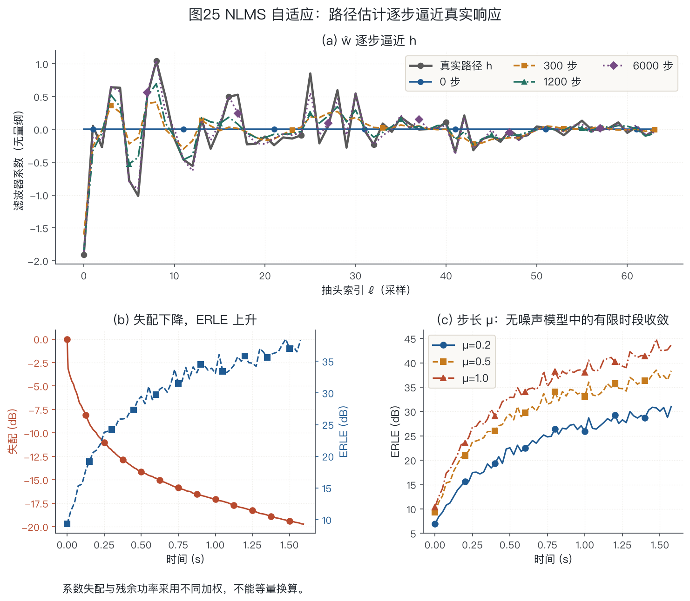
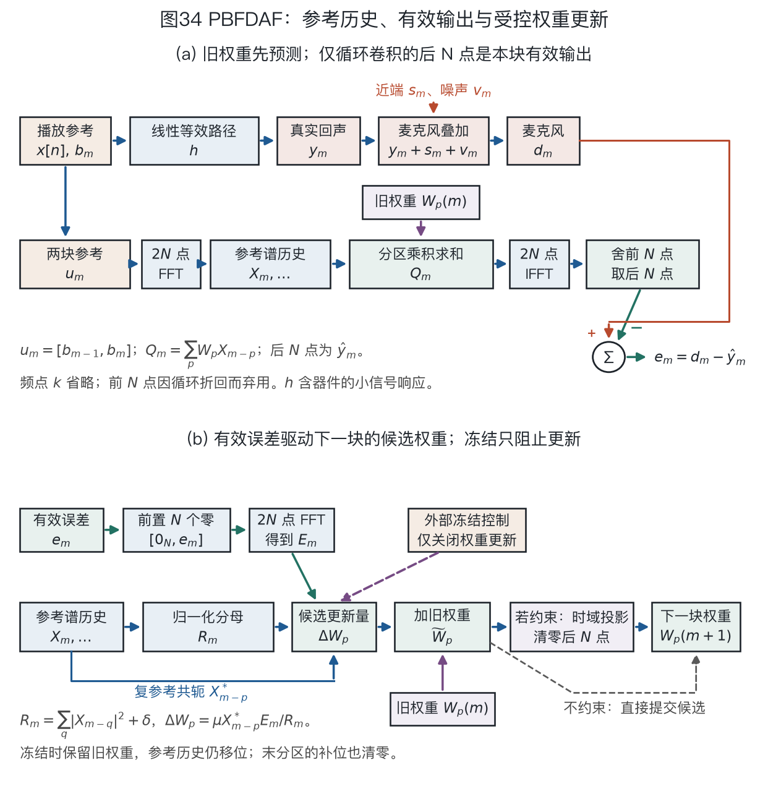
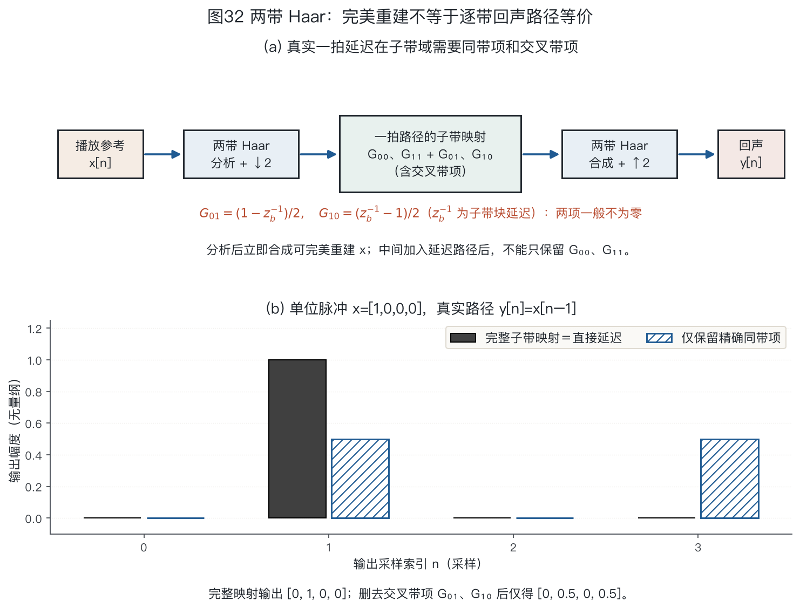
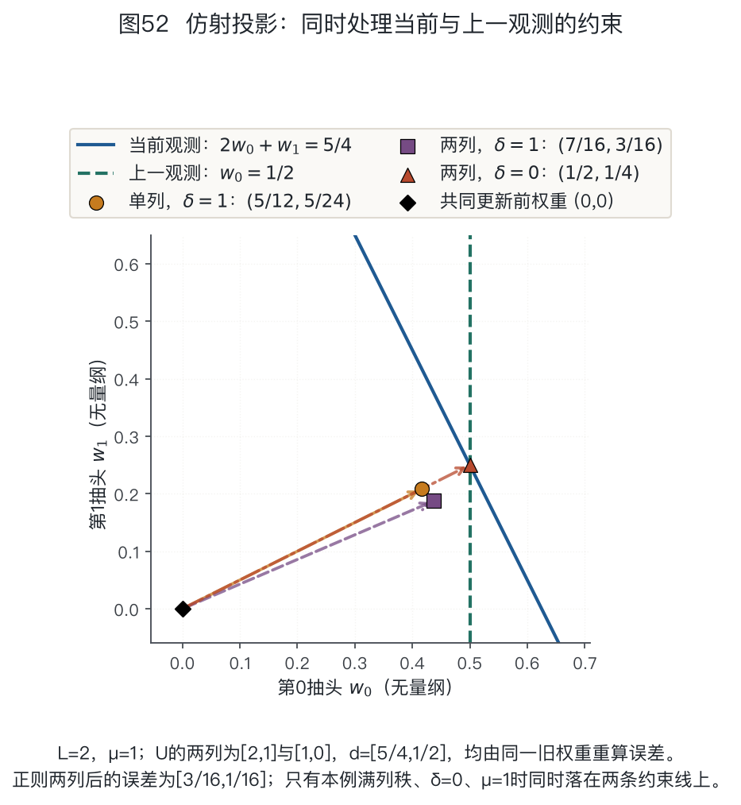
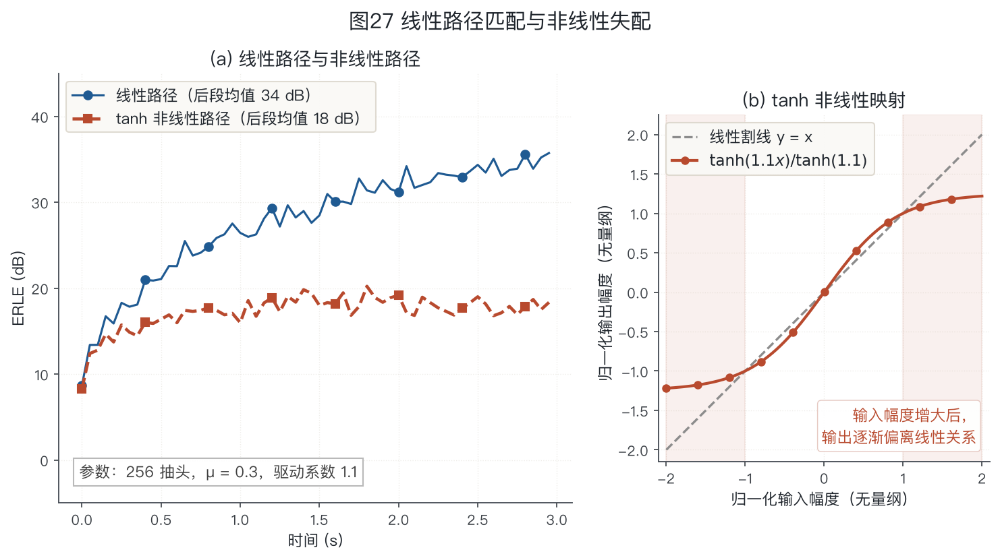
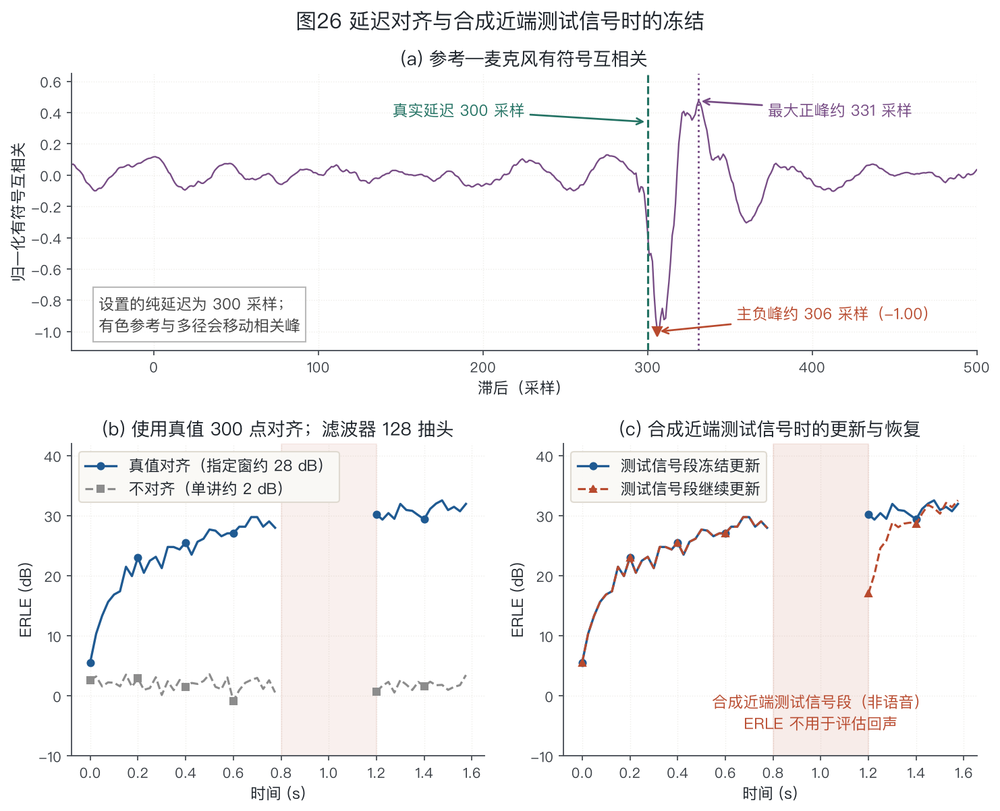
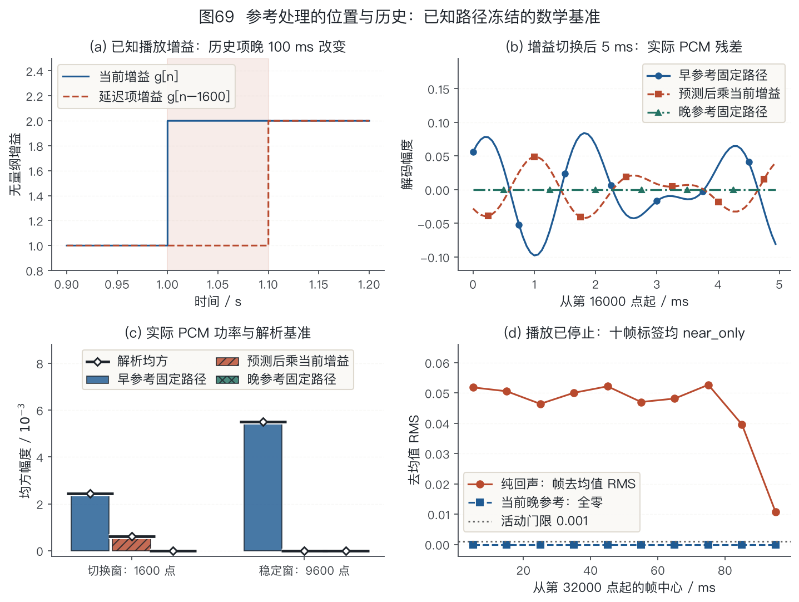
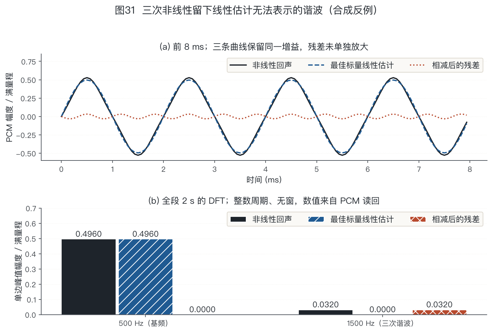
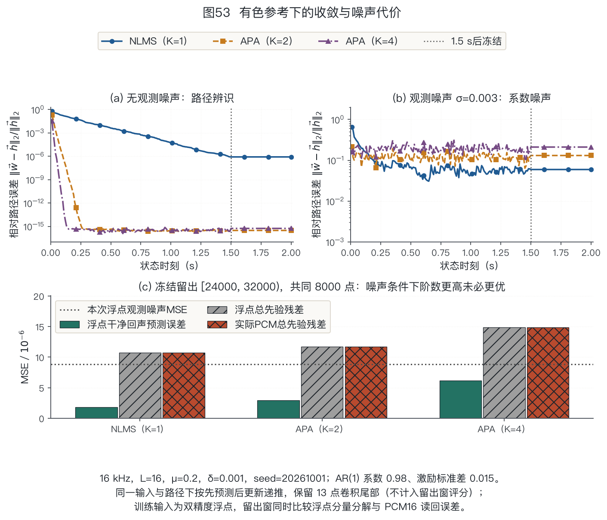

本页目录
本篇是本书正文第 6 章；正文与扩展专题共 16 章（第 0～15 章，其中第 0 章为数学基础，第 12～15 章为四篇扩展专题），另有附录 A、B。本篇可独立阅读，前后篇见下方导航。
导读首页：🏠 导读与导航 ｜ 上一篇：第 5 章 · 波束形成 ｜ 下一篇：第 7 章 · 去混响（WPE）
6. 声学回声消除（Acoustic Echo Cancellation，AEC）
第 4、5 章和第 9 章讨论声源方向、波束和轨迹。本章转向设备自身播放声返回麦克风所形成的声学回声；混响拖尾和多说话人混合分别见第 7、8 章。
阅读时先区分三个信号量：真实回声是播放参考经物理声学与器件链路在麦克风处产生的分量，估计回声是自适应滤波器由参考信号生成的数字副本，残差是麦克风观测减去估计回声后的输出，其中还可能包含需要保留的近端语音与环境底噪。为隔离单一物理机制以便手算复核，本章各节算例与合成音频默认采用无量纲确定性序列或固定种子的数学合成信号；涉及真实设备录音之处会单独说明采样与评测条件。下表列出起步阶段的核心术语，频域与学习型方法在后续相应小节展开。
| 术语 | 本章含义 |
|---|---|
| 参考（reference） | 设备已知的播放数字信号；取点位置、纯延迟和采样时钟均须与实际播放链路核对 |
| 抽头（tap） | 有限冲激响应（Finite Impulse Response，FIR）滤波器的一个系数；$L$ 个抽头覆盖离散时延 $0$ 到 $L-1$ |
| 先验残差 | 用本次系数更新前的旧权重预测回声并相减得到的因果实际输出 |
| 后验残差 | 用本次更新后的新权重回看同一观测重算的拟合差，仅用于代数检查，不能替代已输出的先验残差 |
| 冻结 | 按接口约定暂停滤波器权重更新；参考历史缓存与预测协方差是否继续推进须按具体算法分别说明 |
| 双讲检测（DTD） | Double-Talk Detection；判断远端播放与近端人声是否同时存在，用于保护路径估计不被近端语音带偏 |
| 残余回声抑制（RES / NLP） | Residual Echo Suppression / Nonlinear Processing；接在线性抵消之后的频域残余回声抑制模块，不等同于物理扬声器非线性辨识 |
6.1 回声模型与基础自适应滤波
智能音箱放音乐或会议终端外放远端人声时，扬声器发出的声音既会直接传到本机麦克风，也会经过桌面、墙面反射以及机壳机械耦合被录进去。回声相对于近端说话人语音的强弱取决于播放音量、扬声器与麦克风间距、房间混响以及壳体隔振设计；一旦回声占优，远端通话方就会听到自己延迟返回的说话声，本机语音唤醒与识别率也会大幅下降。
与未知环境噪声不同，回声消除握有一项关键先验：设备自己保存着即将播放的数字参考信号 $x[n]$。真正未知的，只是 $x[n]$ 经过数模转换、功放、扬声器、房间声场和麦克风之后所经历的声学与电声变换。本节先建立线性离散卷积模型与基础自适应更新，后续小节依次展开长路径分块加速、扬声器非线性与保护、延迟与双讲控制、残余抑制与学习型混合结构、多通道阵列与多参考、参考取点与工业引擎闭环，以及全双工评测标准与故障诊断。
6.1.1 回声从哪来：系统模型与四种场景
先把参考取点之后的播放与声学传播链路近似为因果、有限长、线性时不变（LTI）系统。约定离散时间下标为 $n$，信号延迟为减号，麦克风在第 $n$ 个采样时刻录到的离散序列 $d[n]$ 可写成三项之和：
$$\begin{aligned} d[n]&=s[n]+y[n]+v[n],\\ y[n]&=\sum_{\ell=0}^{L-1}h[\ell]x[n-\ell]. \end{aligned}\tag{6-1}$$
式(6-1)中，$y[n]=(x*h)[n]$ 是真实回声分量，$*$ 表示离散线性卷积；$s[n]$ 是需要无损保留的近端说话人语音；$x[n]$ 是设备保存的远端播放参考序列；$h[\ell]$ 是长度为 $L$ 的线性回声路径冲激响应，$\ell=0,\ldots,L-1$ 为离散抽头时延索引；$v[n]$ 是环境背景噪声与电路底噪。
这里 $h[\ell]$ 表示从数字参考取点到麦克风输出之间的线性等效路径，涵盖数模转换器、功放与扬声器的小信号线性响应、房间声学传播（参见 §2.4）以及麦克风频响，因此不能与纯空气声学房间冲激响应直接画等号。滤波器需要覆盖的时长由目标设备的实测回声衰减决定：在 $16\ \mathrm{kHz}$ 采样率下，$1\ \mathrm{ms}$ 对应 $16$ 个抽头，$64\ \mathrm{ms}$ 对应 $1024$ 个抽头；超出 $L$ 个抽头未覆盖的晚期混响拖尾会留在残差中，交由后置残余回声抑制器处理。
物理世界中，微型扬声器大振幅削顶、功放动态压缩、智能功放保护限幅和壳体非线性谐振无法由单一线性卷积精确表达；人员走动、设备挪动与室温起伏又会让路径随时间缓慢或突然改变（若显式标出时变可记为 $h_n[\ell]$）。工程系统因此把 $h[\ell]$ 视为短时局部有效的线性近似，依靠在线自适应持续跟踪慢变，并把未建模的非线性与快变残余交给 §6.3 和 §6.5 的模块协同处理。
谈论任何 AEC 指标前，必须先指明系统处于哪一种通话活动场景，脱离场景孤立报出的衰减分贝数没有物理意义：
- 远端单讲（Single-Talk Far-End，STFE）：只有扬声器播放远端信号，$s[n]=0$，此时麦克风能量主要由回声构成，适合驱动滤波器收敛并测量回声衰减量；
- 近端单讲（Single-Talk Near-End，STNE）：只有本地用户在说话，远端参考静音，理想 AEC 应保持近端语音无损通过；
- 双讲（Double-Talk，DT）：远端播放与本地说话同时发生。残差 $e[n]$ 中包含强近端语音 $s[n]$，若滤波器盲目继续大步更新，系数就会被 $s[n]$ 带偏，后置抑制器也容易误伤近端字头，控制策略见 §6.4；
- 双方沉默（idle）：远端与近端均无有效活动。滤波器不应在微弱底噪激励下发生随机游走漂移，后置抑制与舒适噪声模块也不应制造突兀的静音切换（见 §6.5、§6.8）。
免提全双工通话要求同时压低远端单讲时的残余回声，并限制双讲时的近端语音失真。远端单讲且底噪远低于回声时，常用输入与输出功率之比近似回声返回损失增强（Echo Return Loss Enhancement，ERLE）；双讲段的评价口径、ITU-T 标准指标与分量真值边界见 §6.8。
围绕上述模型，Breining et al.（IEEE Signal Processing Magazine, 1999）将声学回声消除的工程挑战归纳为四点：
- 冲激响应长：会议室混响拖尾可达上百毫秒，时域 FIR 需要数千个抽头，不仅乘加运算量随 $L$ 增长，有色语音激励下的收敛速度也会明显变慢（§6.2 引入分区频域结构化解算力瓶颈）；
- 器件非线性：小型腔体扬声器与功放在高音量下产生谐波与互调失真，超出线性 FIR 的表达空间（见 §6.3）；
- 双讲干扰：近端语音 $s[n]$ 直接混入误差信号，既会放大在线更新的瞬时梯度波动，又会在与参考存在相关性时改变总体最优解（见 §6.4 与练习 E06-11 的严格区分）；
- 声学路径时变：人员走动、房门开合与室温变化都会持续改变等效路径 $h_n[\ell]$，要求算法在保护双讲的同时保持敏捷的跟踪能力。
边栏：室温变化如何悄悄搬动回声抽头。
干燥空气中的声速随摄氏温度 $T$ 近似按 $c\approx 331+0.61\,T\ (\mathrm{m/s})$ 变化。室温每升高 $1\ ^\circ\mathrm{C}$，声速加快约 $0.18\%$；升高 $10\ ^\circ\mathrm{C}$（例如空调开启或设备机身发热），声速改变约 $1.8\%$。对一条固定长度 $1\ \mathrm{m}$ 的传播路径，声波飞行时间会从 $20\ ^\circ\mathrm{C}$ 时的 $1/343.2\approx 2.914\ \mathrm{ms}$ 缩短为 $30\ ^\circ\mathrm{C}$ 时的 $1/349.3\approx 2.863\ \mathrm{ms}$，提前约 $50.9\ \mu\mathrm{s}$，在 $16\ \mathrm{kHz}$ 采样率下相当于移动了 $0.81$ 个采样间隔。
更棘手的是，直达声与第 $1,2,\ldots$ 次墙面反射的几何路程各不相同：路程越长的晚期反射，绝对时延漂移越大，因此整条冲激响应发生的是“时间轴拉伸或压缩”，而非整体平移固定的 $50.9\ \mu\mathrm{s}$。Elko, Diethorn & Gänsler（IWAENC 2003）与 Frontiers in Signal Processing（2024）的实测均表明，这种肉眼不可见的热漂移足以让出厂静态标定的固定滤波器失效，说明在线自适应是声学回声消除不可省略的根基。
在进入推导前，还需要厘清两对容易混淆的物理概念：
第一对是数字域波形相减（AEC）与空气声场物理相消（ANC / 车载 ICC）的本质分野。AEC 在数字处理器内部用麦克风采样 $d[n]$ 减去估计副本 $\hat y[n]$，目的是阻止本机播放声传回远端通话方，房间里的本地人耳依然听得到扬声器外放；只要副本相位误差超过 $60^\circ$，复数减法甚至可能令残余能量反超原回声（见练习 E06-04）。相比之下，主动噪声控制（Active Noise Control，ANC）通过次级扬声器向空气辐射反相声波，电子控制时延须严格小于主次声路飞行时差（常为亚毫秒级）；车载座舱通话增强（In-Car Communication，ICC）则将前排语音拾取放大后经后排扬声器实时播放在空气中与直达声物理叠加，ITU-T P.1150 要求其端到端延迟严控在哈斯效应融合阈值之下（$\Delta_{\mathrm{Rx}}\lt 15\ \mathrm{ms}$），而入耳式耳机通透模式（Hear-Through）的鼓膜叠加延迟上限更收紧至百微秒级（详见第 14 章 §14.10）。这类在空气中直接进入人耳的物理叠加干涉无法靠发送端数字 AEC 事后抹除，三类环路的梳状滤波频响与定量时延预算对比见 §6.7.1 与练习 E06-30 第 2 问。
第二对是波形减法与谱幅度乘法的分工。线性 AEC 握有参考波形 $x[n]$，能够同时估计回声的幅度与相位并直接作波形相减，在近端语音与回声同频重叠时依然可以只剥离回声而保留语音。当缺少精确波形参考（例如抑制线性未建模残余或未知背景噪声）时，经典后置滤波（如 §5.7 维纳后置滤波与 §6.5.1 的频域 RES）往往退而估计功率谱，再对混合时频系数乘以 $0$～$1$ 之间的实数标量增益——这会把同一时频格内的回声与近端语音按相同比例一并压低。至于多通道复数滤波、复数掩码或深度滤波（§6.5.2），则额外引入了跨通道或跨帧复数自由度，阅读时应按各自的数学算子准确区分。

观察图18的四个面板，可以把式(6-1)的物理形成机制、单通道线性 AEC 信号流与双讲冻结保护串联起来：
- 图18（a）：按单拍因果顺序绘出线性 AEC 基本结构——已时间对齐的参考 $x[n]$ 一路经扬声器与房间物理路径成为麦克风观测 $d[n]$ 的回声分量，另一路送入旧权重 $\hat{\vec w}[n]$ 合成回声副本 $\hat y[n]$；加法器计算先验残差 $e[n]=d[n]-\hat y[n]$ 输出，双讲检测（DTD）或更新控制开关则决定是否允许 $e[n]$ 驱动权重更新；
- 图18（b）：横轴为延迟时间（单位：$\mathrm{ms}$，$16\ \mathrm{kHz}$ 下共 $256$ 抽头 / $16\ \mathrm{ms}$），纵轴为归一化路径抽头幅度（$\|h\|_2=0.70$，对应 $\mathrm{ERL}\approx +3.1\ \mathrm{dB}$），依次呈现直达耦合主峰、三条早期反射峰与指数衰减的混响尾声；
- 图18（c）：在 $50\ \mathrm{ms}$ 短时窗内以分泳道形式清晰展开远端参考 $x[n]$、经路径卷积拉长尾部的真实回声 $y[n]$、需要保护的合成近端测试信号 $s[n]$ 以及麦克风拾音 $d[n]=y+s$，直观呈现 AEC “利用已知 $x[n]$ 剥离 $y[n]$、无损保留 $s[n]$”的物理目标；
- 图18（d）：横轴为时间（单位：$\mathrm{s}$），纵轴为远端单讲区间的分块 $\mathrm{ERLE}$（单位：$\mathrm{dB}$），对比“双讲区间冻结更新”与“失控继续更新”两条曲线。阴影区间内注入了合成近端测试信号 $s[n]$，残差 $e[n]$ 理应保留 $s[n]$，故该区间留空不按总功率比计算 $\mathrm{ERLE}$；冻结支路在双讲结束后立即恢复高抵消深度，而未冻结支路因权重被 $s[n]$ 带偏，恢复期出现明显的回声泄漏与二次重收敛过程（逐块 $\mathrm{dB}$ 均值与整窗总能量比的区别见练习 E06-18）。
6.1.2 线性自适应滤波：NLMS 回顾
为了在线追踪未知的 $h[\ell]$，我们维护一个长度为 $L$ 的实数自适应滤波器权重列向量 $\hat{\vec w}[n]\in\mathbb{R}^L$（分量为 $\hat w_0[n],\ldots,\hat w_{L-1}[n]$），并把当前时刻及过去 $L-1$ 个参考样本按当前样本在前的顺序排成列向量 $\vec x[n]=[x[n],x[n-1],\ldots,x[n-L+1]]^\top$。这样第 $0$ 个抽头恰好乘在最新样本 $x[n]$ 上，向量内积便与式(6-1)的离散卷积索引严格对齐。每一拍采样到来时，先用更新前的旧权重计算回声预测与先验残差：
$$\begin{aligned} \hat y[n]&=\hat{\vec w}^{\top}[n]\vec x[n],\\ e[n]&=d[n]-\hat y[n]. \end{aligned}\tag{6-2}$$
在远端单讲（$s[n]=0$）、底噪微弱且参考信号频谱充分激励的前提下，$e[n]$ 直接反映了路径失配 $(\vec h-\hat{\vec w}[n])^\top\vec x[n]$，压低残差功率即可推动 $\hat{\vec w}[n]$ 逼近真实路径 $\vec h$。反之，若只在某一个孤立采样或单一频率参考上看到 $e[n]$ 很小，并不能证明全部 $L$ 个抽头都已收敛到真值。
工业界最常用的时域基线更新规则是归一化最小均方（Normalized Least Mean Squares，NLMS）算法：
$$\begin{aligned} \Delta\vec w[n] &=\mu\frac{e[n]\vec x[n]} {\|\vec x[n]\|^2+\varepsilon},\\ \hat{\vec w}[n+1]&=\hat{\vec w}[n]+\Delta\vec w[n]. \end{aligned}\tag{6-3}$$
式(6-3)中，$\|\vec x[n]\|^2=\vec x^\top[n]\vec x[n]$（即 $\sum_{\ell=0}^{L-1}x^2[n-\ell]$）是当前参考滑窗的瞬时能量，$\mu$ 是无量纲步长因子，$\varepsilon>0$ 是防止参考静音时分母趋零的正向正则地板（若手算例题人为取 $\varepsilon=0$，则必须在 $\|\vec x[n]\|^2=0$ 时显式跳过更新以避免 $0/0$）。在记号约定上，经典自适应滤波公式主体常将自适应抽头简记为 $\vec w[n]$（如 §6.2 中的分区权重 $\vec w_p$、仿射投影与 RLS 权重 $\vec w_n$）；而在式(6-2)～式(6-3)以及系统框图与误差纵轴中，为与式(6-1)的真实回声路径 $\vec h$、真实回声分量 $y[n]$ 相区分，亦等价加帽记作 $\hat{\vec w}[n]$、$\hat y[n]$ 以强调其在线估计量属性。
式(6-3)可以从瞬时平方误差一步步推导出来（向量梯度、超平面正交投影与迭代优化基础见第 0 章 §0.5）：
- 定义瞬时目标与梯度：取当前时刻的先验残差平方 $J[n]=e^2[n]=(d[n]-\hat{\vec w}^\top[n]\vec x[n])^2$ 作为瞬时代价。将 $\vec x[n]$ 与 $d[n]$ 视为给定常数，对列向量 $\hat{\vec w}[n]$ 应用链式法则求偏导，得到瞬时梯度 $\nabla_{\hat{\vec w}}J[n]=2\,e[n]\,(-\vec x[n])$，整理即 $-2\,e[n]\vec x[n]$；
-
沿负梯度最速下降（LMS）与均值稳定性：把常数因子 $2$ 吸收进正步长 $\mu'$，令权重沿负梯度方向前进一步，得到 $\hat{\vec w}[n+1]=\hat{\vec w}[n]+\mu'\,e[n]\vec x[n]$，这就是经典的最小均方（Least Mean Squares，LMS）算法。定义系数误差 $\tilde{\vec w}[n]=\vec h-\hat{\vec w}[n]$，在远端单讲、零均值不相关观测噪声与经典独立性假设下对误差递推两边取期望，并记对称正定自相关矩阵 $\mathbf R_{xx}=\mathbb{E}[\vec x[n]\vec x^\top[n]]=\mathbf Q\boldsymbol\Lambda\mathbf Q^\top$（特征值 $\lambda_i>0$）：
$$\begin{aligned} \mathbb{E}[\tilde{\vec w}[n+1]] &=(\mathbf I-\mu'\mathbf R_{xx})\, \mathbb{E}[\tilde{\vec w}[n]],\\ v_i[n+1]&=(1-\mu'\lambda_i)\,v_i[n], \end{aligned}$$
其中旋转坐标 $\vec v[n]=\mathbf Q^\top\mathbb{E}[\tilde{\vec w}[n]]$ 使各特征模态彻底解耦。均值收敛当且仅当全部模态满足 $|1-\mu'\lambda_i|\lt 1$，即步长均值稳定区间为 $0\lt \mu'\lt 2/\lambda_{\max}(\mathbf R_{xx})$；当 $\mu'\lambda_i\ll 1$ 时，第 $i$ 个特征模态的衰减时间常数近似为 $\tau_i\approx 1/(\mu'\lambda_i)$，最慢与最快模态的收敛时间之比恰好等于条件数 $\kappa_2(\mathbf R_{xx})=\lambda_{\max}/\lambda_{\min}$； 3. 按输入能量归一化（NLMS）：上述稳定性条件直接揭示了普通 LMS 的尺度缺陷——播放音量调大 $10$ 倍，$\lambda_{\max}(\mathbf R_{xx})$ 就放大 $100$ 倍而极易越界发散；音量调小时收敛又陷入停滞。令 $\mu'=\mu/(\|\vec x[n]\|^2+\varepsilon)$，用当前窗口能量除掉输入尺度的二阶变化，便得到式(6-3)的 NLMS。
为了看清无量纲步长 $\mu$ 的几何尺度，假设 $\|\vec x[n]\|^2\gg\varepsilon$，把更新后的新权重 $\hat{\vec w}[n+1]$ 代回同一时刻的观测重算后验残差 $e'[n]$：
$$\begin{aligned} e'[n]&=d[n]-\hat{\vec w}^{\top}[n+1]\vec x[n]\\ &=d[n]-\bigl(\hat{\vec w}[n]+\Delta\vec w[n]\bigr)^{\top}\vec x[n]\\ &=e[n]-\mu\,e[n] \frac{\|\vec x[n]\|^2}{\|\vec x[n]\|^2+\varepsilon}\\ &=e[n]\left(1-\mu \frac{\|\vec x[n]\|^2}{\|\vec x[n]\|^2+\varepsilon}\right). \end{aligned}$$
当 $\varepsilon\ll\|\vec x[n]\|^2$ 时，括号内近似为 $1-\mu$，即 $e'[n]\approx(1-\mu)\,e[n]$。由此可见：$0\lt \mu\lt 2$ 保证单步后验残差的绝对值严格收缩（$|1-\mu|\lt 1$）；$\mu=1$ 会把当前这一个样本的后验误差一步归零（在无噪且无双讲时对应投影到超平面 $\vec x^\top[n]\vec w=d[n]$ 上，但若有噪声或双讲则会把干扰全盘并入权重）；$\mu=1.8$ 会让后验误差变号并保留 $80\%$ 幅度（$e'[n]\approx -0.8\,e[n]$），$\mu=2$ 则是单步幅度不衰减的临界边界。从约束优化视角看，取 $\varepsilon=0,\mu=1$ 的 NLMS 增量恰好也是最小扰动问题 $\min_{\Delta\vec w}\frac{1}{2}\|\Delta\vec w\|_2^2$（约束 $\vec x^\top[n]\Delta\vec w=e[n]$）的精确解——构造拉格朗日函数 $\mathcal L(\Delta\vec w,\alpha)=\frac{1}{2}\|\Delta\vec w\|_2^2-\alpha(\vec x^\top[n]\Delta\vec w-e[n])$，令 $\nabla_{\Delta\vec w}\mathcal L=\vec 0$ 得 $\Delta\vec w=\alpha\vec x[n]$，代回约束即得 $\alpha=e[n]/\|\vec x[n]\|^2$，这也正是 §6.2.5 仿射投影式(6-13)的 $K_n=1$ 特例。实际语音有色、含噪且存在双讲切换，工程步长通常选在 $0.1$～$0.6$ 之间并配合双讲控制扫描标定。
算例 6-1：NLMS 的一步手算
输入与口径：设 $L=3$ 抽头滤波器，当前参考回归向量 $\vec x[n]=[1,\ 0.5,\ -0.5]^\top$，初始权重全零 $\hat{\vec w}[n]=[0,\ 0,\ 0]^\top$，麦克风当前采样 $d[n]=0.8$，步长 $\mu=0.5$，在非零能量窗口上忽略极小正则项（取 $\varepsilon=0$）。按式(6-2)～式(6-3)逐步复算：
- 计算先验预测与先验残差：因初值为零，回声副本 $\hat y[n]=\hat{\vec w}^\top[n]\vec x[n]$ 展开为 $0\times 1+0\times 0.5+0\times(-0.5)=0$，因果输出的先验残差 $e[n]=d[n]-\hat y[n]=0.8$。
- 计算窗口能量分母：$\|\vec x[n]\|^2=1^2+0.5^2+(-0.5)^2=1+0.25+0.25=1.5$。
-
计算权重增量并更新系数：代入式(6-3)，更新方向严格平行于当前输入向量 $\vec x[n]$：
$$\begin{aligned} \Delta\vec w[n] &=\frac{0.5\times 0.8}{1.5}\begin{bmatrix}1\\0.5\\-0.5\end{bmatrix} =\frac{4}{15}\begin{bmatrix}1\\0.5\\-0.5\end{bmatrix} \approx\begin{bmatrix}0.267\\0.133\\-0.133\end{bmatrix},\\ \hat{\vec w}[n+1]&=\hat{\vec w}[n]+\Delta\vec w[n] =\begin{bmatrix}4/15\\2/15\\-2/15\end{bmatrix} \approx\begin{bmatrix}0.267\\0.133\\-0.133\end{bmatrix}. \end{aligned}$$
-
回看同一观测的后验残差：用精确分数代入检验后验预测：
$$\begin{aligned} \hat y'[n]&=\hat{\vec w}^\top[n+1]\vec x[n]\\ &=\frac{4}{15}\times 1+\frac{2}{15}\times 0.5 +\left(-\frac{2}{15}\right)\times(-0.5)\\ &=\frac{4+1+1}{15}=\frac{6}{15}=0.4, \end{aligned}$$
故后验残差 $e'[n]=0.8-0.4=0.4=(1-0.5)\,e[n]$，恰好减半。
换一组输入再验“减半”规律：改取 $\vec x[n]=[0.8,-0.4,0.4]^\top$、$d[n]=0.6$、$\hat{\vec w}[n]=\vec 0$、$\mu=0.5$。此时窗口能量 $\|\vec x[n]\|^2=0.64+0.16+0.16=0.96$，权重增量为 $(0.5\times 0.6/0.96)\,\vec x[n]=0.3125\,\vec x[n]$，算出 $[0.25,-0.125,0.125]^\top$。代回同一输入得
$$\begin{aligned} \hat y'[n]&=0.25\times 0.8+(-0.125)\times(-0.4)+0.125\times 0.4\\ &=0.2+0.05+0.05=0.3, \end{aligned}$$
后验残差 $e'[n]=0.6-0.3=0.3$，依然精确等于 $(1-\mu)\,e[n]$。这说明单步后验缩放因子 $1-\mu$ 由正交投影结构决定，不依赖具体数字。但也要清醒看到：一步更新只消除了沿 $\vec x[n]$ 这一个一维方向上的误差分量，与 $\vec x[n]$ 正交的另外 $L-1$ 个子空间方向尚未修正，必须靠后续不同方向的输入向量继续提供梯度才能辨识整条路径。

结合图18（d）与图25，可以把 NLMS 的系数逼近过程、失配与能量衰减的加权关系以及步长权衡读透。看图25（无噪、无近端干扰的纯线性路径匹配实验）：
- 图25（a）：横轴为抽头索引 $\ell$，纵轴为无量纲滤波器系数，依次截取早期递增快照（$0$ 步、$300$ 步、$1200$ 步与 $6000$ 步），直观呈现 $\hat{\vec w}[n]$ 从全零初值出发逐步抬升主峰、补全反射抽头并贴合灰色真实响应 $h[\ell]$ 的渐进过程；
- 图25（b）：采用双纵轴同时绘制归一化系数失配分贝值 $10\log_{10}(\lVert\hat{\vec w}[n]-\vec h\rVert_2^2 / \lVert\vec h\rVert_2^2)$（左纵轴红色实线）与 $\mathrm{ERLE}$（右纵轴蓝色虚线，单位 $\mathrm{dB}$）。两条曲线整体趋势相反，但并非严格的等量镜像换算：记抽头误差向量为 $\tilde{\vec w}[n]=\vec h-\hat{\vec w}[n]$，在有色参考激励下，残余回声功率等于 $\tilde{\vec w}^\top[n]\mathbf R_{xx}\tilde{\vec w}[n]$，即由输入相关矩阵 $\mathbf R_{xx}$ 加权。举一个二抽头最小例子即可看明：设零均值回归向量的协方差矩阵为 $\mathbf R_{xx}=\operatorname{diag}(100,1)$，现有两组路径误差向量 $[0.1,0]^\top$ 与 $[0,0.1]^\top$；两者的欧氏范数同为 $0.1$（相对失配分贝值完全相同），但前者落在高能量方向上，产生的残余回声功率为 $100\times 0.1^2=1$，后者落在弱能量方向上，残余功率仅为 $1\times 0.1^2=0.01$，两者相差 $20\ \mathrm{dB}$；
- 图25（c）：对比不同步长 $\mu$ 在有限观测时段内的收敛轨迹：无观测噪声时 $\mu$ 越接近 $1$ 下降越陡；但在真实含噪系统中，过大的 $\mu$ 会把底噪持续折算进权重，抬高稳态失调（misadjustment）。
步长、正则项与充分激励
工程调参中，$\mu$、$\varepsilon$ 与参考信号的频谱跨度共同决定了 NLMS 能否稳定收敛到真实物理路径。
步长 $\mu$ 控制“收敛速度”与“抗噪稳健性”的折中：调大 $\mu$ 能加快冷启动与路径突变后的重收敛，但观测含底噪或双讲漏检尚未冻结时，大步长会把更多干扰写进抽头。
正则项 $\varepsilon$ 则必须在物理量纲上与分母中的窗口能量 $\|\vec x[n]\|^2$ 保持一致（均为信号幅度的平方）：无论是取固定绝对能量地板，还是写成随平滑参考能量 $P_x$ 浮动的 $\varepsilon=\eta P_x$（此时比例系数 $\eta$ 才是无量纲数），若信号从 $[-1,1)$ 浮点表示切换为 16 位有符号整数 $[-32768,32767]$，能量尺度会放大 $32768^2\approx 1.07\times 10^9$ 倍，绝不能原封不动照搬同一个绝对常数 $\varepsilon$。标定时应依次扫描全零静音、低电平底噪播放与正常音量外放三档信号，确保静音期不发生除零异常、弱播放期又不因 $\varepsilon$ 过大而使有效步长过度衰减。
为什么窄带参考会让多抽头滤波器“学不全”路径？ 从算例 6-1 第 3 步已知，NLMS 每一拍只沿当前 $\vec x[n]$ 方向修正权重；要在长时平均意义下唯一确定全部 $L$ 个抽头，正规方程 $\mathbf R_{xx}\vec w=\vec r_{xd}$（其中 $\mathbf R_{xx}=\mathbb{E}[\vec x[n]\vec x^\top[n]]$）必须满秩且良态，这一条件称为充分激励（persistent excitation）。如果远端只播放一个频率不在 $0$ 或 $\pi$ 的稳态实正弦单音 $x[n]=A\cos(\Omega_0 n+\varphi)$，它在任意时刻的滞后序列都只能由 $\cos(\Omega_0 n)$ 和 $\sin(\Omega_0 n)$ 两个基函数线性张成，因此 $\operatorname{rank}(\mathbf R_{xx})=2$：一旦滤波器长度 $L\ge 3$，相关矩阵严格奇异，存在无穷多组完全不同的抽头都能把这条单音抵消为零，一旦远端换成宽带人声就会立刻漏出回声（见算例 6-5）。
即便参考不是离散纯单音，而是在一段连续窄带数字角频率区间 $[-b,b]\subset[-\pi,\pi]$（$b>0$）内具有平坦功率谱密度、带外功率严格为零的带限随机过程，相关矩阵虽然在数学上满秩，也会随着带宽变窄而迅速病态化。我们可以把这个经典的傅里叶对偶关系完整推出来：
设零均值平稳实过程 $x[n]$ 的方差归一化为 $r[0]=\mathbb{E}[x^2[n]]=1$。为了使逆离散时间傅里叶变换（IDTFT）在零滞后处积分为 $1$，其在数字角频率 $\Omega_{\mathrm{d}}\in[-b,b]$ 上的常数功率谱密度须取 $S_{xx}(\Omega_{\mathrm{d}})=\pi/b$（带外 $b\lt |\Omega_{\mathrm{d}}|\le\pi$ 处 $S_{xx}(\Omega_{\mathrm{d}})=0$）。按维纳—辛钦定理计算整数滞后 $k$ 处的自相关序列 $r[k]=\mathbb{E}[x[n]x[n-k]]$：
$$\begin{aligned} r[k]&=\frac{1}{2\pi}\int_{-\pi}^{\pi} S_{xx}(\Omega_{\mathrm{d}})\, e^{\mathrm{j}\Omega_{\mathrm{d}} k}\,\mathrm{d}\Omega_{\mathrm{d}}\\ &=\frac{1}{2\pi}\int_{-b}^{b}\frac{\pi}{b} e^{\mathrm{j}\Omega_{\mathrm{d}} k}\,\mathrm{d}\Omega_{\mathrm{d}}\\ &=\frac{e^{\mathrm{j}kb}-e^{-\mathrm{j}kb}}{\mathrm{j}2kb} =\frac{\sin(kb)}{kb} =\operatorname{sinc}\!\left(\frac{kb}{\pi}\right),\quad k\neq 0, \end{aligned}$$
且连续极限给出 $r[0]=1$。于是，一个 $L=3$ 抽头回归向量 $\vec x[n]=[x[n],x[n-1],x[n-2]]^\top$ 的 $3\times 3$ 实对称 Toeplitz 自相关矩阵（第 $(i,j)$ 元为 $r[i-j]$）显式写为：
$$\mathbf R_{xx}=\begin{bmatrix} 1 & \dfrac{\sin b}{b} & \dfrac{\sin(2b)}{2b} \\ \dfrac{\sin b}{b} & 1 & \dfrac{\sin b}{b} \\ \dfrac{\sin(2b)}{2b} & \dfrac{\sin b}{b} & 1 \end{bmatrix}.$$
从这个 $3\times 3$ 矩阵能直观看出窄带病态的根源：当通带半宽 $b$ 越缩越窄时，$\sin(kb)/(kb)\approx 1-(kb)^2/6$ 越来越逼近 $1$，矩阵的三列几乎退化成一模一样的 $[1,1,1]^\top$，相邻采样高度共线。具体代入三组带宽计算特征值：
- 宽带半带激励 $b=\pi/2$：$r[1]=2/\pi\approx 0.6366$，$r[2]=0$，最小特征值 $\lambda_{\min}\approx 0.0997$，二范数条件数 $\kappa_2(\mathbf R_{xx})=\lambda_{\max}/\lambda_{\min}$ 约为 $19$，三个特征方向都能顺畅收敛；
- 窄带激励 $b=\pi/8$：$r[1]\approx 0.9745$，$r[2]\approx 0.9003$，最小特征值骤降到 $\lambda_{\min}\approx 3.57\times 10^{-4}$，条件数升至约 $8134$；
- 极窄带激励 $b=\pi/32$：$r[1]\approx 0.9984$，$r[2]\approx 0.9936$，最小特征值仅剩 $\lambda_{\min}\approx 1.38\times 10^{-6}$，条件数高达约 $217\text{ 万}$。
虽然这三组矩阵的行列式都严格大于零（理论上可逆），但在条件数高达百万量级时，梯度下降在弱特征方向上的时间常数会被拉长百万倍，有限长语音片段上的微小观测噪声也会在高频差模方向上被剧烈放大。工程排障时先用白噪声或扫频宽带信号确认硬件通路与最大可达 ERLE，再换真实节目源检验收敛速度（见练习 E06-23、E06-24），依据正在于此。
最后留一道直观辨析：单个单位脉冲 $x=[1,0,0,\ldots]$ 算不算充分激励？ 脉冲滑过 $L$ 个抽头位置时虽依次取遍全部标准正交基方向（样本外积和恰为 $\mathbf I_L$），但每个方向在整个时间轴上只出现一次；在 $0\lt \mu\lt 1$ 的在线迭代下，仅凭单次扫过无法把初始失配收敛到零（完整三拍手算与结论留待练习 E06-01 独立验算）。
6.2 工程化线性自适应：频域、子带、比例、仿射投影、RLS 与卡尔曼
当房间混响较长或采样率升至 $48\ \mathrm{kHz}$ 时，直接运行逐样本时域 NLMS 会同时撞上“乘加计算量过高”与“有色语音收敛偏慢”两道墙。本节沿着工程演化的清晰脉络依次拆解六类改进方案：§6.2.1～§6.2.2 用分区块频域结构（PBFDAF）把长卷积拆短并借助 FFT 加速；§6.2.3 剖析子带分解为何会冒出跨带混叠耦合项；§6.2.4 用比例步长（IPNLMS）把更新份额向稀疏主峰集中；§6.2.5 用仿射投影（APA）联立最近 $K$ 个观测方向消除局部相关性；§6.2.6 用递归最小二乘（RLS）维护指数加权历史相关矩阵的逆；§6.2.7 引入同时刻画路径漂移与双讲观测不确定度的卡尔曼滤波（FDKF / PBFDKF）。
先算一笔时域基线的乘加账。对长度 $L$ 的时域 NLMS，每一拍采样的卷积预测 $\hat{\vec w}^\top[n]\vec x[n]$ 需 $L$ 次乘法，权重更新 $\Delta\vec w[n]$ 需 $L$ 次乘法；若朴素重算 $\|\vec x[n]\|^2$ 则再加 $L$ 次乘法，合计每样本约 $3L$ 次乘法。利用滑窗移位关系 $p_n=p_{n-1}+x^2[n]-x^2[n-L]$ 递推分母能量，可把能量项降为常数次运算（长时浮点运行需按零初值起步并定期重算真实平方和以消除舍入漂移），但滤波与更新两项仍刚性消耗 $2L$ 次乘法。例如取 $L=3$、输入序列依次为 $1,2,3,4$，前窗能量 $1^2+2^2+3^2=14$，移入 $4$、移出 $1$ 得 $14+4^2-1^2=29$，与直接重算 $2^2+3^2+4^2=29$ 完全一致，但预测和更新的 $2L$ 次乘加并未减少。
换成具体设备规格：窄带 $8\ \mathrm{kHz}$、$L=1024$（覆盖 $128\ \mathrm{ms}$）时，朴素口径约需 $3072\times 8000\approx 2458\text{ 万}$次乘法/秒，递推能量口径核心项也需约 $1638\text{ 万}$次/秒；到了高清会议终端常用的 $48\ \mathrm{kHz}$、$L=4096$（覆盖约 $85.3\ \mathrm{ms}$），单声道时域核心乘加就升至每秒近 $4\text{ 亿}$次，多麦克风并发时更是难以承受。这正是工业界普遍转向分区频域与子带架构的直接动因。
6.2.1 PBFDAF：从长回声路径到逐块更新
如果直接用单块频域自适应滤波（FDAF）把一条 $4096$ 抽头的回声路径一次性变到频域，就必须攒够 $4096$ 个新采样才能做一次块卷积，仅成块等待时间在 $16\ \mathrm{kHz}$ 下就高达 $256\ \mathrm{ms}$，实时通话根本无法接受。分区块频域自适应滤波（Partitioned-Block Frequency-Domain Adaptive Filtering，PBFDAF）沿用多延迟块频域（Multidelay Block Frequency-Domain，MDF；Soo & Pang, 1990）的分治思想：把总长 $L$ 的时域抽头切成 $P=\lceil L/N\rceil$ 个长度为 $N$ 的短分区，每次只等 $N$ 个新采样（如 $N=64$ 或 $128$，仅 $4$ 或 $8\ \mathrm{ms}$）就用长度 $2N$ 的快速傅里叶变换（Fast Fourier Transform，FFT）完成重叠保存（overlap-save）线性卷积。若 $L$ 不是 $N$ 的整数倍，末分区不足 $N$ 的尾部位置固定补零，这些补零位不代表新增可学习的物理抽头。
先把块号、分区号与频点索引定准。设负时间采样全为零，第 $m$ 块新到达的 $N$ 个参考样本记为行块 $b_m=[x[mN],\ldots,x[mN+N-1]]$；将上一块末尾的 $N$ 个历史样本与当前新块首尾相接，拼成长度 $2N$ 的重叠输入窗 $u_m=[b_{m-1},b_m]$，对其作 $2N$ 点正变换得到复频谱 $X(k,m)=\operatorname{FFT}_{2N}(u_m)$，其中 $k=0,\ldots,2N-1$ 为频点索引。与此同时，把长度为 $L$ 的时域路径第 $p$ 段 $h_p=[h[pN],\ldots,h[pN+N-1]]$（$p=0,\ldots,P-1$）在末尾补 $N$ 个零扩成 $[h_p,0_N]$，对应的频域自适应权重记为复数谱 $W_p(k,m)$。各分区与历史参考谱的配对关系如下表所示：
| 时域路径的位置 | 使用的参考谱 | 它在本块输出中代表什么 |
|---|---|---|
| $p=0$，抽头 $0,\ldots,N-1$ | $X(k,m)$ | 当前及紧邻的参考样本产生的直达与早反射回声 |
| $p=1$，抽头 $N,\ldots,2N-1$ | $X(k,m-1)$ | 延迟 $1$ 个分区的参考历史产生的回声 |
| $p=P-1$，最后 $N$ 个位置 | $X(k,m-P+1)$ | 长混响尾部；末分区不足 $N$ 处固定为零 |
这张表揭示了分区加速的核心机制：“第 $p$ 个频域分区”对应时域脉冲响应的第 $p$ 段抽头，与之相乘的恰好是 $p$ 块之前已经算好并保存在缓存里的参考频谱 $X(k,m-p)$。每来一块新数据，系统只需对最新拼接窗 $u_m$ 计算 $1$ 次 FFT，把旧谱沿延迟线向后平移一格即可直接复用，从而省去对历史参考块的重复变换。这也带来一条硬性状态纪律：即使双讲期间冻结了权重更新，参考频谱历史移位也绝不能暂停，否则下一块的回声预测就会与真实播放时间轴错位。
先预测有效半块，再形成先验残差。 第 $m$ 块到来时，先用更新前的旧权重在每个频点累加 $P$ 个分区的频域乘积 $Q_m(k)=\sum_{p=0}^{P-1}W_p(k,m)X(k,m-p)$，再经 $2N$ 点逆快速傅里叶变换（Inverse Fast Fourier Transform，IFFT）回到时域得到长度 $2N$ 的循环卷积序列 $q_m$。根据重叠保存原理，$q_m$ 的前 $N$ 点混有块首尾循环折回（wrap-around）伪影，必须丢弃；后 $N$ 点才精确等于线性卷积在当前块时刻的输出 $\hat y_m$。用块内局部下标 $r=0,\ldots,N-1$ 写出这一因果预测流程（前两行在固定频点上省略公共自变量 $k$，简写 $W_{p,m}=W_p(k,m)$、$X_{m-p}=X(k,m-p)$）：
$$\begin{aligned} Q_m&=\sum_{p=0}^{P-1}W_{p,m}X_{m-p},\\ q_m&=\operatorname{IFFT}_{2N}(Q_m),\\ \hat y_m[r]&=q_m[N+r],\\ e_m[r]&=d_m[r]-\hat y_m[r]. \end{aligned}\tag{6-4}$$
只要每个分区的频域权重 $W_p(k,m)$ 确实由“前 $N$ 点合法抽头（末短分区仅前 $L-(P-1)N$ 点）、后半段补零”的时域序列变换而来，式(6-4)取出的后半块 $\hat y_m$ 在代数上就与长度 $L$ 的直接时域 FIR 卷积严格相等。
构造误差谱时同样必须在前半块补零。 拿到长度 $N$ 的有效先验残差 $e_m$ 后，必须在前 $N$ 个位置显式填零排成 $[0_N,e_m]$，再作变换得到 $E(k,m)=\operatorname{FFT}_{2N}([0_N,e_m])$。如果图省事直接拿观测谱减去完整循环卷积谱 $Q_m$，前半块被丢弃的循环折回项就会溜进频域误差并污染梯度（稍后 §6.2.2 将给出完整矩阵证明）。Shynk（IEEE Signal Processing Magazine, 1992, §IV）系统对比了这类重叠保存有效区选择与梯度约束变体。
从渐近复杂度看，每块预测与相关运算都要遍历全部 $P=\lceil L/N\rceil$ 个分区：无时域梯度约束时，平均到每个新采样点的核心运算量约为 $O(\log N + L/N)$；若每块对全部 $P$ 个分区都执行一次“IFFT 回时域清零后半段、再 FFT 回频域”的合法抽头投影，则会额外增加约 $O((L/N)\log N)$ 的变换开销。具体常数因子还取决于实数半谱共轭对称复用、功率平滑方式与约束执行频率（参见 KU Leuven DSP-CIS 讲义第 13 章）。
算例 6-2：PBFDAF 选定核心算子的乘法计数
输入与口径：取滤波器总长 $L=1024$、块长 $N=128$、采样率 $8\ \mathrm{kHz}$，比较逐样本时域 NLMS 与分区数 $P=L/N=8$、FFT 长度 $2N=256$ 的 PBFDAF 在选定核心算子上的实数乘法次数（用于展示分块降阶的数量级原理，不等同于优化实数 FFT 库或整机程序的实测耗时）。
时域 NLMS 基准：每样本滤波 $L$ 次、更新 $L$ 次；朴素重算窗口能量再加 $L$ 次，共 $3L=3072$ 次实乘法/样本；采用滑窗递推能量时核心项为 $2L=2048$ 次实乘法/样本。
PBFDAF 逐块分解：每攒齐 $N=128$ 个新参考样本，每块需要依次执行的运算包括：
- 对拼接参考块 $u_m$ 作 $1$ 次 $256$ 点正变换，此前 $7$ 个历史分区的频谱直接沿缓存移位复用；
- 对 $8$ 个分区各做一次长度 $256$ 的逐频点复数乘法并累加，随后作 $1$ 次 $256$ 点 IFFT 取出后半块预测 $\hat y_m$；
- 对零填充有效误差 $[0_{128},e_m]$ 作 $1$ 次 $256$ 点 FFT，再与 $8$ 个分区的共轭参考谱各做一次长度 $256$ 的逐点复乘形成频域更新方向；
- 若启用逐分区严格时域梯度约束，每个分区还需作 $1$ 次 IFFT 清零后 $128$ 个非法位置、再作 $1$ 次 FFT 回到频域（共增加 $2P=16$ 次变换）；无约束版省去此步，轮流间歇约束版则按实际执行比例折算。
为了使纸面算术透明可复核，暂不折算实信号半谱共轭对称（工业实数 FFT 仅需存 $N+1=129$ 个独立频点，乘法约省一半），统一按完整 $2N=256$ 点复数变换 $4N\log_2(2N)=4\times 128\times 8=4096$ 次实乘法、每次 $256$ 点复乘 $256\times 4=1024$ 次实乘法核算：
- 无梯度约束核心项：每块含 $3$ 次变换与 $2\times 8$ 次复谱相乘，共 $3\times 4096 + 16\times 1024 = 12288+16384=28672$ 次/块，折合每样本 $28672/128 = 224$ 次；
- 每块全分区约束核心项：再加 $16$ 次变换 $16\times 4096=65536$ 次/块，合计 $94208$ 次/块，折合每样本 $94208/128 = 736$ 次。
若像本书教学代码那样每块对全部 $8$ 个分区的复频点显式重算模平方 $|X|^2=(\operatorname{Re} X)^2+(\operatorname{Im} X)^2$，还需外加 $2\times 256\times 8=4096$ 次实乘法/块（即 $32$ 次/样本），两项分别升至 $256$ 与 $768$ 次/样本（仍未计入求和、除法与步长缩放）。仅对比上述核心乘加分项，$224$ 与 $736$ 相对朴素时域 NLMS 的 $3072$ 分别缩减至约 $1/13.7$ 与 $1/4.17$（相对递推能量版 $2048$ 则约为 $1/9.1$ 与 $1/2.8$）。注意这一缩减比针对的是逐样本时域 NLMS；若对比对象本身已是相同块长、分区数与约束策略的“频域多抽头 NLMS”，二者执行的就是同一套频域算子，不存在额外加速（参见 MathWorks 频域自适应滤波文档对分区与约束模式的分类）。
块长与等待延迟的折中。在 $N=128$、采样率 $8\ \mathrm{kHz}$ 下，凑齐一块新采样需 $128/8000=16\ \mathrm{ms}$；注意 $2N=256$ 点 FFT 的前半段取自已到齐的上一块历史，并不需要额外再等 $16\ \mathrm{ms}$ 的未来数据。端到端系统延迟还叠加了声卡播放/采集缓冲与线程调度开销。例如固定总路径长度 $L=4096$、采样率 $16\ \mathrm{kHz}$（总覆盖 $256\ \mathrm{ms}$），调整新块长度 $N$ 只改变“单块等待时长”与“分区遍历次数”之间的权衡：
| 新块 $N$（样本） | 分区 $P$ | FFT 点数 $2N$ | 每块新数据时长 | 状态/延迟解释 |
|---|---|---|---|---|
| 64 | 64 | 128 | 4 ms | 新数据凑块等待短，但需遍历 64 个分区的乘加与缓存 |
| 128 | 32 | 256 | 8 ms | 实时语音通信常用的延迟与算力折中点 |
| 256 | 16 | 512 | 16 ms | 分区数减半，但凑块等待拉长至 16 ms |
实际选型需把凑块时长放进整机声学环路延迟预算中实测，并非 $N$ 越大总耗时就一定越低。
算例 6-3：两个样本一块，为什么要丢掉前半块
输入与口径：取最小分区尺寸 $N=2$、$P=2$（总长 $L=4$），设固定路径为 $h=[1,2\mid 3,4]$（竖线仅标出两个分区的切分位置），输入参考为 $x=[1,2,3,4]$，负时刻采样为零。先按式(6-1)直接做时域线性卷积作为真值基准：
- $y[0]=1\times 1=1$；
- $y[1]=1\times 2+2\times 1=4$；
- $y[2]=1\times 3+2\times 2+3\times 1=10$；
- $y[3]=1\times 4+2\times 3+3\times 2+4\times 1=20$，即前四拍真值输出为 $[1,4,10,20]$。
现在用重叠保存分区卷积逐块复算：
- 第 $m=0$ 块（输出时刻 $n=0,1$）：将两点历史零与新块 $[1,2]$ 拼成四点输入 $u_0=[0,0,1,2]$，与补零后的首分区 $[1,2,0,0]$ 作四点循环卷积得 $[4,0,1,4]$（末尾 $2\times 2=4$ 折回到第 $0$ 点）；此时前一块历史谱 $X_{-1}$ 为零，丢弃前两点 $[4,0]$，保留后两点得 $\hat y_0=[1,4]$，与真值前两拍完全吻合。
-
第 $m=1$ 块（输出时刻 $n=2,3$）：将上块 $[1,2]$ 与新块 $[3,4]$ 拼成 $u_1=[1,2,3,4]$。
- 首分区支路（$p=0$）：若将 $u_1=[1,2,3,4]$ 与未补零的 $[1,2]$ 做完整五点线性卷积，结果为 $[1,4,7,10,8]$；在长度 $4$ 上做循环卷积时，第 $5$ 点末尾值 $8$ 会折回加到第 $0$ 点上（$1+8=9$），变成 $[9,4,7,10]$。可见第 $0$ 点已被循环混叠污染，第 $1$ 点虽未混叠但属于上一块时刻，把前两点 $[9,4]$ 一并丢弃，后两点 $[7,10]$ 干净无损。
- 第二分区支路（$p=1$）：读取上一块输入 $u_0=[0,0,1,2]$ 与补零后的第二分区 $[3,4,0,0]$ 作四点循环卷积得 $[8,0,3,10]$（末尾 $2\times 4=8$ 折回到第 $0$ 点），同样丢弃前两点 $[8,0]$，取出有效后两点 $[3,10]$。
- 两支路有效半块相加：$[7,10]+[3,10]=[10,20]$，与时域直接卷积真值完全一致。倘若第二分区误读当前块 $u_1$，或者误把循环卷积前两点留作输出，结果都会立即出错。
PBFDAF 的频域更新式。 记第 $m$ 块、频点 $k$ 处由零填充有效残差 $[0_N,e_m]$ 变换得到的先验误差谱为 $E_m=E(k,m)$，$\mu$ 为块步长，$\delta>0$ 为防止静音除零的功率地板。在固定频点 $k$ 上按全部 $P$ 个分区的参考功率总和作归一化，可得投影前候选权重更新式：
$$\begin{aligned} R_m&=\delta+\sum_{q=0}^{P-1}|X_{m-q}|^2,\\ \Delta W_{p,m}&=\mu\frac{E_mX_{m-p}^*}{R_m},\\ \widetilde W_{p,m+1}&=W_{p,m}+\Delta W_{p,m}. \end{aligned}\tag{6-5}$$
式(6-5)中，第 $p$ 个分区的分子必须乘以延迟了 $p$ 块的共轭参考谱 $X_{m-p}^*$（因为预测谱是 $\sum_p W_{p,m}X_{m-p}$，第 $p$ 分区权重对预测误差的敏感度方向由其配对输入 $X_{m-p}$ 的复共轭决定）；分母 $R_m$ 则汇总了同时参与当前频点预测的全部 $P$ 个历史块的能量（工业实现中也常对功率谱做跨块指数平滑以抑制突发语音起始帧造成的分母剧烈跳变）。
块步长 $\mu$ 的稳定区间检验。 暂不施加时域梯度约束且在 $\delta\ll\sum_{q=0}^{P-1}|X_{m-q}|^2$ 时，将候选更新量 $\Delta W_{p,m}$ 代回本块循环卷积预测谱，得 $\Delta Q_m=\sum_{p=0}^{P-1}\Delta W_{p,m}X_{m-p}=\mu E_m\frac{\sum_p|X_{m-p}|^2}{R_m}\approx\mu E_m$。由 §6.2.2 式(6-6)可知，前半块补零后的误差谱满足有效区投影不变性 $\mathbf C\vec E_m=\vec E_m$，故本块后验有效误差谱近似收缩为
$$\vec E_m^+=\vec D_m-\mathbf C(\vec Q_m+\Delta\vec Q_m) =\vec E_m-\mathbf C\Delta\vec Q_m\approx(1-\mu)\vec E_m,$$
由此说明单块收敛同样要求 $0\lt \mu\lt 2$。若进一步对各分区施加 §6.2.2 的时域合法抽头投影 $\mathbf G=\mathbf F\mathbf U\mathbf U^\top\mathbf F^{-1}$（其主对角均值为 $N/(2N)=1/2$），每个分区的有效更新能量约减半，进一步拓宽了工程稳健裕度。
拿到式(6-5)的候选谱 $\widetilde W_{p,m+1}$ 后，无约束版本直接令 $W_{p,m+1}=\widetilde W_{p,m+1}$；而严格受约束版本则对每个分区独立执行一次跨频点投影：把全部 $2N$ 个频点的 $\widetilde W_{p,m+1}(k)$ 作 IFFT 回到时域，将后 $N$ 个循环相关非法位置（以及末短分区的补零位）强行置零，再作 FFT 得到下一块正式权重 $W_{p,m+1}(k)$。按工程调试顺序，单块完整闭环可归纳为六步：
- 拼接上一块参考与当前新块形成 $u_m$，计算 $X_m$ 并压入 $P$ 级参考谱延迟线；
- 用本块更新前的旧权重 $W_{p,m}$ 与 $X_m,\ldots,X_{m-P+1}$ 逐频相乘求和，经 IFFT 取出后半块作为回声预测 $\hat y_m$；
- 计算有效先验残差 $e_m=d_m-\hat y_m$ 作为本块音频输出；
- 在前半块补零构造 $[0_N,e_m]$ 并做 FFT 得 $E_m$，按式(6-5)算出各分区候选谱 $\widetilde W_{p,m+1}$；
- 按所选策略执行（或轮流执行）时域合法抽头清零投影，提交为新权重 $W_{p,m+1}$；
- 缓存当前时域参考块 $b_m$ 供下一块拼接使用（双讲冻结时仅跳过第 4、5 步，第 1～3 与第 6 步照常运行）。

对照图34的两个子图，可以把“两处截断/补零”的位置与职责分清：
- 图34（a）：上半部为真实声学回声叠加近端与噪声的物理通道，下半部为 PBFDAF 的数字预测通道：参考谱历史 $X_m,\ldots,X_{m-P+1}$ 逐块右移，与旧权重 $W_p(m)$ 相乘累加并做 IFFT 后，在预测支路执行第一次裁剪——丢弃前 $N$ 点循环混叠区，只拿后 $N$ 点去减 $d_m$；
- 图34（b）：展示误差回传与权重更新支路：有效残差 $e_m$ 先在前半块补 $0_N$ 再做 FFT 生成候选增量，若走上方梯度约束支路，则在时域执行第二次裁剪——将候选权重后 $N$ 点非法抽头清零后再变回频域；紫色虚线代表双讲冻结控制，它只切断权重写入，不阻断（a）中的参考移位与先验预测。
6.2.2 频域多抽头 NLMS：抽头是什么，何时等于 PBFDAF
文献与开源讨论中常把某类频域算法称作“频域多抽头 NLMS”。遇到这个名称时，第一件事是追问：它的“多抽头”究竟沿哪个维度排列？ 下面把最常见的两种数学结构拆开对比，并用矩阵代数严格导出重叠保存块梯度公式。
第一种结构：固定频点上沿 $P$ 个参考块延迟排列。 固定频点 $k$，把当前至过去 $P-1$ 块的参考谱排成 $P\times 1$ 复列向量 $\vec X_m(k)=[X(k,m),X(k,m-1),\ldots,X(k,m-P+1)]^\top$，把 $P$ 个分区的频域权重排成 $\vec W_m(k)=[W_0(k,m),\ldots,W_{P-1}(k,m)]^\top$（此处用实转置 $^\top$ 而非共轭转置 $^H$，以便频域预测内积直接写作 $\vec W_m^\top(k)\vec X_m(k)$）。于是式(6-5)在单频点上恰好合并成向量形式：
$$\begin{aligned} \Delta\vec W_m(k) &=\mu\frac{\vec X_m^*(k)E(k,m)} {\|\vec X_m(k)\|_2^2+\delta},\\ \widetilde{\vec W}_{m+1}(k) &=\vec W_m(k)+\Delta\vec W_m(k), \end{aligned}$$
其中上标 $*$ 表示逐元素取复共轭。例如在某频点取 $P=2$、$\vec X=[1,2]^\top$、$E=0.3$、$\mu=0.5$、$\delta=1$，分母为 $1^2+2^2+1=6$，两个分区的候选增量即 $0.5\times 0.3\times[1,2]^\top/6=[0.025,0.05]^\top$。
从表面形式看，它酷似“每个频点各自跑一条 $P$ 抽头复数 NLMS”。但它究竟为什么能优化时域有效残差，为什么不能省掉前半块补零和时域投影？下面用四步矩阵推导给出严格证明。
记 $\mathbf F\in\mathbb{C}^{2N\times 2N}$ 为标准正向 DFT 矩阵（第 $(k,r)$ 元为 $e^{-\mathrm{j}2\pi kr/(2N)}$；离散傅里叶矩阵与圆周卷积性质见第 0 章 §0.2），其共轭转置满足正交关系 $\mathbf F^H\mathbf F=2N\,\mathbf I_{2N}$，因此带 $1/(2N)$ 归一化的逆变换矩阵满足恒等式：
$$\begin{aligned} \mathbf F^{-1}&=\frac{1}{2N}\mathbf F^H,\\ \mathbf F^H&=2N\,\mathbf F^{-1},\qquad (\mathbf F^{-1})^H=\frac{1}{2N}\mathbf F. \end{aligned}$$
再定义两个实数选择与补零矩阵：取后半块矩阵 $\mathbf S=[\mathbf 0_{N\times N}\ \mathbf I_N]$（维度 $\mathbb{R}^{N\times 2N}$，左乘列向量时截取后 $N$ 点，而转置 $\mathbf S^\top$ 在前 $N$ 点补零），以及前半块补零矩阵 $\mathbf U=[\mathbf I_N\ \mathbf 0_{N\times N}]^\top$（维度 $\mathbb{R}^{2N\times N}$，把合法时域抽头 $\vec w_p\in\mathbb{R}^N$ 尾部补 $N$ 个零扩成 $2N$ 点，而 $\mathbf U^\top=[\mathbf I_N\ \mathbf 0_{N\times N}]$ 则截取前 $N$ 个合法抽头）。
在跨频点矩阵推导中，我们统一将沿全部 $2N$ 个频点竖排而成的整块频域列向量记作不带频点参数 $(k)$ 的带箭头向量 $\vec W_{p,m},\vec X_{m-p},\vec Q_m,\vec D_m,\vec E_m\in\mathbb{C}^{2N\times 1}$（以区别于前面固定单个频点 $k$、沿 $P$ 个分区排列的 $\vec X_m(k)\in\mathbb{C}^{P\times 1}$）。令 $\vec Q_m=\sum_{p=0}^{P-1}\vec W_{p,m}\odot\vec X_{m-p}$（$\odot$ 表示逐频点 Hadamard 乘积），则有效时域预测为 $\hat{\vec y}_m=\mathbf S\mathbf F^{-1}\vec Q_m$。将有效残差 $\vec e_m=\vec d_m-\hat{\vec y}_m$ 经 $\mathbf S^\top$ 在前半块补零后变到频域，正确的误差谱列向量为：
$$\begin{aligned} \vec D_m&=\mathbf F\mathbf S^\top\vec d_m,\\ \mathbf C&=\mathbf F\mathbf S^\top\mathbf S\mathbf F^{-1},\\ \vec E_m&=\mathbf F\mathbf S^\top(\vec d_m-\mathbf S\mathbf F^{-1}\vec Q_m)\\ &=\vec D_m-\mathbf C\vec Q_m. \end{aligned}\tag{6-6}$$
注意 $\mathbf S^\top\mathbf S$ 为对角分块阵 $\operatorname{diag}(\mathbf 0_N,\mathbf I_N)$，并不等于单位阵 $\mathbf I_{2N}$，因此式(6-6)第二行定义的频域投影矩阵 $\mathbf C$ 绝不是对角矩阵，而是把所有频点耦合在一起的循环卷积算子，所以 $\vec E_m$ 一般不等于 $\vec D_m-\vec Q_m$。用算例 6-3 的四点数据验算：设单分区真实抽头为 $[1,2]$、当前滤波器已精确收敛到 $[1,2]$，输入 $u_1=[1,2,3,4]$ 的四点循环卷积为 $q=[9,4,7,10]$，麦克风收到的真实有效输出恰好是 $\vec d=[7,10]^\top$。按式(6-6)计算，有效误差 $\vec e=[7,10]^\top-[7,10]^\top=[0,0]^\top$，补零变换得 $\vec E_m=\vec 0$，已收敛的滤波器保持在真值上；若漏掉投影矩阵 $\mathbf C$ 而错误计算
$$\vec D_m-\vec Q_m=\mathbf F[0,0,7,10]^\top-\mathbf F[9,4,7,10]^\top =\mathbf F[-9,-4,0,0]^\top\neq\vec 0,$$
前半块的循环折回值 $[-9,-4]$ 就会在完美匹配时制造非零假梯度，把原本已经收敛的抽头推偏。
现在把合法时域抽头 $\vec w_p\in\mathbb{R}^N$ 代入预测链路：$\vec W_{p,m}=\mathbf F\mathbf U\vec w_p$，与 $\vec X_{m-p}$ 逐点相乘即左乘对角阵 $\operatorname{diag}(\vec X_{m-p})$，再经 $\mathbf F^{-1}$ 和 $\mathbf S$ 得到第 $p$ 分区对本块有效输出的 $N\times N$ 线性映射矩阵：
$$\mathbf A_{p,m}=\mathbf S\mathbf F^{-1} \operatorname{diag}(\vec X_{m-p})\mathbf F\mathbf U.$$
定义本块有效残差平方和目标 $J_m=\frac{1}{2}\|\vec e_m\|_2^2$，对实向量 $\vec w_p$ 求负梯度并逐步代入刚才的 $\mathbf F^H=2N\,\mathbf F^{-1}$ 与 $(\mathbf F^{-1})^H=\frac{1}{2N}\mathbf F$：
$$\begin{aligned} \vec e_m&=\vec d_m-\sum_{p=0}^{P-1}\mathbf A_{p,m}\vec w_p,\\ J_m&=\frac{1}{2}\|\vec e_m\|_2^2,\\ -\nabla_{\vec w_p}J_m&=\mathbf A_{p,m}^H\vec e_m. \end{aligned}\tag{6-7}$$
把最后一行 $\mathbf A_{p,m}^H\vec e_m$ 显式展开（矩阵乘积取共轭转置时顺序反转，对角阵取共轭转置即对角元逐个取复共轭，实矩阵 $\mathbf S,\mathbf U$ 的共轭转置即实转置）：
$$\begin{aligned} \mathbf A_{p,m}^H\vec e_m &=\bigl(\mathbf S\mathbf F^{-1} \operatorname{diag}(\vec X_{m-p})\mathbf F\mathbf U\bigr)^H\vec e_m\\ &=\mathbf U^\top\mathbf F^H \operatorname{diag}(\vec X_{m-p}^*)\, (\mathbf F^{-1})^H\mathbf S^\top\vec e_m\\ &=\mathbf U^\top\bigl(2N\,\mathbf F^{-1}\bigr) \operatorname{diag}(\vec X_{m-p}^*) \left(\frac{1}{2N}\mathbf F\right)\mathbf S^\top\vec e_m\\ &=\mathbf U^\top\mathbf F^{-1} \bigl(\vec X_{m-p}^*\odot(\mathbf F\mathbf S^\top\vec e_m)\bigr)\\ &=\mathbf U^\top\operatorname{IFFT}_{2N}(\vec X_{m-p}^*\odot\vec E_m). \end{aligned}$$
由此得到严格的块梯度表达式：中间的缩放常数 $2N$ 与 $\frac{1}{2N}$ 恰好抵消，$\mathbf F\mathbf S^\top\vec e_m$ 正是式(6-6)前半块补零后的有效误差谱 $\vec E_m$，而左乘 $\mathbf U^\top$ 正是截取 IFFT 结果的前 $N$ 个合法时域点（当输入与误差均为实序列时，虚部严格抵消为零）。由此可以清晰界定各变体的数学身份：
- 若不做逐频点功率除法，仅对全部分区做合法抽头投影 $\mathbf U^\top$，FFT 算出的就是精确的时域块 LMS 梯度；
- 式(6-5)在投影前先给每个频点乘上对角预条件因子 $R_m(k)^{-1}$，加速了有色语音中弱能量频带的收敛；但由于频域合法抽头投影算子 $\mathbf G=\mathbf F\mathbf U\mathbf U^\top\mathbf F^{-1}$ 会重新混合各个频点，且 $\mathbf G$ 与逐频对角矩阵 $\operatorname{diag}(\vec R_m)^{-1}$ 一般不可交换，受约束 PBFDAF 并非 $2N$ 条彼此绝缘的独立复数 NLMS。
下表汇总了五种易混叫法的模型结构与等价条件：
| 叫法或实现 | “抽头”与更新时刻 | 与本书 PBFDAF 的关系 |
|---|---|---|
| 逐样本时域 NLMS | $L$ 个样本级时延；每个样本的先验误差后立即更新 | 拟合同一条时域 FIR，但块内逐步改变权重，更新轨迹不同 |
| 时域块 LMS／共同标量归一变体 | $L$ 个样本级时延；整块误差由同一旧权重生成，块末更新 | 不做逐频预条件、保留时域投影的 FFT 实现精确计算同一块梯度 |
| 单分区频域块滤波（FDAF） | $P=1$；用单次长 FFT 覆盖整条路径 | 分区结构的 $P=1$ 特例；长路径时新样本凑块等待过长 |
| 分区重叠保存的频域多抽头 NLMS | 每频点含 $P$ 个参考块历史；按式(6-5)生成候选并投影 | 块长、FFT 缩放、有效区补零、分母与投影均一致时，逐块严格等价 |
| 普通加窗 STFT 同频跨帧滤波 | 每频点含多个分析帧历史；分析/合成窗与帧移另定 | 更新式外形相似，但忽略跨带项时一般不精确等于时域线性卷积 |
接续算例 6-3：两块自适应更新如何剔除非法抽头。 取 $N=P=2$（$L=4$）、$\mu=0.5$、$\delta=1$，初始权重与负时刻参考全零，给定测试序列 $x=[1,0,0,0]$、$d=[1,0,2,0]$（配套代码见 aec_partitioned_demo.py）：
- 第 $m=0$ 块：重叠输入 $u_0=[0,0,1,0]$ 的四点 FFT 为 $X_0=[1,-1,1,-1]$；旧权重为零，有效误差 $e_0=[1,0]$ 补零变换得 $E_0=[1,-1,1,-1]=X_0$，各频点分母 $|X_0|^2+\delta=1+1=2$。按式(6-5)得首分区频域增量 $\Delta W_{0,0}=0.5\times X_0^*\odot E_0/2=[0.25,0.25,0.25,0.25]$，IFFT 回时域恰为 $[0.25,0,0,0]$（后两点本就为零）；第二分区因 $X_{-1}=\vec 0$ 保持全零。
-
第 $m=1$ 块：新采样全零，但拼接输入为 $u_1=[1,0,0,0]$，故 $X_1=[1,1,1,1]$，历史谱 $X_0=[1,-1,1,-1]$ 仍在缓存中。先验预测为零，有效误差 $e_1=[2,0]$ 补零变换得 $E_1=[2,-2,2,-2]$，各频点分母为 $|X_1|^2+|X_0|^2+\delta=1+1+1=3$。
- 首分区（$p=0$）：$X_1^*\odot E_1=[2,-2,2,-2]$，乘 $\mu/3=1/6$ 得增量 $[1/3,-1/3,1/3,-1/3]$，其四点 IFFT 为 $[0,0,1/3,0]$；叠加上一块的 $[0.25,0,0,0]$ 后，首分区候选时域序列变为 $[0.25,0,1/3,0]$；
- 第二分区（$p=1$）：$X_0^*\odot E_1=[2,2,2,2]$，乘 $1/6$ 后作四点 IFFT 得候选序列 $[1/3,0,0,0]$。
-
为什么要清零后半段？ 看首分区候选 $[0.25,0,1/3,0]$ 的第 $2$ 号位置（从 $0$ 起计，即第 $3$ 个元素 $1/3$）：它代表首分区内的滞后 $2$，而第二分区的合法首抽头 $[1/3,0,0,0]$ 同样代表整条路径的滞后 $2$。若不执行时域梯度约束把首分区后两点清零，同一个物理滞后就会被两个分区重复表达，且首分区的非法第 $2$ 号位在下一次块循环卷积中还会破坏重叠保存假设。执行逐分区后 $N$ 点清零后，两分区合法抽头拼接为 $[0.25,0\mid 1/3,0]$，恢复唯一的四抽头 FIR 物理含义。
算例 6-4：逐频归一化为什么不等于时域 NLMS
输入与口径：取单分区 $N=2$、$P=1$、零初值、$\mu=\delta=1$，当前重叠保存输入 $u=[0,0,1,2]$，有效麦克风块 $d=[1,0]$（故有效先验误差 $e=[1,0]$，补零后为 $[0,0,1,0]$）。按正向 DFT 负指数 $e^{-\mathrm{j}2\pi kr/4}$、逆变换除以 $4$ 的标准约定，逐频点计算 $X(k)$、$E(k)$、功率分母 $|X(k)|^2+1$ 与候选增量 $\Delta W(k)=X^*(k)E(k)/(|X(k)|^2+1)$：
| $k$ | $X(k)$ | $E(k)$ | $\lvert X(k)\rvert^2+1$ | 候选更新量 $\Delta W(k)$ |
|---|---|---|---|---|
| 0 | $3$ | $1$ | $10$ | $3/10$ |
| 1 | $-1+2\mathrm{j}$ | $-1$ | $6$ | $(1+2\mathrm{j})/6$ |
| 2 | $-1$ | $1$ | $2$ | $-1/2$ |
| 3 | $-1-2\mathrm{j}$ | $-1$ | $6$ | $(1-2\mathrm{j})/6$ |
以 $k=1$ 行复核共轭符号：四点加权和 $X(1)=0+0+1e^{-\mathrm{j}\pi}+2e^{-\mathrm{j}3\pi/2}$ 化简为 $-1+2\mathrm{j}$，取共轭得 $X^*(1)=-1-2\mathrm{j}$，乘以 $E(1)=e^{-\mathrm{j}\pi}=-1$ 得 $1+2\mathrm{j}$，再除以 $|{-1+2\mathrm{j}}|^2+1=5+1=6$，即 $(1+2\mathrm{j})/6$。
现在把最后一列四个频点作四点 IFFT：第 $0$ 点为 $\frac{1}{4}[3/10 + 1/6 - 1/2 + 1/6]=1/30$；第 $1$ 点乘相位因子 $[1,\mathrm{j},-1,-\mathrm{j}]$ 后，两共轭项 $(-2\pm\mathrm{j})/6$ 的虚部相消，实部求和 $\frac{1}{4}(3/10-2/6+1/2-2/6)$ 同样化简为 $1/30$；完整四点候选序列为 $[1/30,1/30,-2/15,11/30]$，清零后两点非法区后得到合法两抽头更新 $[1/30,\ 1/30]^\top$。
对比时域块梯度：如果不做逐频点不同分母的除法，直接算 $\operatorname{IFFT}(X^*\odot E)$，结果是 $[1,0,0,2]$，截取前两点合法抽头为 $[1,0]^\top$——无论外层再除以哪一个公共标量能量，第二个抽头的更新量都恒为 $0$。逐频功率预条件压低了强频点 $k=0$（除以 $10$）、放大了弱频点 $k=2$（仅除以 $2$），经时域投影耦合后直接旋转了参数空间的更新方向，从而激活了第 $1$ 号抽头。这正是频域预条件加速有色信号收敛的代数本质，也说明它与时域 NLMS 具有不同的更新轨迹。
算例 6-5：预测残差很小，不一定辨识了路径
在 aec_partitioned_demo.py 中固定随机种子 2094，设真实九抽头稀疏路径为 $h=[0,0,0.7,-0.2,0.08,0,0,0,0.05]$，以无噪直接线性卷积生成麦克风观测；教学 PBFDAF 配置为 $N=16$、$L=9$、$\mu=0.3$、$\delta=0.05$。分别用“标准正态宽带白噪声”与“周期为 $8$ 点的单音正弦”各训练 $4096$ 点，随后冻结权重，换用同一段 $1024$ 点独立宽带白噪声作留出测试：
| 训练参考 | 训练末 1024 点先验残差均方 | 训练后相对路径误差 $\lVert\hat h-h\rVert_2/\lVert h\rVert_2$ | 冻结宽带留出残差均方 |
|---|---|---|---|
| 宽带白噪声 | $4.03\times10^{-27}$ | $3.27\times10^{-16}$ | $7.52\times10^{-32}$ |
| 周期 8 点纯音 | $1.11\times10^{-8}$ | $0.868$ | $0.382$ |
看第二行数字：纯音训练末尾的先验残差均方已经压到 $1.11\times 10^{-8}$（换算成训练段功率比已超过 $70\ \mathrm{dB}$），看似收敛充分；然而此时滤波器的相对系数误差高达 $86.8\%$，一旦冻结换上宽带新信号，留出残差均方立刻升至 $0.382$。原因与 §6.1.2 完全呼应：周期 $8$ 点的单音只在单一频率对上激励了二维子空间，其余正交频率方向上的抽头自由度根本未被观测约束。因此验收自适应滤波器时，绝不能只看同一段窄带训练录音的残差下降，必须包含宽带激励或更换节目源后的留出检验。
第二种易混结构：普通加窗 STFT 域的同频跨帧滤波（CTF）。 语音增强与神经网络前端常在常规加窗重叠短时傅里叶变换（Short-Time Fourier Transform，STFT）域工作。若在每个 STFT 频点上仅拿该频点自身过去若干帧的复数谱做线性组合（跨帧卷积传递函数近似，Convolutive Transfer Function，CTF），其更新方程虽然形似式(6-5)，但由于分析窗、合成窗及帧移下采样的存在，精确表示一条任意时域 FIR 通常还包含相邻频点之间的跨频带耦合项（完整推导参见 Avargel & Cohen, IEEE TASLP, 2007, §II, 式(7)～(11)）。
用一个最简单的两点无重叠矩形窗 DFT 就能算出这个跨频带项：设真实回声路径仅为一拍延迟 $y[n]=x[n-1]$，记第 $m$ 帧（含采样 $2m$ 与 $2m+1$）的两个频点为 $X_{0,m}=x[2m]+x[2m+1]$ 与 $X_{1,m}=x[2m]-x[2m+1]$。反解出帧末与帧首样本 $x[2m-1]=\frac{1}{2}(X_{0,m-1}-X_{1,m-1})$、$x[2m]=\frac{1}{2}(X_{0,m}+X_{1,m})$，则当前帧真实输出 $[x[2m-1],x[2m]]$ 的零频点 $Y_{0,m}=x[2m-1]+x[2m]$ 精确等于：
$$\begin{aligned} Y_{0,m}&=\frac{1}{2}(X_{0,m-1}-X_{1,m-1}) +\frac{1}{2}(X_{0,m}+X_{1,m}). \end{aligned}$$
可见输出零频点 $Y_{0,m}$ 一半来自零频点输入 $X_0$，另一半来自高频点输入 $X_1$；只用同频点历史 $X_{0,m},X_{0,m-1}$ 无论如何调参都会漏掉 $X_1$ 的贡献（除非时域路径恰好只在整帧延迟 $2q$ 处非零）。
工业开源代码中有两处常见工程技巧：一是 SpeexDSP 的 mdf.c 采用交替无约束 MDF（AUMDF），每块照常在频域更新全部 $P$ 个分区的权重，但每块只挑其中 $1$ 个或少数几个分区执行 IFFT/FFT 合法抽头清零投影，从而把第 4 步约束变换的均摊开销降低 $P$ 倍；二是 WebRTC AEC3 在分区结构之上进一步结合误差谱、激励门限与放大器饱和标志动态计算逐频步长增益（源码阅读路径详见研究手册）。
6.2.3 子带 AEC：分带、交叉项与可辨识性
除了重叠保存 FFT，降低长回声路径计算量并改善有色语音条件数的另一条经典路线是子带自适应滤波（Subband AEC）：先用分析滤波器组把全带参考 $x[n]$ 和麦克风信号 $d[n]$ 拆成若干个窄通带并做抽取降采样，在低采样率子带上运行短滤波器，最后把各子带残差经合成滤波器组拼回全带（评估总开销时须把分析/合成滤波器组的乘加和群延迟一并计入）。初学者最容易踏入的一个理论误区是以为：“只要分析—合成滤波器组满足完美重建（Perfect Reconstruction，PR），把每个子带单独配一个独立自适应滤波器就能无损抵消全带回声。”下面用能完整手算的两点正交 Haar 滤波器组证明：临界采样（抽取倍数等于子带数）下，哪怕仅仅 $1$ 个采样点的奇数延迟，也会立刻引发跨子带混叠耦合。
设块索引为 $m$，每块包含偶采样 $x[2m]$ 与奇采样 $x[2m+1]$（在子带速率上等价于 $2$ 倍抽取的两路多相分量 $x_0[m]=x[2m]$、$x_1[m]=x[2m+1]$）。定义两点正交 Haar 分析变换：
$$\begin{aligned} u_0[m]&=\frac{x[2m]+x[2m+1]}{\sqrt{2}},\\ u_1[m]&=\frac{x[2m]-x[2m+1]}{\sqrt{2}}. \end{aligned}\tag{6-8}$$
式(6-8)中，$u_0[m]$ 是两点局部低通和，$u_1[m]$ 是两点局部高通差，二阶 Haar 变换矩阵 $\mathbf H$（首行 $[1,1]/\sqrt{2}$、次行 $[1,-1]/\sqrt{2}$）满足正交对称性 $\mathbf H^\top=\mathbf H$ 且 $\mathbf H^2=\mathbf I_2$。因此不做任何中间修改时，合成公式 $[x[2m],x[2m+1]]^\top=\mathbf H[u_0[m],u_1[m]]^\top$（即 $x[2m]=(u_0[m]+u_1[m])/\sqrt{2}$，$x[2m+1]=(u_0[m]-u_1[m])/\sqrt{2}$）能够逐块完美重建原信号。
用两行多相分解看清跨带耦合从何而来。 设全带因果回声路径为长度 $L$ 的 FIR 滤波器 $d[n]=\sum_{\ell=0}^{L-1}h[\ell]x[n-\ell]$。把求和下标按偶数延迟 $\ell=2r$ 与奇数延迟 $\ell=2r+1$ 拆成两半，分别写出麦克风偶采样 $d[2m]$ 与奇采样 $d[2m+1]$ 的两行多相分解：
$$\begin{aligned} d[2m]&=\sum_{r\ge 0}h[2r]\,x[2(m-r)]\\ &\quad+\sum_{r\ge 0}h[2r+1]\,x[2(m-r-1)+1],\\ d[2m+1]&=\sum_{r\ge 0}h[2r]\,x[2(m-r)+1]\\ &\quad+\sum_{r\ge 0}h[2r+1]\,x[2(m-r)]. \end{aligned}$$
观察这两行多相结构：
- 所有偶数抽头 $h[2r]$ 把偶输入 $x[2(m-r)]$ 映射到偶输出 $d[2m]$、奇输入映射到奇输出，在两点块向量上对应标量单位阵 $h[2r]\mathbf I_2$，正交夹乘 $\mathbf H(h[2r]\mathbf I_2)\mathbf H^\top$ 后仍等于 $h[2r]\mathbf I_2$，不会产生跨子带泄漏；
- 所有奇数抽头 $h[2r+1]$ 却颠倒了奇偶相位，而且第一行里的 $x[2(m-r-1)+1]$ 还跨过了两点块边界（读取了上一块 $m-r-1$ 的奇采样）。以最简单的一拍纯延迟路径 $d[n]=x[n-1]$（即仅 $h[1]=1$，其余为零）为例，多相式化为 $d[2m]=x[2m-1]$、$d[2m+1]=x[2m]$，在多相域写成块矩阵映射：
$$\begin{aligned} \begin{bmatrix}d[2m]\\d[2m+1]\end{bmatrix} &=\underbrace{\begin{bmatrix}0&0\\1&0\end{bmatrix}}_{\mathbf P_0} \begin{bmatrix}x[2m]\\x[2m+1]\end{bmatrix} +\underbrace{\begin{bmatrix}0&1\\0&0\end{bmatrix}}_{\mathbf P_1} \begin{bmatrix}x[2m-2]\\x[2m-1]\end{bmatrix}, \end{aligned}$$
其中右侧第二项列向量 $[x[2m-2],x[2m-1]]^\top$ 正是上一块 $m-1$ 的输入块（$\mathbf P_1$ 选出其奇采样 $x[2m-1]=x[2(m-1)+1]$）。将两边左乘 $\mathbf H$ 变到子带输出 $\vec v_m=\mathbf H[d[2m],d[2m+1]]^\top$（分量为 $[v_0[m],v_1[m]]^\top$），并利用 $\mathbf H^\top\mathbf H=\mathbf I_2$ 插入子带输入 $\vec u_m=\mathbf H[x[2m],x[2m+1]]^\top$，立即算出当前块与前一拍块的子带传递矩阵：
$$\mathbf G_0=\mathbf H\mathbf P_0\mathbf H^\top =\frac{1}{2}\begin{bmatrix}1&1\\-1&-1\end{bmatrix},\qquad \mathbf G_1=\mathbf H\mathbf P_1\mathbf H^\top =\frac{1}{2}\begin{bmatrix}1&-1\\1&-1\end{bmatrix}.$$
展开分量即是：
$$\begin{aligned} v_0[m]&=\frac{u_0[m-1]-u_1[m-1]}{2} +\frac{u_0[m]+u_1[m]}{2},\\ v_1[m]&=\frac{u_0[m-1]-u_1[m-1]}{2} -\frac{u_0[m]+u_1[m]}{2}. \end{aligned}\tag{6-9}$$
看式(6-9)的两行：输出低带 $v_0[m]$ 与输出高带 $v_1[m]$ 同时包含非零的跨带项 $u_1$ 与 $u_0$。如果强行采用只让 $v_0$ 读 $u_0$、$v_1$ 读 $u_1$ 的对角子带模型，非对角元素被置为零，一拍延迟路径就无法精确表达。这一经典现象最早由 Gilloire & Vetterli（IEEE Transactions on Signal Processing, 1992）在临界采样子带自适应滤波理论中严格阐明：抽取导致的子带混叠在无修改直通时虽能由合成滤波器组抵消，但一旦各子带乘上互不相同的滤波系数或漏掉跨带耦合支路，混叠抵消条件就会破裂。
用四点序列手算验证跨带耦合。 取两块分段常数输入 $x=[1,1\mid 0,0]$：第 $0$ 块两点相等，故输入低带 $u_0[0]=\sqrt{2}$、输入高带 $u_1[0]=0$；第 $1$ 块输入全零，$u_0[1]=u_1[1]=0$。经一拍延迟后麦克风收到 $d=[0,1\mid 1,0]$，按式(6-8)算出麦克风高带输出依次为 $v_1[0]=(0-1)/\sqrt{2}=-1/\sqrt{2}$、$v_1[1]=(1-0)/\sqrt{2}=+1/\sqrt{2}$。
此时输入高带 $u_1[m]$ 自始至终恒等于 $0$。对角模型的高带滤波器面对全零输入只能输出全零，漏掉两拍高带回声；而全交叉模型按式(6-9)通过 $u_0\to v_1$ 交叉支路，$\frac{1}{2}(0-\sqrt{2})=-1/\sqrt{2}$ 与 $\frac{1}{2}(\sqrt{2}-0)=+1/\sqrt{2}$ 精确重构出全部高带回声。
未知路径下的两带全交叉自适应更新。 一般地，任意长度 $L$ 的时域因果 FIR 都可按上述多相左乘 $\mathbf H$、右乘 $\mathbf H^\top$ 的规则，精确映射为 $K=\lfloor L/2\rfloor+1$ 个 $2\times 2$ 子带矩阵卷积 $\vec v_m=\sum_{k=0}^{K-1}\mathbf G_k\vec u_{m-k}$（见 fir_crossband_matrices()）。当路径未知时，设待学习的 $2\times 2\times K$ 实数权重张量为 $W_{i,j,k}$（$i\in\{0,1\}$ 为输出带，$j\in\{0,1\}$ 为输入带，$k=0,\ldots,K-1$ 为块延迟），简记 $U_{j,k}=u_j[m-k]$。每到一块新数据，先用旧权重算出两路输出带的预测与先验误差，再用汇总了两个输入带全部 $K$ 拍历史的公共能量分母 $D$ 同步更新四条子带支路（$0\le\mu\lt 2$，$\varepsilon>0$）：
$$\begin{aligned} \hat v_i&=\sum_{j=0}^{1}\sum_{k=0}^{K-1}W_{i,j,k}U_{j,k},\\ e_i&=v_i-\hat v_i,\\ D&=\varepsilon+\sum_{j=0}^{1}\sum_{k=0}^{K-1}U_{j,k}^2,\\ \Delta W_{i,j,k}&=\mu\frac{e_iU_{j,k}}{D},\\ W_{i,j,k}^{+}&=W_{i,j,k}+\Delta W_{i,j,k}. \end{aligned}\tag{6-10}$$
接着刚才的 $x=[1,1\mid 0,0]$、$d=[0,1\mid 1,0]$ 手算式(6-10)（取 $K=2$、零初值、$\mu=1$、$\varepsilon=1$）：第 $0$ 块唯一非零输入为 $U_{0,0}=\sqrt{2}$，公共分母 $D=1+(\sqrt{2})^2=3$，先验误差 $\vec e=[1/\sqrt{2},-1/\sqrt{2}]^\top$，一步更新即得同带权重 $W_{0,0,0}=1/3$ 与跨带权重 $W_{1,0,0}=-1/3$；第 $1$ 块历史项 $U_{0,1}=\sqrt{2}$ 非零，分母仍为 $3$，更新得 $W_{0,0,1}=W_{1,0,1}=1/3$，验证了高输出带确能从低输入带在线学出跨带耦合系数（见 aec_crossband_demo.py）。在该脚本的固定种子（20260923）留出对照中，用每值重复两次的分段常数高斯序列激励一拍延迟路径 $h=[0,1]$，训练 $1500$ 块后冻结测试 $500$ 块：真实回声均方约 $0.989129$，全交叉模型浮点残差均方收敛至 $0$，而砍掉非对角项的对角模型残差均方停留在约 $0.489674$（恰好漏掉一半高带能量）。

结合图32可把子带表示能力与工程折中做一收束：
- 图32（a）：按横向五框链路依次画出“播放参考 $x[n]$ → 两带 Haar 分析 + $\downarrow 2$ → 全带一拍延迟 $z_{\mathrm{full}}^{-1}$ 的子带映射（同时包含同带项 $G_{00},G_{11}$ 与交叉带项 $G_{01},G_{10}$）→ 两带 Haar 合成 + $\uparrow 2$ → 回声 $y[n]$”，并标出 $G_{01}=(1-z_b^{-1})/2,\ G_{10}=(z_b^{-1}-1)/2$（其中 $z_b^{-1}=z_{\mathrm{full}}^{-2}$ 表示子带速率下的一个两样本块延迟，区别于全带单样本延迟 $z_{\mathrm{full}}^{-1}$）两项一般不为零——说明分析后立即合成虽能完美重建 $x[n]$，但中间插入一拍全带延迟后不能只保留同带对角项 $G_{00},G_{11}$；
- 图32（b）：横轴为输出采样索引 $n$，纵轴为无量纲幅度，对比单位脉冲输入 $x=[1,0,0,0]$ 经过一拍延迟路径时，“保留完整四路子带矩阵”精确合成 $[0,1,0,0]$，而“强行删去交叉项仅留同带对角项”则合成失真序列 $[0,0.5,0,0.5]$（配套试听见两带 Haar 交叉项合成 WAV）。
工程上若不愿承担全交叉矩阵带来的额外自由度（无约束全交叉共有 $4K$ 个实参数，多于原时域 $L$ 个抽头，详见练习 E06-10）与跨带辨识病态问题，现代工业子带 AEC 通常采用两条改进路径：一是设计高阻带衰减的过采样（oversampled）滤波器组（抽取率小于子带数，把相邻通带交叠混叠压到噪声底以下，从而安全退回对角逐带更新）；二是采用归一化子带自适应滤波（Normalized Subband Adaptive Filter，NSAF；Lee & Gan, IEEE SPL, 2004 与 EUSIPCO 2004），仅利用子带分解后的白化误差去直接更新单一一条全带时域抽头向量，从根源上避开子带合成混叠与额外参数膨胀。
6.2.4 IPNLMS：均匀更新与比例更新如何混合
回声路径若只有少数明显非零的主峰抽头（如直达声与一两次强桌面反射，其余位置近似为零），把步长预算优先分给已显现出大幅度的抽头，往往能比所有抽头平均用力更快收敛；但在全零初值起步阶段，算法尚不知道强抽头落在何处，又必须保留均匀探索能力。
比例归一化最小均方（Proportionate Normalized Least-Mean-Square，PNLMS；Duttweiler, IEEE TSAP, 2000）与改进比例归一化最小均方（Improved Proportionate Normalized Least-Mean-Square，IPNLMS；Benesty & Gay, ICASSP 2002）通过在更新方向上乘以依赖当前权重幅度的对角矩阵来实现这一思想。这里的收敛加速建立在路径稀疏前提之上；若房间混响稠密平缓，比例分配未必优于均匀 NLMS。
本书采用 Benesty 等（EUSIPCO 2004，表 1）给出的线性混合参数化：用 $\kappa\in[-1,1]$（[Benesty & Gay, ICASSP 2002] 原文及部分文献将此混合参数记作 $\alpha$，本书为避免与 §6.5.1 过减因子冲突统一记作 $\kappa$，见附录 A）控制“均匀更新”与“按权重绝对值比例更新”的配比，$\delta>0$ 防止加权能量分母为零，$\varepsilon_g>0$ 防止全零权重时比例项分母为零：
$$\begin{aligned} g_l&=\frac{1-\kappa}{2L} +\frac{(1+\kappa)|\hat w_l|} {2\|\hat{\vec w}\|_1+\varepsilon_g},\\ \hat{\vec w}^{+} &=\hat{\vec w} +\mu\frac{e\mathbf G\vec x} {\vec x^{\top}\mathbf G\vec x+\delta}. \end{aligned}\tag{6-11}$$
这里 $g_l$（$l=0,\ldots,L-1$）是分配给第 $l$ 个抽头的非负比例权重，$\mathbf G=\operatorname{diag}(g_0,\ldots,g_{L-1})$ 为本小节局部使用的对角加权矩阵（区别于 §6.2.2 的频域投影阵与 §6.2.5 的 Gram 矩阵），在时刻 $n$ 处省略了公共采样下标 $[n]$；$\mathbf G$ 仅旋转参数更新方向并重加权分母，不改变式(6-2)的线性回声预测卷积。从约束优化视角看，当各抽头满足 $g_l>0$ 且忽略极小正则 $\delta$、取 $\mu=1$ 时，式(6-11)正是加权最小扰动问题 $\min_{\Delta\vec w}\frac{1}{2}\Delta\vec w^\top\mathbf G^{-1}\Delta\vec w$（约束 $\vec x^\top\Delta\vec w=e$）的拉格朗日唯一解——幅值越大的抽头对应越小的惩罚权重 $g_l^{-1}$，从而允许迈出更大步幅；将其代回同一观测可得单步后验残差 $e^+=\bigl(1-\mu\frac{\vec x^\top\mathbf G\vec x}{\vec x^\top\mathbf G\vec x+\delta}\bigr)e$，因而与时域 NLMS 相同，仍需满足 $0\lt \mu\lt 2$ 才能保证单步后验误差严格收缩。
逐样本实现的计算顺序不可颠倒：先用更新前的旧权重 $\hat{\vec w}[n]$ 与当前回归向量 $\vec x[n]$ 算出先验回声与先验残差 $e[n]$；再由旧权重的绝对值和 $\ell_1$ 范数 $\|\hat{\vec w}[n]\|_1=\sum_{l=0}^{L-1}|\hat w_l[n]|$ 算出全部 $g_l$；接着求加权能量分母 $\vec x^\top[n]\mathbf G\vec x[n]+\delta$；最后一次性同步更新全部 $L$ 个抽头。若双讲控制要求冻结本拍更新，则仅将最新参考样本移入历史滑窗并输出先验残差，不执行式(6-11)的系数写入。
当 $\kappa=-1$ 时，比例项消失，各抽头均分 $g_l=1/L$，将式(6-11)分子分母同乘 $L$ 后分母正则项变为 $L\delta$，故在满足 $\varepsilon_{\mathrm{NLMS}}=L\delta_{\mathrm{IPNLMS}}$ 时与式(6-3)的时域 NLMS 逐拍严格等价；当 $\kappa=1$ 时退化为纯比例项，一旦从全零初值 $\hat{\vec w}=\vec 0$ 起步就会因分子 $|\hat w_l|=0$ 而锁死在零点（见练习 E06-08），工程上常取 $\kappa\in[-0.5,0]$ 兼顾冷启动与稀疏跟踪。
两抽头手算。 设当前权重 $\hat{\vec w}=[0.8,0.2]^\top$、参考向量 $\vec x=[1,1]^\top$、麦克风采样 $d=1.2$、步长 $\mu=1$，先验残差为 $e=1.2-(0.8+0.2)=0.2$。先看忽略极小正则项（$\varepsilon_g\to 0,\delta\to 0$）的理想分配：取折中系数 $\kappa=0$ 时，$g_0=\frac{1}{4}+\frac{0.8}{2\times 1.0}=0.65$，$g_1=\frac{1}{4}+\frac{0.2}{2.0}=0.35$，加权分母 $\vec x^\top\mathbf G\vec x=0.65+0.35=1$，强弱两抽头分到的增量为 $[0.13,0.07]^\top$；而取均匀模式 $\kappa=-1$ 时，$g=[0.5,0.5]$，两抽头平分 $[0.10,0.10]^\top$。
保留非零正则项的精确核对。 保持同一组 $\hat{\vec w},\vec x,d,\mu$，显式计入 $\varepsilon_g=2$、$\delta=0.25$：
- 当 $\kappa=0$ 时，均匀项为 $1/4=0.25$，比例项分母为 $2\times(0.8+0.2)+2=4$，故 $g_0=0.25+0.8/4=0.45$、$g_1=0.25+0.2/4=0.30$。注意此时 $g_0+g_1=0.75\neq 1$（式(6-11)并不把 $g_l$ 二次强行归一成和为 $1$）；更新分母为 $0.45+0.30+0.25=1.0$，权重增量为 $0.2\times[0.45,0.30]^\top=[0.09,0.06]^\top$；
- 当 $\kappa=-1$ 时，$g=[0.5,0.5]$，分母为 $0.5+0.5+0.25=1.25$，增量为 $0.2\times[0.5,0.5]^\top/1.25=[0.08,0.08]^\top$，与取 $\varepsilon=L\delta=2\times 0.25=0.5$ 的标准 NLMS（$0.2\times[1,1]^\top/(2+0.5)=[0.08,0.08]^\top$）完全一致。
配套实现 aec_ipnlms.py 提供了完整的流式状态管理，图33将在 §6.2.7 把 IPNLMS、RLS 与 Kalman 三类参数调控机制放在一起对比。
6.2.5 仿射投影（APA）：用最近多个观测改变更新方向
理解了单方向 NLMS 之后，再看有色语音激励缓慢的几何症结：相邻采样高度相关时，连续几拍的回归向量 $\vec x[n],\vec x[n-1],\ldots$ 夹角很小，单步 NLMS 在相邻两个近似平行的超平面之间来回“之字形”折返，垂直于主特征方向的弱分量推进极慢。仿射投影算法（Affine Projection Algorithm，APA；Ozeki & Umeda, 1984；正则化形式参见 Rey et al., EUSIPCO 2004, §2）直接在每一次更新中联立最近 $K_n$（$K_n\le K$，启动初期只取已到达的真实采样数）个观测方程，一次性求出与这 $K_n$ 个局部方向同时相容的最小范数权重增量。
沿用当前样本在前的约定，记第 $i$ 拍回归列向量为 $\vec x_i\in\mathbb{R}^L$（分量为 $[x[i],x[i-1],\ldots,x[i-L+1]]^\top$），窗口最早观测时刻为 $i_{\mathrm{min}}=n-K_n+1$。把当前到过去的 $K_n$ 个回归列拼成 $L\times K_n$ 数据矩阵 $\mathbf U_n$，对应麦克风采样排成 $K_n\times 1$ 列向量 $\vec d_n$，并用本次更新前的同一套旧权重 $\vec w_{n-1}$ 计算整窗误差向量 $\vec e_n^-$ 与 $K_n\times K_n$ 格拉姆（Gram）内积矩阵 $\mathbf G_n$：
$$\begin{gathered} \mathbf U_n=[\vec x_n,\ldots,\vec x_{i_{\mathrm{min}}}],\\ \vec d_n=[d[n],d[n-1],\ldots,d[i_{\mathrm{min}}]]^\top,\\ \vec e_n^-=\vec d_n-\mathbf U_n^\top\vec w_{n-1},\\ \mathbf G_n=\mathbf U_n^\top\mathbf U_n. \end{gathered}\tag{6-12}$$
这里有一处极易写错的实现细节：式(6-12)第 3 行里的 $\vec e_n^-$ 只有第 $0$ 个分量 $d[n]-\vec x_n^\top\vec w_{n-1}$ 是当前因果输出的先验残差，其余 $K_n-1$ 个历史分量都必须拿当前最新旧权重 $\vec w_{n-1}$ 重新与历史回归列做内积算出，绝不能直接把过去几拍输出过的旧残差拼进来（练习 E06-22 手算对比了正确重算与错误拼接的偏差）。
先推导无正则完全投影（最小范数约束解）。 当 $K_n\le L$ 且 $\mathbf U_n$ 满列秩时，满足全部 $K_n$ 个窗口观测 $\mathbf U_n^\top(\vec w_{n-1}+\Delta\vec w)=\vec d_n$（即 $\mathbf U_n^\top\Delta\vec w=\vec e_n^-$）的增量 $\Delta\vec w$ 有无穷多个。APA 选择对旧权重改动最小（欧氏范数最小）的那一个：
$$\begin{aligned} \min_{\Delta\vec w}\quad&\frac{1}{2}\|\Delta\vec w\|_2^2,\\ \text{满足}\quad&\mathbf U_n^\top\Delta\vec w=\vec e_n^-. \end{aligned}\tag{6-13}$$
引入拉格朗日乘子向量 $\vec\alpha\in\mathbb{R}^{K_n}$，构造拉格朗日函数：
$$\mathcal L(\Delta\vec w,\vec\alpha) =\frac{1}{2}\|\Delta\vec w\|_2^2 -\vec\alpha^\top(\mathbf U_n^\top\Delta\vec w-\vec e_n^-).$$
对 $\Delta\vec w$ 求梯度并令 $\Delta\vec w-\mathbf U_n\vec\alpha=\vec 0$，立得 $\Delta\vec w=\mathbf U_n\vec\alpha$（几何意义非常清楚：最小范数增量必然完全落在 $K_n$ 个回归列张成的子空间内）；将其代回等式约束 $\mathbf U_n^\top(\mathbf U_n\vec\alpha)=\vec e_n^-$，因 $\mathbf U_n$ 满列秩故 $\mathbf G_n=\mathbf U_n^\top\mathbf U_n$ 正定可逆，解得 $\vec\alpha=\mathbf G_n^{-1}\vec e_n^-$，即精确投影增量 $\Delta\vec w=\mathbf U_n\mathbf G_n^{-1}\vec e_n^-$。
再推导对角加载正则化与核恒等式降维。 真实有色语音的相邻回归列高度近似共线，$\mathbf G_n$ 接近奇异，直接求逆会把窗口内的底噪或近端干扰剧烈放大。引入与 $\mathbf G_n$ 同量纲（信号幅度平方）的正则常数 $\delta>0$ 与无量纲步长 $\mu$，将硬约束松弛为无约束岭回归目标：
$$\begin{gathered} \begin{aligned} J_\delta(\Delta\vec w) &=\|\mathbf U_n^\top\Delta\vec w-\vec e_n^-\|_2^2\\ &\quad+\delta\|\Delta\vec w\|_2^2, \end{aligned}\\ \Delta\vec w_\delta =\arg\min_{\Delta\vec w}J_\delta(\Delta\vec w),\\ (\mathbf G_n+\delta\mathbf I_{K_n})\vec\alpha_{\delta,n} =\vec e_n^-,\\ \vec w_n=\vec w_{n-1}+\mu\mathbf U_n\vec\alpha_{\delta,n}. \end{gathered}\tag{6-14}$$
初看之下，对第一行目标 $J_\delta(\Delta\vec w)$ 求梯度令为零：
$$\begin{aligned} \nabla_{\Delta\vec w}J_\delta &=2\mathbf U_n(\mathbf U_n^\top\Delta\vec w_\delta-\vec e_n^-) +2\delta\Delta\vec w_\delta=\vec 0,\\ (\mathbf U_n\mathbf U_n^\top+\delta\mathbf I_L) \Delta\vec w_\delta&=\mathbf U_n\vec e_n^-, \end{aligned}$$
左边是一个巨大的 $L\times L$ 矩阵（如 $1024\times 1024$）。如何化简成式(6-14)第 3 行仅 $K_n\times K_n$（如 $2\times 2$ 或 $4\times 4$）的小方程？用两行矩阵乘法交换括号即可证出核推入恒等式（push-through identity）：考察 $L\times K_n$ 矩阵乘积，按分配律展开并重新结合括号：
$$\begin{aligned} (\mathbf U_n\mathbf U_n^\top+\delta\mathbf I_L)\mathbf U_n &=\mathbf U_n(\mathbf U_n^\top\mathbf U_n)+\delta\mathbf U_n\\ &=\mathbf U_n(\mathbf G_n+\delta\mathbf I_{K_n}). \end{aligned}$$
由于 $\delta>0$ 且对称半正定阵加上严格正对角阵必正定，左边的 $L\times L$ 阵 $(\mathbf U_n\mathbf U_n^\top+\delta\mathbf I_L)$ 与右边的 $K_n\times K_n$ 阵 $(\mathbf G_n+\delta\mathbf I_{K_n})$ 都严格可逆。将上式左乘 $(\mathbf U_n\mathbf U_n^\top+\delta\mathbf I_L)^{-1}$、同时右乘 $(\mathbf G_n+\delta\mathbf I_{K_n})^{-1}$，立即移项证得：
$$(\mathbf U_n\mathbf U_n^\top+\delta\mathbf I_L)^{-1}\mathbf U_n =\mathbf U_n(\mathbf G_n+\delta\mathbf I_{K_n})^{-1}.$$
两边再同时右乘 $\vec e_n^-$，左边正是 $\Delta\vec w_\delta$，右边正是 $\mathbf U_n\vec\alpha_{\delta,n}$（其中 $\vec\alpha_{\delta,n}$ 由式(6-14)第 3 行小维方程组解出）。借助这一恒等式，每拍求解复杂度从不可承受的 $O(L^3)$ 骤降为小矩阵形成的 $O(LK_n^2)$ 加小线性方程组求解的 $O(K_n^3)$（当 $K_n=1$ 时，$\mathbf G_n=\|\vec x_n\|_2^2$ 为标量，式(6-14)严格退化为 $\varepsilon=\delta$ 的时域 NLMS）。
把更新后的 $\vec w_n$ 代回同一窗口计算后验误差向量 $\vec e_n^+=\vec d_n-\mathbf U_n^\top\vec w_n$，可得：
$$\begin{aligned} \vec e_n^+&=\vec e_n^--\mu\mathbf G_n\vec\alpha_{\delta,n}\\ &=\bigl[\mathbf I_{K_n}-\mu\mathbf G_n (\mathbf G_n+\delta\mathbf I_{K_n})^{-1}\bigr]\vec e_n^-. \end{aligned}\tag{6-15}$$
设对称半正定矩阵 $\mathbf G_n$ 的特征值为 $\lambda_i\ge 0$，则沿第 $i$ 个特征向量的窗口误差缩放倍率为 $1-\mu\lambda_i/(\lambda_i+\delta)$：当 $\lambda_i>0$、$\delta>0$ 且 $0\lt \mu\lt 2$ 时该倍率绝对值小于 $1$；而若窗口回归列线性相关导致某个 $\lambda_i=0$（即 $\mathbf U_n\vec v=\vec 0$），该特征方向倍率为 $1$，说明正则化 $\delta>0$ 只是保证了方程数值可解，并不会替秩亏数据补出新的可辨识信息（见练习 E06-23）。
在工程状态管理上，高阶 APA（$K>1$）还存在一个比单步 NLMS 更微妙的双讲窗口记忆效应：双讲冻结期间虽跳过权重更新，但含近端语音的麦克风采样 $d[n]$ 若仍写入长度 $K$ 的投影观测滑窗，双讲结束刚恢复更新时，残留的几拍双讲观测仍会通过 $\vec e_n^-$ 拉偏权重；因此双讲恢复时需清空历史投影观测窗（仅保留当前权重与 FIR 参考历史）或对观测对实施逐拍门控。

结合图52（对应练习 E06-21 的两抽头无噪几何算例），可以在二维权重平面 $(w_0,w_1)$ 上直观看到三种更新的轨迹差异：图中两条约束直线分别是当前观测超平面 $2w_0+w_1=5/4$ 与上一拍观测超平面 $w_0=1/2$，它们的唯一交点 $(0.5,0.25)$ 就是真实路径；从原点 $(0,0)$ 出发，$K=1$ 的单步 NLMS 只垂直朝当前这一条直线迈出 $[5/12,5/24]^\top$；无正则两列完全投影（$K=2,\delta=0,\mu=1$）联立两条直线一步直达真值交点；而加了正则阻尼（$K=2,\delta=1,\mu=1$）的更新落点 $[7/16,3/16]^\top$ 则稳健地收缩在原点与真值交点之间，限制了含噪时单步跳变幅度（需留意本算例的一处几何特例：因真实路径 $\vec h=[1/2,1/4]^\top$ 恰好与当前回归向量 $\vec x_1=[2,1]^\top$ 共线，无正则单列 NLMS 在 $K=1,\delta=0,\mu=1$ 时会沿同一条过原点射线重合直达交点，而图中加入 $\delta=1$ 的正则化 NLMS 才停在同射线上的较短落点 $[5/12,5/24]^\top$；对一般不共线路径 $\vec h$，单超平面正交投影与双超平面交点指向不同方向；有色参考下投影阶数 $K=1,2,4$ 的加速收益与含噪留出代价详见图53与练习 E06-25）。
6.2.6 RLS：用参考相关矩阵改变更新方向
NLMS 只看最近 $1$ 拍，APA 只看最近 $K$ 拍短窗，而递归最小二乘（Recursive Least Squares，RLS）则把从 $i=0$ 到当前时刻 $n$ 的全部历史观测按遗忘因子 $0\lt \lambda\le 1$ 作指数加权，每拍精确求出整段加权历史代价的最小二乘解，相当于用历史样本相关矩阵的逆对梯度做完全白化，从而摆脱输入谱条件数对收敛方向的束缚。
限于实数、已对齐单参考长度 $L$ 的因果 FIR 模型，为了保证启动初期（采样数尚少于 $L$ 或激励未满秩）正规方程处处严格正定可逆，我们在加权残差平方和之外显式加上对初始先验权重 $\vec w_{-1}$ 的二次惩罚项（$\delta>0$，与 MathWorks dsp.RLSFilter 的初始逆协方差约定一致）：
$$\begin{aligned} J_n(\vec w)={}&\sum_{i=0}^{n}\lambda^{n-i} (d[i]-\vec w^\top\vec x_i)^2\\ &+\lambda^{n+1}\delta\|\vec w-\vec w_{-1}\|_2^2. \end{aligned}\tag{6-16}$$
对式(6-16)关于 $\vec w$ 求梯度并令 $\nabla_{\vec w}J_n(\vec w_n)=\vec 0$，整理出正规方程 $\mathbf R_n\vec w_n=\vec p_n$。把指数加权和拆为上一拍加权和乘 $\lambda$ 再加上当前第 $n$ 拍的新观测项，样本相关矩阵 $\mathbf R_n\in\mathbb{R}^{L\times L}$ 与互相关向量 $\vec p_n\in\mathbb{R}^L$ 满足秩 1 递推：
$$\begin{aligned} \mathbf R_{-1}&=\delta\mathbf I_L,\\ \vec p_{-1}&=\delta\vec w_{-1},\\ \mathbf R_n&=\lambda\mathbf R_{n-1}+\vec x_n\vec x_n^\top,\\ \vec p_n&=\lambda\vec p_{n-1}+\vec x_n d[n],\\ \mathbf P_n&=\mathbf R_n^{-1},\\ \vec w_n&=\mathbf P_n\vec p_n. \end{aligned}\tag{6-17}$$
若每拍对 $\mathbf R_n$ 直接求逆需 $O(L^3)$ 次运算。由于式(6-17)第 3 行是在已知可逆矩阵 $\mathbf A=\lambda\mathbf R_{n-1}$（其逆为 $\mathbf A^{-1}=\lambda^{-1}\mathbf P_{n-1}$）之上叠加一个秩 1 外积 $\vec x_n\vec x_n^\top$，我们可以直接套用第 0 章 §0.3 与附录 A 的 Woodbury（Sherman–Morrison）矩阵求逆引理：
$$(\mathbf A+\vec u\vec v^\top)^{-1} =\mathbf A^{-1} -\frac{\mathbf A^{-1}\vec u\vec v^\top\mathbf A^{-1}} {1+\vec v^\top\mathbf A^{-1}\vec u}.$$
令 $\vec u=\vec v=\vec x_n$，并记中间向量 $\vec q_n=\mathbf P_{n-1}\vec x_n$（因 $\mathbf P_{n-1}$ 对称，有 $\vec x_n^\top\mathbf P_{n-1}=\vec q_n^\top$），逐步化简 $\mathbf P_n=\mathbf R_n^{-1}$：
$$\begin{aligned} \mathbf P_n &=(\lambda\mathbf R_{n-1}+\vec x_n\vec x_n^\top)^{-1}\\ &=\lambda^{-1}\mathbf P_{n-1} -\frac{\lambda^{-2}\vec q_n\vec q_n^\top} {1+\lambda^{-1}\vec x_n^\top\vec q_n}\\ &=\lambda^{-1}\left(\mathbf P_{n-1} -\frac{\vec q_n\vec q_n^\top} {\lambda+\vec x_n^\top\vec q_n}\right)\\ &=\lambda^{-1}(\mathbf P_{n-1}-\vec K_n\vec q_n^\top), \end{aligned}$$
其中第三行把分式分子分母同乘 $\lambda$ 消去了繁分数，第四行定义了 $L\times 1$ 增益向量 $\vec K_n=\vec q_n/(\lambda+\vec x_n^\top\vec q_n)$。右乘 $\vec x_n$ 可验证恒等式：
$$\begin{aligned} \mathbf P_n\vec x_n &=\lambda^{-1}\left[\vec q_n -\vec q_n\frac{\vec x_n^\top\vec q_n} {\lambda+\vec x_n^\top\vec q_n}\right] =\vec K_n. \end{aligned}$$
将 $\mathbf P_n\vec x_n=\vec K_n$ 与 $\vec p_n=\lambda\vec p_{n-1}+\vec x_n d[n]$ 一并代入 $\vec w_n=\mathbf P_n\vec p_n$，立即得到权重递推：
$$\begin{aligned} \vec w_n &=\mathbf P_n(\lambda\vec p_{n-1}+\vec x_n d[n])\\ &=(\mathbf P_{n-1}-\vec K_n\vec q_n^\top)\vec p_{n-1} +\vec K_n d[n]\\ &=\vec w_{n-1} -\vec K_n\vec x_n^\top(\mathbf P_{n-1}\vec p_{n-1}) +\vec K_n d[n]\\ &=\vec w_{n-1}+\vec K_n(d[n]-\vec w_{n-1}^\top\vec x_n). \end{aligned}$$
把整套因果计算顺序汇总，就得到每样本计算量与存储量均为 $O(L^2)$ 的标准 RLS 递推方程（教学代码见 aec_rls.py；复数频域推广时须先统一共轭内积约定）：
$$\begin{aligned} \vec q_n&=\mathbf P_{n-1}\vec x_n,\\ \vec K_n&=\frac{\vec q_n}{\lambda+\vec x_n^\top\vec q_n},\\ \hat y_n^-&=\vec w_{n-1}^\top\vec x_n,\\ e_n^-&=d[n]-\hat y_n^-,\\ \vec w_n&=\vec w_{n-1}+\vec K_n e_n^-,\\ \mathbf P_n&=\lambda^{-1}(\mathbf P_{n-1}-\vec K_n\vec q_n^\top). \end{aligned}\tag{6-18}$$
两抽头锚点手算（递推路线与批量正规方程双路互验）。 取 $L=2$、遗忘因子 $\lambda=1/2$、初始正则 $\delta=1$、零初值 $\vec w_{-1}=\vec 0$（故 $\mathbf P_{-1}=\mathbf I_2$）。依次送入两拍观测：$n=0$ 时 $\vec x_0=[1,0]^\top,d[0]=1$；$n=1$ 时 $\vec x_1=[1,1]^\top,d[1]=2$（对应连续参考采样 $x[-1]=0,x[0]=1,x[1]=1$）：
- 第 $n=0$ 步递推：$\vec q_0=\mathbf I_2[1,0]^\top=[1,0]^\top$，分母 $1/2+1=3/2$，增益 $\vec K_0=[2/3,0]^\top$；先验预测 $\hat y_0^-=0$、残差 $e_0^-=1$，故 $\vec w_0=[2/3,0]^\top$，逆相关阵由 $2\operatorname{diag}(1-2/3,1)$ 更新为 $\mathbf P_0=\operatorname{diag}(2/3,2)$。第二个对角元从 $1$ 膨胀到了 $2$——这是因为第 $0$ 拍参考没有激励第 $1$ 号抽头，而旧先验约束被遗忘因子 $\lambda=1/2$ 削弱了一半，不确定度随之翻倍。
-
第 $n=1$ 步递推：$\vec q_1=\mathbf P_0[1,1]^\top=[2/3,2]^\top$，分母 $1/2+(2/3+2)=19/6$，增益 $\vec K_1=[2/3,2]^\top/(19/6)=[4/19,12/19]^\top$，于是外积 $\vec K_1\vec q_1^\top=\frac{1}{57}\begin{bmatrix}8&24\\24&72\end{bmatrix}$；先验预测 $\hat y_1^-=2/3$、先验残差 $e_1^-=2-2/3=4/3$，更新权重与逆相关阵为：
$$\begin{aligned} \vec w_1 &=\begin{bmatrix}2/3\\0\end{bmatrix} +\frac{4}{3}\begin{bmatrix}4/19\\12/19\end{bmatrix} =\begin{bmatrix}18/19\\16/19\end{bmatrix},\\ \mathbf P_1 &=2\left(\operatorname{diag}(2/3,2) -\frac{1}{57}\begin{bmatrix}8&24\\24&72\end{bmatrix}\right) =\frac{1}{19}\begin{bmatrix}20&-16\\-16&28\end{bmatrix}. \end{aligned}$$
-
独立批量正规方程复核：回到式(6-17)直接按遗忘因子累加两拍历史与先验项，$\vec p_1=\frac{1}{2}[1,0]^\top+[2,2]^\top=[5/2,2]^\top$，且
$$\begin{aligned} \mathbf R_1 &=\frac{1}{4}\mathbf I_2 +\frac{1}{2}\begin{bmatrix}1&0\\0&0\end{bmatrix} +\begin{bmatrix}1&1\\1&1\end{bmatrix} =\begin{bmatrix}7/4&1\\1&5/4\end{bmatrix},\\ \mathbf R_1^{-1} &=\frac{16}{19}\begin{bmatrix}5/4&-1\\-1&7/4\end{bmatrix} =\frac{1}{19}\begin{bmatrix}20&-16\\-16&28\end{bmatrix} =\mathbf P_1, \end{aligned}$$
其中行列式 $\det\mathbf R_1=\frac{35}{16}-1=\frac{19}{16}$，解出 $\mathbf R_1^{-1}\vec p_1=[18/19,16/19]^\top=\vec w_1$，两条路线精确吻合（见
aec_rls_demo.py）。
RLS 的遗忘、双讲与工程边界
为了量化遗忘因子 $\lambda$ 的时间跨度，考察已接纳的最近 $J$ 次更新，由新到旧第 $j$ 个样本的权重为 $a_j=\lambda^j$（$j=0,\ldots,J-1$）。定义权重总和 $A_J$ 与基于平方和集中度的有效记忆样本数 $N_{\mathrm{eff},J}$（参见 MathWorks 在线递归估计文档的时间尺度说明）：
$$\begin{aligned} A_J&=\sum_{j=0}^{J-1}a_j,\\ N_{\mathrm{eff},J}&=\frac{A_J^2}{\sum_{j=0}^{J-1}a_j^2},\\ A_\infty&=\frac{1}{1-\lambda},\\ N_{\mathrm{eff},\infty}&=\frac{1+\lambda}{1-\lambda}. \end{aligned}\tag{6-19}$$
当 $0\lt \lambda\lt 1$ 且持续更新无穷多步时，等比级数求和给出后两行闭式极限：例如 $\lambda=0.99$ 时，$A_\infty=100$、$N_{\mathrm{eff},\infty}=199$；换算成物理秒数时必须乘上实际更新间隔（具体换算对比见练习 E06-09）。当 $\lambda=1$ 时无遗忘，有限步下 $A_J=N_{\mathrm{eff},J}=J$。
直接把标准全矩阵 RLS 搬进真实回声消除会遇到四道硬门槛：
- 双讲脆弱性：近端语音 $s[n]$ 进入 $e_n^-$ 后会被 $\vec K_n$ 高效拟合进路径，必须搭配严密的双讲冻结；
- 静音协方差爆炸（windup）：当远端静音 $\vec x_n=\vec 0$ 时，虽然 $\vec K_n=\vec 0$ 不改权重，但 $\mathbf P_n=\lambda^{-1}\mathbf P_{n-1}$ 每拍都被除以 $\lambda\lt 1$ 呈指数膨胀，一旦重新出声就会产生剧烈超调，因此静音期必须暂停遗忘或给 $\mathbf P_n$ 设上界；
- 有限精度失正定：式(6-18)最后一行是两个半正定矩阵相减，长时浮点舍入可能破坏对称性或产生负特征值（工程稳健变体需改用平方根 QR / Householder 分解递推）；
- 平方级内存与算力墙：若 $L=4096$，单是一个双精度矩阵 $\mathbf P_n$ 就占 $4096^2\times 8=128\ \mathrm{MiB}$ 内存且每拍需上千万次乘加，因此全矩阵 RLS 仅适合短阶模块或离线对照，长路径高阶统计跟踪需转向下一小节的频域卡尔曼结构。
6.2.7 卡尔曼滤波与 PBFDKF：同时描述路径变化与观测不确定度
前面介绍的 NLMS、APA 和 RLS 都缺少一个区分“路径自己变了”与“近端有人说话了”的内生旋钮：它们的步长或遗忘因子一旦调大以跟踪路径突变，双讲时就会被近端语音带偏；一旦调小以抵抗双讲，路径变化时又跟不上。卡尔曼路径估计与频域卡尔曼滤波（Frequency-Domain Kalman Filter，FDKF；Enzner & Vary, Signal Processing, 2006 及作者状态空间 FDAF 综述页）将未知的回声抽头显式建模为随机状态过程，用两套独立的二阶统计量把“路径自身漂移不确定度”与“麦克风观测干扰不确定度”彻底解耦。
为看清这两个噪声源的物理分工，先写出已对齐、实数、长度 $L$ 的时域状态空间方程：记 $\vec h_n\in\mathbb{R}^L$ 为第 $n$ 拍的真实回声路径，$a$ 为状态转移阻尼因子（常取 $a\lesssim 1$ 或 $a=1$），$\Delta\vec h_n$ 为零均值过程扰动向量，$s[n]$ 与 $v[n]$ 分别为近端语音与环境背景噪声：
$$\begin{aligned} \vec h_n&=a\vec h_{n-1}+\Delta\vec h_n,\\ d[n]&=\vec x_n^\top\vec h_n+s[n]+v[n]. \end{aligned}\tag{6-20}$$
第一行描述路径的漂移或突变；第二行指出麦克风为何不等于回声副本。过程协方差 $\mathbf Q=\operatorname{Cov}(\Delta\vec h_n)$ 与观测干扰方差 $\Psi=\operatorname{Var}(s[n]+v[n])$ 分别刻画两个截然不同的物理过程，切勿将观测干扰方差 $\Psi$ 与前一节 RLS 的参考自相关矩阵 $\mathbf R_n$ 混为一谈。增大 $\mathbf Q$ 表示更不信任旧路径估计（如检测到设备挪动或房间门窗开合，需放开步长快速重收敛），增大 $\Psi$ 表示更不信任当前这一拍麦克风观测（如近端说话人开口双讲，需自动收紧步长保护已有路径）。当然，真实语音具有强短时相关性、人走动也不是平稳高斯白过程，式(6-20)是估计器用于分配二阶权重的工程工作模型（实数短 FIR 教学代码见 aec_kalman_matrix.py）。
下式是便于复算的逐频点标量对角近似递推（省略频点下标 $k$，记第 $m$ 块复路径系数估计为 $W_m$、误差方差为 $P_m\ge 0$、过程方差为 $\Phi_m\ge 0$、观测干扰方差为 $\Psi_m>0$）。假定已对齐参考谱 $X_m$ 已知，过程扰动与观测干扰均为零均值且彼此及与先验误差不相关；在此二阶矩条件下，下式给出的 $K_m$ 是仅使用当前复数新息（innovation，即先验预测误差 $E_m$）而不并入其共轭 $E_m^*$ 的最小均方误差复线性增益（若变量进一步服从联合圆对称（proper）复高斯分布，则同时达到条件均方最优；非圆对称（improper）复分布的广义增强滤波边界参见 Dini & Mandic, SSPD 2010）：
$$\begin{aligned} \hat W_m^-&=aW_{m-1},\\ P_m^-&=|a|^2P_{m-1}+\Phi_m,\\ E_m&=D_m-X_m\hat W_m^-,\\ K_m&=\frac{P_m^-X_m^*}{|X_m|^2P_m^-+\Psi_m},\\ W_m&=\hat W_m^-+K_mE_m,\\ P_m&=(1-K_mX_m)P_m^-. \end{aligned}\tag{6-21}$$
逐行细读式(6-21)的物理闭环：前两行是时间预测步，误差方差乘 $|a|^2$ 并叠加过程方差 $\Phi_m$ 得到先验不确定度 $P_m^-$；第 3 行算出复数新息 $E_m$，总新息方差为 $S_m=|X_m|^2P_m^-+\Psi_m$。第 4 行卡尔曼增益 $K_m$ 可直接由复变 Wirtinger 求导（第 0 章 §0.5）导出：记先验路径误差 $\widetilde W_m^-=W_{\mathrm{true}}-\hat W_m^-$ 与总观测干扰 $U_m=S_m^{\mathrm{near}}+V_m$（二者零均值不相关），将 $E_m=X_m\widetilde W_m^-+U_m$ 代入后验误差 $\widetilde W_m=(1-K_mX_m)\widetilde W_m^--K_mU_m$ 得后验均方误差
$$P_m(K_m)=|1-K_mX_m|^2P_m^-+|K_m|^2\Psi_m,$$
对 $K_m^*$ 求偏导令为零 $\frac{\partial P_m}{\partial K_m^*}=-(1-K_mX_m)X_m^*P_m^-+K_m\Psi_m=0$，立得式(6-21)第 4 行增益 $K_m=P_m^-X_m^*/(|X_m|^2P_m^-+\Psi_m)$；将其代回 $P_m(K_m)$ 即可消去交叉项直接化简为第 6 行 $P_m=(1-K_mX_m)P_m^-$。把分子分母同乘 $X_m$ 可知 $K_m X_m=|X_m|^2P_m^-/S_m\in[0,1)$，它恰好等于“由路径误差贡献的回声预测方差”占“总新息方差”的实数信噪比份额。
当远端单讲且底噪极小时（$\Psi_m\ll |X_m|^2P_m^-$），$K_m\approx X_m^*/|X_m|^2=1/X_m$，相当于步长 $\mu\to 1$ 的频域归一化更新；当双讲发生使观测干扰方差估计 $\Psi_m\gg |X_m|^2P_m^-$ 时，$K_m\to 0$，更新自动软门控收缩，最后一行则将后验误差方差按比例 $(1-K_m X_m)$ 缩减。反之当路径突变时，先验残差幅度虽然骤升，但式(6-21)中的卡尔曼增益表达式本身并不直接含有先验残差，必须配合过程方差 $\Phi_m$ 抬升或协方差重置，才能迅速拉高增益完成重捕获。在工程调参中，对于一阶马尔可夫状态转移 $W_m=aW_{m-1}+\Delta W_m$（$|a|\lt 1$），由稳态方差恒等式 $\mathbb{E}[|W_m|^2]=|a|^2\mathbb{E}[|W_{m-1}|^2]+\Phi_m$ 可得 Enzner & Vary (2006) 的经典过程噪声方差估计律：
$$\hat\Phi_m(k)=(1-|a|^2)\,\mathbb{E}[|W_m(k)|^2] \approx(1-|a|^2)\,|W_m(k)|^2,$$
工程上常取阻尼因子 $a\in[0.99,0.9999]$ 控制慢变路径跟踪速度与稳态方差的折中。
为什么不能直接拿当前帧残差模平方 $|E_m|^2$ 当作观测方差 $\Psi_m$？ 记路径先验误差 $\widetilde W_m^-=W_{\mathrm{true}}-\hat W_m^-$，由于新息 $E_m=X_m\widetilde W_m^-+S_m^{\mathrm{near}}+V_m$ 的总方差是 $S_m=|X_m|^2P_m^-+\Psi_m$，它把“路径尚未收敛造成的失配 $|X_m|^2P_m^-$”与“近端语音加底噪 $\Psi_m$”混在了一起。即便在已知 $P_m^-$ 与 $X_m$ 的单帧圆对称复高斯似然 $\ln S_m+|E_m|^2/S_m$ 下对 $\Psi_m\ge 0$ 求受限极大似然估计，解也是 $\hat\Psi_m=\max(0,|E_m|^2-|X_m|^2P_m^-)$——必须先扣掉路径不确定度贡献的预测误差底项，而且单帧功率起伏剧烈，实际系统必须结合跨帧平滑、双讲相干度与路径突变判据来稳健估计 $\Phi_m$ 与 $\Psi_m$。用两组最简数字一看便明：
- 固定 $X=1$、$P^-=1$：远端单讲设 $\Psi=0.01$ 时，$K=1/1.01\approx 0.990$，几乎全速吸收新息修正路径；双讲设 $\Psi=10$ 时，$K=1/11\approx 0.091$，增益自动压低到单讲时的约 $9.2\%$；
- 固定 $X=1$、$P^-=1$、$\Psi=1$：无论观测到的新息 $E$ 是 $0$ 还是突跳到 $10$，式(6-21)算出的 $K$ 都恒为 $1/2$；只有外部检测到路径突变并把先验方差调大至 $P^-=4$ 时，增益才会升至 $K=4/5=0.8$。
完整一轮标量与复数共轭手算。 取实数参数 $W_{m-1}=0.2$、$P_{m-1}=0.5$、$a=1$、$\Phi_m=0.1$、$X_m=2$、$D_m=1.4$、$\Psi_m=0.4$（可运行 aec_kalman_scalar_demo.py 逐项核对）：
- 预测与新息：$\hat W_m^-=0.2$，$P_m^-=0.5+0.1=0.6=3/5$；新息 $E_m=1.4-2\times 0.2=1.0$，新息方差 $S_m=2^2\times 0.6+0.4=2.8=14/5$；
-
增益与后验状态：
$$\begin{aligned} K_m&=\frac{0.6\times 2}{2.8} =\frac{3}{7}\approx 0.4286,\\ W_m&=0.2+\frac{3}{7}\times 1.0 =\frac{22}{35}\approx 0.6286,\\ P_m&=\left(1-\frac{6}{7}\right)\frac{3}{5} =\frac{3}{35}\approx 0.0857. \end{aligned}$$
不提前舍入时，上例的精确分数使同一观测的后验残差降为 $1.4-2\times(22/35)=1/7\approx 0.1429$（若在双讲假设下把 $\Psi_m$ 从 $0.4$ 调高为 $4$，增益便从 $3/7$ 收缩至 $3/16$，后验权重仅微调至 $31/80$）。另注意两个极端边界：若错误地把初值不确定度设为 $P_0^-=0$ 且 $\Phi_m=0$，则对任意 $\Psi_m>0$ 都有 $K_m\equiv 0$，滤波器无法修正错误初值；而在复数频点上，取纯虚参考谱 $X=\mathrm{j}$、$P^-=\Psi=1$，式(6-21)因分子含共轭 $X^*=-\mathrm{j}$ 给出 $K=(-\mathrm{j})/(1+1)=-\mathrm{j}/2$（从而保证 $K X=(-\mathrm{j}/2)\mathrm{j}=+1/2>0$），一旦代码漏写共轭就会得出符号全反的 $+\mathrm{j}/2$ 导致发散。
此时回看图33的三个子图，可以把 IPNLMS、RLS 与 Kalman 改变自适应更新的三条路线同屏对比：
- 图33（a）：对应 §6.2.4 忽略正则项的两抽头 IPNLMS 手算（$\hat{\vec w}=[0.8,0.2]^\top$），展示 $\kappa$ 从 $-1$（等分 $[0.5,0.5]$）经 $0$（折中 $[0.65,0.35]$）到 $+1$（纯比例 $[0.8,0.2]$）时各抽头分得的更新份额 $g_l$；
- 图33（b）：对应 §6.2.6 两抽头 RLS 手算，绘出逆相关矩阵从对角阵 $\mathbf P_0=\operatorname{diag}(2/3,2)$ 演化到含负非对角耦合项（非对角元 $-16/19$）矩阵 $\mathbf P_1$ 的全过程；
- 图33（c）：在固定标量参考 $X=1$（无量纲）下，用三根柱状图对比三组给定统计工况下的卡尔曼增益 $K=P^-/(P^-+\Psi)$（贝叶斯状态空间递推基础见第 0 章 §0.6）：“基准”（$P^-=1,\Psi=1$）得 $K=0.500$，“假定双讲”（观测干扰方差增大为 $P^-=1,\Psi=10$）收缩至 $K\approx 0.091$，“假定突变”（先验路径方差增大为 $P^-=4,\Psi=1$）则放大至 $K=0.800$。
从标量走向矩阵状态：对角近似丢掉了什么？为什么要用 Joseph 协方差更新式？ 在时域全矩阵模型下，设状态转移矩阵为 $\mathbf A\in\mathbb{R}^{L\times L}$、过程协方差为 $\mathbf Q$、标量观测干扰方差为 $\Psi$，记路径估计误差为 $\vec\delta_n=\vec h_n-\hat{\vec h}_n$，其路径估计误差协方差矩阵为 $\mathbf P_n=\mathbb{E}[\vec\delta_n\vec\delta_n^\top]$（注意与式(6-17)～式(6-18)中表示样本相关矩阵逆 $\mathbf R_n^{-1}$ 的同名符号 $\mathbf P_n$ 含义不同，与式(6-21)的标量方差 $P_m$ 维度亦不同）。完整实数卡尔曼递推写为：
$$\begin{aligned} \hat{\vec h}_n^-&=\mathbf A\hat{\vec h}_{n-1},\\ \mathbf P_n^-&=\mathbf A\mathbf P_{n-1}\mathbf A^\top+\mathbf Q,\\ S_n&=\vec x_n^\top\mathbf P_n^-\vec x_n+\Psi,\\ \vec K_n&=\mathbf P_n^-\vec x_n/S_n,\\ e_n^-&=d[n]-\vec x_n^\top\hat{\vec h}_n^-,\\ \hat{\vec h}_n&=\hat{\vec h}_n^-+\vec K_n e_n^-,\\ \mathbf B_n&=\mathbf I_L-\vec K_n\vec x_n^\top,\\ \mathbf P_n&=\mathbf B_n\mathbf P_n^-\mathbf B_n^\top\\ &\quad+\vec K_n\Psi\vec K_n^\top. \end{aligned}\tag{6-22}$$
仔细看式(6-22)最后两行的 Joseph 稳定协方差形式，它既有清晰的物理账本，又有不可替代的数值价值：记先验路径误差 $\vec\delta_n^-=\vec h_n-\hat{\vec h}_n^-$、后验误差 $\vec\delta_n=\vec h_n-\hat{\vec h}_n$，以及总观测干扰 $u_n=s[n]+v[n]$，将 $e_n^-=\vec x_n^\top\vec\delta_n^-+u_n$ 代入 $\vec\delta_n=\vec\delta_n^--\vec K_n e_n^-$，立得 $\vec\delta_n=\mathbf B_n\vec\delta_n^--\vec K_n u_n$。由于先验路径误差与当前观测干扰不相关，对于任意给定的增益向量 $\vec K_n$（哪怕 $\vec K_n$ 因统计量估计有偏或双讲门控并非精确最优增益），后验误差的真实协方差都严格等于两项对称半正定二次型之和——第一项 $\mathbf B_n\mathbf P_n^-\mathbf B_n^\top$ 是被本次观测压缩后的剩余路径不确定度，第二项 $\vec K_n\Psi\vec K_n^\top$ 是顺着增益 $\vec K_n$ 新灌进权重的观测干扰方差。
唯有当 $\vec K_n$ 分毫不差取理论最优值 $\mathbf P_n^-\vec x_n/S_n$ 且浮点运算零舍入时，展开二次型才能代数相消简化为常见的 $(\mathbf I_L-\vec K_n\vec x_n^\top)\mathbf P_n^-$；在有限精度浮点运算下，简写式由两个矩阵相减极易丢失对称性甚至算出负特征值，而 Joseph 形式由两个合同二次型相加，天然保持实对称与半正定结构。
用两抽头手算（见 aec_kalman_matrix_demo.py）即可看明跨抽头非对角协方差的作用：设 $\mathbf A=\mathbf I_2,\mathbf Q=\mathbf 0,\Psi=1$，初态 $\hat{\vec h}^-=\vec 0$、$\mathbf P^-=\operatorname{diag}(1,4)$，首拍输入 $\vec x=[1,1]^\top,d=3$。代入式(6-22)得新息方差 $S=1+4+1=6$，增益 $\vec K=[1/6,2/3]^\top$，后验路径 $\hat{\vec h}=[1/2,2]^\top$，Joseph 更新给出后验协方差 $\mathbf P$ 的对角元为 $5/6$ 与 $4/3$、非对角元为 $-2/3$。尽管先验 $\mathbf P^-$ 是纯对角阵，但观测 $x_0 h_0+x_1 h_1\approx 3$ 把“两个抽头之和”绑在了一起，后验立刻生出负相关非对角元 $-2/3$。
若下一拍输入变为差模方向 $\vec x_{\mathrm{next}}=[-1,1]^\top$，完整矩阵算出的新息方差为 $[-1,1]\mathbf P[-1,1]^\top+1=(5/6+4/3+4/3)+1=9/2=4.5$（如实反映差模方向此前未被约束、不确定度很大）；若砍掉非对角元作对角近似，算出的新息方差仅剩 $(5/6+4/3)+1=19/6\approx 3.167$，低估了差模方向的不确定度。
顺便指出 RLS 与时域矩阵 Kalman 的精确代数桥梁：在式(6-22)中令静态转移 $\mathbf A=\mathbf I_L$、归一化单位观测方差 $\Psi=1$，并人为设定每拍先验协方差膨胀规则为 $\mathbf P_n^-=\lambda^{-1}\mathbf P_{n-1}$（等价于选取自适应过程噪声 $\mathbf Q_n=(\lambda^{-1}-1)\mathbf P_{n-1}$，$\lambda=1$ 时 $\mathbf Q_n=\mathbf 0$），则卡尔曼增益化为：
$$\begin{aligned} \vec K_n &=\frac{\lambda^{-1}\mathbf P_{n-1}\vec x_n} {1+\lambda^{-1}\vec x_n^\top\mathbf P_{n-1}\vec x_n} =\frac{\mathbf P_{n-1}\vec x_n} {\lambda+\vec x_n^\top\mathbf P_{n-1}\vec x_n}, \end{aligned}$$
分子分母同乘 $\lambda$ 后与式(6-18)的 RLS 增益完全合一。
分区块频域卡尔曼滤波（PBFDKF）：从密集母式到工程实用递推。 把上述矩阵状态推广到 $P$ 分区频域（原始架构参见 Kuech, Mabande & Enzner, ICASSP 2014），设包含各分区频域权重的总状态向量为 $\vec w_m=[\vec W_{0,m}^\top,\ldots,\vec W_{P-1,m}^\top]^\top\in\mathbb{C}^{2NP}$。利用 §6.2.2 定义的后半块选择阵 $\mathbf S=[\mathbf 0_{N\times N}\ \mathbf I_N]$ 与逆变换阵 $\mathbf F^{-1}$，从频域状态到长度 $N$ 的有效时域观测块 $\vec d_m\in\mathbb{R}^N$ 的重叠保存观测算子具有显式分块结构 $\mathbf H_m=\mathbf S\mathbf F^{-1}[\operatorname{diag}(\vec X_m),\ldots,\operatorname{diag}(\vec X_{m-P+1})]\in\mathbb{C}^{N\times 2NP}$。设有效时域观测干扰协方差为 $\mathbf \Psi_m\succ\mathbf 0$，未做对角化简前的密集矩阵母式为：
$$\begin{aligned} \hat{\vec w}_m^-&=\mathbf A\hat{\vec w}_{m-1},\\ \mathbf P_m^-&=\mathbf A\mathbf P_{m-1}\mathbf A^H+\mathbf Q,\\ \vec e_m^-&=\vec d_m-\mathbf H_m\hat{\vec w}_m^-,\\ \mathbf S_m&=\mathbf H_m\mathbf P_m^-\mathbf H_m^H+\mathbf \Psi_m,\\ \mathbf K_m&=\mathbf P_m^-\mathbf H_m^H\mathbf S_m^{-1},\\ \hat{\vec w}_m&=\hat{\vec w}_m^-+\mathbf K_m\vec e_m^-. \end{aligned}\tag{6-23}$$
核对维度：$\mathbf P_m^-$ 为 $2NP\times 2NP$，$\mathbf S_m$ 为 $N\times N$，增益矩阵 $\mathbf K_m$ 为 $2NP\times N$；由于读取的是实数时域有效块 $\vec d_m$，新息满足 $\vec e_m^-=(\vec e_m^-)^*$，而频域状态由实数合法 FIR 抽头经线性补零变换生成，故全部 DFT 频点受共轭对称与有限支撑约束。实际长路径上直接计算式(6-23)的高维矩阵求逆开销过大；按 Enzner & Vary (2006) 与 Kuech, Mabande & Enzner (ICASSP 2014) 的经典简化路径，将有效残差经前半块补零变回 $2N$ 点频域 $\vec E_m^-=\mathbf F\mathbf S^\top\vec e_m^-$，并引入两步近似即可导出逐分区、逐频点的实用 PBFDKF：
- 分块对角协方差近似：舍去 $\mathbf P_m^-$ 的跨频点与跨分区非对角项，仅保留第 $p$ 分区、第 $k$ 频点的标量先验误差方差 $P_{p,m}^-(k)=|a|^2 P_{p,m-1}(k)+\Phi_{p,m}(k)$；
- 重叠保存投影比例因子 $\frac{N}{2N}$：由式(6-6)知频域有效区投影阵 $\mathbf C=\mathbf F\mathbf S^\top\mathbf S\mathbf F^{-1}$ 满足幂等与厄米对称（$\mathbf C^2=\mathbf C=\mathbf C^H$），其主对角元恒等于有效块长与 FFT 点数之比 $C_{kk}=\frac{N}{2N}$（一般帧移 $R_{\mathrm{hop}}$、点长 $M_{\mathrm{DFT}}$ 时为 $R_{\mathrm{hop}}/M_{\mathrm{DFT}}$）。结合 §6.2.2 的 $(\mathbf F^{-1})^H=\frac{1}{2N}\mathbf F$ 与 $\mathbf F^H=2N\,\mathbf F^{-1}$，第 $p$ 分区观测算子的共轭转置显式写为 $\mathbf H_{p,m}^H=\frac{1}{2N}\operatorname{diag}(\vec X_{m-p}^*)\mathbf F\mathbf S^\top$，且 $(\mathbf F^{-1})^H\mathbf S^\top\mathbf S\mathbf F^H=\mathbf C$。由此将 $N\times N$ 时域新息协方差 $\mathbf S_m$ 变换为零填充 $2N$ 点 DFT 域新息协方差 $\mathbf S_m^{\mathrm{DFT}}\triangleq\mathbf F\mathbf S^\top\mathbf S_m\mathbf S\mathbf F^H=\mathbf C\bigl(\sum_{q=0}^{P-1}\operatorname{diag}(|X_{m-q}|^2 P_{q,m}^-)\bigr)\mathbf C+\mathbf F\mathbf S^\top\mathbf\Psi_m\mathbf S\mathbf F^H$；在平滑谱近似下利用幂等性 $\mathbf C^2=\mathbf C$ 与对角近似 $\mathbf C\approx\frac{N}{2N}\mathbf I_{2N}$，记其主对角元向量为 $\vec S_m^{\mathrm{DFT}}$，则 $S_m^{\mathrm{DFT}}(k)\approx\frac{N}{2N}\sum_{q=0}^{P-1}|X_{m-q}(k)|^2 P_{q,m}^-(k)+\Psi_m^{\mathrm{DFT}}(k)$（对白观测干扰 $\mathbf\Psi_m=\sigma_u^2\mathbf I_N$，其主对角元为 $\Psi_m^{\mathrm{DFT}}(k)=[\mathbf F\mathbf S^\top\mathbf\Psi_m\mathbf S\mathbf F^H]_{kk}=2N\sigma_u^2 C_{kk}=N\sigma_u^2$）。再采用标准的 DFT 域对角求逆近似 $\mathbf F\mathbf S^\top\mathbf S_m^{-1}\vec e_m^-\approx N\operatorname{diag}(\vec S_m^{\mathrm{DFT}})^{-1}\vec E_m^-$ 代入 $\mathbf K_{p,m}\vec e_m^-=\mathbf P_{p,m}^-\mathbf H_{p,m}^H\mathbf S_m^{-1}\vec e_m^-$（使 $\frac{1}{2N}\cdot N=\frac{N}{2N}$ 恰好出现并给出 $\mathbf K_{p,m}\approx\operatorname{diag}(\vec K_{p,m})\mathbf F\mathbf S^\top$），最后在后验更新 $\mathbf K_{p,m}\mathbf H_{p,m}\approx\operatorname{diag}(\vec K_{p,m})\mathbf C\operatorname{diag}(\vec X_{m-p})$ 中施加 $\mathbf C\approx\frac{N}{2N}\mathbf I_{2N}$，即得逐分区、逐频点实用 PBFDKF 递推（固定频点省略 $k$）：
$$\begin{aligned} S_m^{\mathrm{DFT}}&=\frac{N}{2N}\sum_{q=0}^{P-1}|X_{m-q}|^2 P_{q,m}^- + \Psi_m^{\mathrm{DFT}},\\ K_{p,m}&=\frac{\frac{N}{2N}\,P_{p,m}^- X_{m-p}^*}{S_m^{\mathrm{DFT}}},\\ \widetilde W_{p,m}&=\hat W_{p,m}^-+K_{p,m}E_m^-,\\ P_{p,m}&=\left(1-\frac{N}{2N}\,K_{p,m}X_{m-p}\right)P_{p,m}^-. \end{aligned}\tag{6-24}$$
随后对候选权重 $\widetilde W_{p,m}$ 施加 §6.2.2 的时域合法抽头清零投影 $\mathbf G=\mathbf F\mathbf U\mathbf U^\top\mathbf F^{-1}$，即得正式后验权重 $W_{p,m}$。检验无噪单分区极限（$P=1,\Psi_m^{\mathrm{DFT}}\to 0$）：式(6-24)分子分母的 $\frac{N}{2N}$ 精确约去，给出 $K_{0,m}\to X_m^*/|X_m|^2=1/X_m$（对应步长 $\mu=1$ 的稳定频域归一化更新），同时后验方差按 $1-\frac{N}{2N}=\frac{1}{2}$ 收缩，如实反映单块 $N$ 个有效时域观测只约束了 $2N$ 维未投影频谱自由度的一半。若进一步延伸至双声道播放场景，则可保留同分区跨播放声道的 $2\times 2$ 协方差块以应对声道相关（如 Zhu et al., Interspeech 2021 中的 SD-PBFDKF；开源实现细节见研究手册）。
最后用一个单抽头双讲受控手算总结统计量失配的后果：设初态 $w^-=0,P^-=1,x=1,\Psi=0.1$，首拍单讲观测 $d[0]=1$ 给出 $K_0=1/1.1=10/11$，收敛到 $w_0=10/11\approx 0.909$、$P_0=1/11$。第二拍真实路径仍为 $1$，但叠加了幅度为 $2$ 的近端语音使 $d[1]=3$（新息 $e_1^-=3-10/11=23/11$）：
- 若观测方差估计漏检双讲、仍停在 $\Psi=0.1$，则增益高达 $K_1=(1/11)/(1/11+1/10)=10/21$，权重一步被拉偏至 $10/11+(10/21)(23/11)=40/21\approx 1.905$；
- 若准确捕获双讲能量将 $\Psi$ 抬升至 $10$，增益骤降为 $1/111$，后验权重稳在 $10/11+(1/111)(23/11)=103/111\approx 0.928$（理想硬冻结则保持 $10/11\approx 0.909$）。在
aec_rls_kalman_comparison.py（种子20260923，$512$ 点两抽头序列）中，双讲段固定低 $\Psi$ 时先验回声估计均方误差达 $0.1341$，而在双讲段抬升 $\Psi$ 与理想冻结则分别压低至 $1.57\times 10^{-5}$ 与 $9.83\times 10^{-6}$（四法短路径残差试听另见合成音频说明）。
下表将 §6.1～§6.2 全部七类线性自适应结构放在同一张工程坐标系中做选型总结：
| 算法 | 每样本主要计算 | 收敛受什么影响 | 双讲更新控制 | 适用条件 |
|---|---|---|---|---|
| 时域 NLMS | $O(L)$；朴素约 $3L$，能量递推主要项约 $2L$ | 输入谱条件数、步长、路径变化 | 需外部冻结或连续步长控制 | 路径很短，或教学/极简验证 |
| 比例更新 | IPNLMS：$O(L)$，另有比例权重计算 | 稀疏路径初期更快；稠密尾声收益有限 | 仍需外部双讲控制 | 冲激响应具有显著稀疏主峰 |
| 仿射投影 APA | 直接实现约 $O(LK^2+K^3)$；小阶窗口解 | 投影阶数 $K$、列相关性、正则 $\delta$ 与噪声 | 冻结后窗口仍留双讲历史，需配清窗策略 | 小阶数（$K=2$～$4$）改善有色语音收敛 |
| 分区频域 | PBFDAF：无约束约 $O(\log N+L/N)$；逐分区约束另加 $O((L/N)\log N)$ | 逐频功率归一化、块长 $N$ 与梯度约束周期 | 需外部二值冻结或连续步长调节 | 中长混响路径且允许分块缓冲的实时设备 |
| 子带自适应 | 滤波器组分带/合成加低速短滤波 | 子带内谱平坦度、过采样率或跨带耦合 | 仍需双讲控制 | 前端已有现成过采样分析—合成滤波器组 |
| RLS | 标准全矩阵实现 $O(L^2)$（存储亦 $O(L^2)$） | 遗忘因子 $\lambda$、初始正则与静音保护 | 对双讲和静音极敏感，须严密门控 | 极低阶自适应模块或离线最小二乘基准 |
| 频域卡尔曼 FDKF / PBFDKF | 频域分区滤波外另维护误差与噪声方差 | 过程方差 $\mathbf Q$ 与观测方差 $\mathbf \Psi$ 估计准确度 | 通过抬升 $\mathbf \Psi$ 天然支持逐频软门控 | 路径时变频繁、需精细平衡双讲与重收敛的终端 |
读这张总表可把握两条主线：在计算架构横轴上，长路径实时产品几乎都在“分区块频域（MDF / PBFDAF）”与“过采样子带”二者中择一部署实现；在参数更新纵轴上，则从固定步长逐频归一化一路演进到由过程方差与双讲观测方差联合驱动的频域卡尔曼软门控（FDKF / PBFDKF）。至此线性自适应主干已全部铺通；接下来 §6.3 与 §6.4 分别讨论线性模型之外的两类核心问题——扬声器非线性保护与延迟/双讲控制。
6.3 非线性回声与扬声器保护
非线性从哪来。微型扬声器的折环悬边与磁路在大振幅驱动下会偏离胡克定律与匀强磁场假设（悬边刚度随位移急剧变硬、音圈部分滑出磁隙导致力因子随位移下降），功放或数字播放链在大音量下会发生软饱和乃至硬削顶（clipping），轻薄塑料机壳与按键结构件也会在强声压激励下产生非线性叩击与二次辐射。Birkett & Goubran（WASPAA 1995）实测展示了免提终端中的非线性回声特性，Klippel（JAES 2006）则系统建立了动圈扬声器的大信号机电非线性模型。
残差平台从哪里来。式(6-2)的线性横向滤波器只能合成播放参考历史采样 $x[n],\ldots,x[n-L+1]$ 的线性组合。一旦功放或扬声器失真制造出该线性子空间无法张成的谐波与互调失真分量，哪怕线性路径抽头已经收敛到最小均方最优解，正交于参考子空间的非线性失真能量依然会原封不动留在残差 $e[n]$ 中，使 $\mathrm{ERLE}$ 曲线卡在一道水平“残差平台”上（练习 E06-06 与图31用单频正弦通过三次非线性给出了完整的解析积分与离散谱复算）。当然，非线性失配是否产生残余还取决于激励信号本身的取值集合：例如双极性二值序列 $x[n]\in\{-1,+1\}$ 恒满足 $x^3[n]=x[n]$，此时三次多项式退化为恒等线性映射，线性抽头仍可将其抵消；但在连续幅度的语音与音乐激励下，高次谐波与互调项便会充分暴露。
tanh软饱和映射的最小手算。图27采用归一化双曲正切映射 $y=\tanh(1.1x)/\tanh(1.1)$ 模拟功放与扬声器的对称奇次软饱和，分母归一化保证在锚点 $x=1$ 处恰好输出 $y=1$。代入两个代表性幅度复算：小幅度 $x=0.3$ 时，$y=\tanh(0.33)/\tanh(1.1)\approx 0.3185/0.8005\approx 0.398$，相对参考割线 $y=x$ 高出约 $+0.098$；大幅度过载 $x=1.5$ 时，$y=\tanh(1.65)/\tanh(1.1)\approx 0.9289/0.8005\approx 1.160$，相对参考线显著压缩了约 $-0.340$。
对 $x$ 在原点求导可知小信号切线斜率为 $1.1/\tanh(1.1)\approx 1.374$，因此图中虚线 $y=x$ 是连接 $(0,0)$ 与 $(1,1)$ 的割线参考，而非原点切线。自适应线性滤波器在连续语音激励下会自动寻找使均方误差最小的最佳等效线性斜率，但只要映射存在非零曲率，最佳直线与真实 S 形曲线之间的弯曲偏差就会化作无法靠调大抽头数 $L$ 消除的非线性残差。

读图27时将左右两幅子图联动观察：图27（a）在 $3\ \mathrm{s}$ 激励、$256$ 抽头、$\mu=0.3$ 与驱动系数 $1.1$ 的受控仿真下，对比纯线性路径与串入归一化 $\tanh$ 非线性映射后的 $\mathrm{ERLE}$ 轨迹——线性路径随迭代持续攀升，而非线性路径迅速撞上由未建模谐波决定的水平残差平台；图27（b）横轴为归一化输入幅度 $x$、纵轴为归一化输出幅度 $y$，直观画出该 $\tanh$ 曲线相对线性割线 $y=x$ 的小幅膨胀与大幅压缩曲率，建立起“静态传递曲率 $\longrightarrow$ 线性抵消残差上限”的因果链条。
显式建模非线性
既然线性组合不够用，第一条技术路线就是把已知播放参考的非线性基展开并入自适应预测器。最一般的无反馈截断展开是二阶 Volterra（沃尔泰拉）滤波器：在线性卷积之外加入历史采样之间的两两乘积。对实数输入，利用乘积对称性 $x[n-i]x[n-j]=x[n-j]x[n-i]$ 只保留上三角索引 $0\le i\le j\lt L$，并在固定时刻 $n$ 简记历史样本 $t_i=x[n-i]$，预测回声可写为：
$$\begin{aligned} \hat y[n]&=\sum_{i=0}^{L-1}w_i t_i\\ &\quad+\sum_{0\le i\le j\lt L}q_{ij} t_i t_j. \end{aligned}\tag{6-25}$$
式(6-25)虽然关于待估参数 $\{w_i,q_{ij}\}$ 仍然是线性的，但参数规模呈平方级膨胀：线性核占 $L$ 个抽头，上三角二阶核占 $L(L+1)/2$ 个系数（若由完整对称矩阵 $\mathbf H$ 改写，须把非对角对称项合并为 $q_{ij}=H_{ij}+H_{ji}=2H_{ij}$，对角项保持 $q_{ii}=H_{ii}$，不能直接丢弃下三角而漏乘因子 $2$）。当房间路径取 $L=256$ 时，单是二阶核就高达 $256\times 257/2=32896$ 个自适应权重，算力与双讲过拟合风险急剧升高；更致命的是，二阶二次型对单频正弦输入仅能衍生直流与二次谐波，面对对称削顶主导的三次谐波（如上文 $\tanh$ 奇对称饱和及练习 E06-06）依然无能为力（参见 Stenger & Rabenstein, NSIP 1999）。
为了避开跨时延交叉乘积的维数灾难，工程上更常按物理器件的前后级顺序采用结构化级联模型：静态无记忆非线性在前、线性动态传播在后的 $N\to L$ 结构称为 Hammerstein（哈默斯坦）模型；线性动态在前、静态非线性在后的 $L\to N$ 结构称为 Wiener（维纳）模型；而功放前级滤波、非线性限幅再加上房间声学传播则构成 $L\to N\to L$ 的 Wiener–Hammerstein 模型。以紧凑型免提设备最常用的广义 Hammerstein（幂滤波，power-filter）模型为例：先用 $Q$ 个已知无记忆非线性基函数 $\{\psi_q(\cdot)\}_{q=1}^{Q}$ 变换播放参考 $x[n]$，再让每一路非线性支路通过各自的 $L$ 抽头因果线性路径 $h_q[\ell]$ 求和输出：
$$\begin{aligned} \hat y[n]&=\sum_{q=1}^{Q}\sum_{\ell=0}^{L-1} h_q[\ell]\,\psi_q(x[n-\ell]). \end{aligned}$$
当功放无记忆失真 $g(x)=\sum_{q=1}^{Q}c_q\psi_q(x)$ 全部发生在同一条房间声学路径 $h[\ell]$ 之前时，上式退化为各支路共享空间脉冲响应形状的秩 $1$ 特例 $h_q[\ell]=c_q h[\ell]$；而保留独立的 $h_q[\ell]$ 则把问题转化为一个总参数量仅 $Q L$（例如取 $Q=3$ 阶奇次展开、$L=256$ 时仅需 $768$ 个系数，远少于二阶 Volterra 的 $32896$ 个）、且对参数完全线性的 $Q$ 通道多参考自适应滤波问题，可直接复用 §6.2 的分区频域框架求解。
为什么非线性支路要选正交 Legendre（勒让德）基，而不能直接用幂级数基 $\{x,x^2,x^3,\ldots\}$？ 症结就在多支路参考之间的强共线性与病态条件数。不妨在归一化幅度区间 $x\in[-1,1]$ 上，假设输入服从均匀分布 $x\sim\mathcal U(-1,1)$，手算对比最常用的两路奇次幂基 $\psi_1(x)=x$ 与 $\psi_3(x)=x^3$：由于 $x$ 与 $x^3$ 在 $[-1,1]$ 上处处同号且在接近满幅 $\pm 1$ 时同步增大，由偶次矩 $\mathbb{E}[x^{2k}]=1/(2k+1)$（积分 $\frac{1}{2}\int_{-1}^{1}x^{2k}\,\mathrm{d}x$）立知 $\mathbb{E}[x^2]=1/3$、$\mathbb{E}[x^6]=1/7$，而跨支路互相关高达 $\mathbb{E}[x\cdot x^3]=\mathbb{E}[x^4]=1/5$。算得两支路的归一化相关系数为：
$$\begin{aligned} \rho_{1,3} &=\frac{\mathbb{E}[x^4]} {\sqrt{\mathbb{E}[x^2]\,\mathbb{E}[x^6]}} =\frac{1/5}{\sqrt{(1/3)(1/7)}} =\frac{\sqrt{21}}{5}\approx 0.9165. \end{aligned}$$
即便先把两支路各自除以其标准差归一化为单位方差，二者的 $2\times 2$ 相关矩阵条件数 $(1+\rho_{1,3})/(1-\rho_{1,3})$ 算得 $(5+\sqrt{21})/(5-\sqrt{21})\approx 22.96$（不作方差缩放的原矩阵对角元为 $1/3,1/7$、非对角元为 $1/5$，条件数约为 $27.73$）。更一般地，对任意奇次幂阶数 $p,q\in\{1,3,5,\ldots\}$，原始幂基二阶矩矩阵 $\mathbf R_{\mathrm{pow}}$ 的元素严格为 $\mathbb{E}[x^{p+q}]=\frac{1}{p+q+1}$——这恰好是一张奇下标 Cauchy / Hilbert 型病态子矩阵。一旦再加一路五次支路 $x^5$ 扩成三支路 $\{x,x^3,x^5\}$，原始相关矩阵条件数便从 $27.73$ 升至 $849.58$，即便做完单位方差归一化也高达 $567.45$，导致自适应梯度在各阶谐波支路之间相互牵制、收敛缓慢（精确特征多项式与坐标解耦复算见练习 E06-29）。
改用 $[-1,1]$ 上的正交 Legendre 多项式基（对称奇次失真取 $P_1,P_3,P_5,\ldots$，非对称含偶次失真再并入 $P_2,P_4,\ldots$）：
$$\begin{aligned} P_1(x)&=x,\qquad P_2(x)=\frac{1}{2}(3x^2-1),\\ P_3(x)&=\frac{1}{2}(5x^3-3x),\qquad P_5(x)=\frac{1}{8}(63x^5-70x^3+15x). \end{aligned}$$
它们在 $[-1,1]$ 上严格满足正交积分 $\int_{-1}^{1}P_p P_q\,\mathrm{d}x=\frac{2}{2q+1}\delta_{pq}$。$P_3(x)$ 与 $P_5(x)$ 主动从高次幂 $x^3,x^5$ 中扣除了全部低阶奇次子空间的投影分量，使得在 $x\sim\mathcal U(-1,1)$ 下 $\mathbb{E}[P_1(x)P_3(x)]=(5/2)(1/5)-(3/2)(1/3)=0$，三支路未缩放相关矩阵直接对角化为 $\operatorname{diag}(1/3,1/7,1/11)$（条件数骤降至 $11/3\approx 3.67$），再乘尺度因子 $\sqrt{2q+1}$ 即化为条件数等于 $1$ 的标准单位阵。当然，真实语音的瞬时幅度更接近集中在零点附近的超高斯分布且存在时间相关性，Legendre 基在真实语音上并非绝对零相关，但剥离各阶多项式的主导共线成分后，依然能大幅压低多支路条件数并加快非线性 AEC 收敛（参见 Kuech & Kellermann, Signal Processing, 2006）。工程实现中必须严守 $|x|\le 1$ 定义域护栏：Legendre 多项式仅在 $[-1,1]$ 上正交且有界，一旦输入幅值越界就会急剧发散（例如 $P_5(1.5)\approx 33.08$），因此送入多项式展开前必须先做幅度归一化或硬钳位；在动态范围波动较大的场景中，亦可改用天然有界的三角函数链路自适应滤波器（FLAF / FLANN，展开基为 $\{\sin(\pi k x),\cos(\pi k x)\}$；Comminiello et al., IEEE/ACM TASLP, 2013/2015）或局部支撑的样条自适应滤波器（SAF；Scarpiniti et al., Signal Processing, 2013）以规避高阶多项式溢出。
对于功放前级滤波不可忽略的硬件，Nollett & Jones（NSIP 1997）进一步考察了 $L\to N\to L$ 的 Wiener–Hammerstein 结构：其实验室测试采用廉价有源 PC 扬声器在大音量（主要受功放硬削顶限制）下播放基频与幅度时变的合成元音，以 $30$ 抽头前滤波器加 $200$ 抽头后滤波器的 LNL 结构对照同总长 $230$ 抽头的线性 NLMS，稳态 $\mathrm{ERLE}$ 由 $11.1\ \mathrm{dB}$ 提升至 $19.5\ \mathrm{dB}$（改善 $8.4\ \mathrm{dB}$）。阅读这类文献数据时须注意实验边界：该组实物测试使用的是合成元音且未给出采样率与重复统计，工程选型时仍须在目标扬声器与真实双讲语料上重新实测收益。
Smart PA 扬声器保护与参考取点后移
除了微型扬声器本体的机械失真，现代智能手机、智能音箱与便携会议终端中几乎普遍内置了智能功放（Smart PA）保护算法，成为线性 AEC 在大音量下发散的另一大隐形源头：
- 振膜冲程与音圈热保护限幅（Excursion & Thermal Protection Limiter）：Smart PA 通过实时监测功放输出端电压与电流（IV-sense），在线估算微型扬声器的瞬时振膜位移与音圈温度。每当强低频鼓点或持续高音量迫近机械冲程上限（$X_{\max}$）或音圈最高耐温时，保护环路就会动态触发时变高通截止频率上移、多频带动态压缩以及软/硬削峰限幅。如果 AEC 参考信号取在 Smart PA 保护 DSP 之前（例如宿主机混音器出口），这些随声压和温度实时起落的时变滤波与限幅失真就会全部落入未知回声路径侧，不仅压低线性 $\mathrm{ERLE}$，更会在强音瞬态反复冲击滤波器权重导致发散；
- 将参考取点移至保护之后或改用 IV-sense 电信号环回：从信号链源头化解此类非线性耦合的直接工程方案，一是将数字参考环回设在 Smart PA 冲程与热保护限幅之后的最晚同步数字节点（对应 §6.7.1 的 T4/T5 晚参考准则），把保护限幅器的时变增益与削波波形完整纳入已知参考；二是直接利用 Smart PA 已有的 IV-sense ADC 通道回采扬声器端子处的模拟电压或音圈电流作为参考输入（参见 Shah et al., IEEE/ACM TASLP, 2015），可将数字限幅与模拟功放削顶一并吸收进已知参考（但音圈电—机换能之后的悬边机械非线性与机壳共振仍留在声学路径侧）；
- 机械振动参考：在扬声器盆架或设备外壳贴装加速度计拾取结构振动，需要承担新增传感器、采集同步与底噪开销。
在软硬件协同设计中，Smart PA 保护后的晚参考取点、正交基显式非线性抵消与 §6.5 的频域/学习型残余抑制按硬件成本与算力预算分层组合；验收时坚持分别记录线性抵消段输出与后置抑制最终输出。
6.4 延迟对齐、双讲检测与自适应控制
在讨论双讲保护之前，先必须解决一个更靠前的前提：播放参考 $x[n]$ 与麦克风中的真实回声 $y[n]$ 是否对齐在因果滤波器的抽头窗口内？ 操作系统播放缓冲、声卡采集缓冲与空气声波飞行时间共同构成了一段总纯延迟 $D$。
覆盖跨度的硬性几何条件。 设参考到麦克风之间的纯固定延迟为 $D$ 个采样，纯延迟之后真实路径的非零混响尾声跨越相对索引 $0$ 到 $R$。若不做预对齐，长度 $L$ 的因果 FIR 滤波器要完整覆盖非零抽头区间，必须满足 $L\ge D+R+1$；提前将参考延迟 $D$ 点对齐为 $x_a[n]=x[n-D]$ 后，滤波器仅需满足 $L\ge R+1$ 即可把全部抽头用于拟合混响拖尾。反之，如果由于软件管线调度错误或过度延迟补偿导致参考到达 AEC 的时刻晚于麦克风里的真实回声（即等效剩余时延 $r\lt 0$，路径落在非因果区），哪怕把因果 FIR 抽头加到一万阶也无法预测未来尚未送达的参考样本，此时唯一出路是在参考缓冲或采集管线中减小推迟量（见练习 E06-14）。
在长时通话诊断中，还要把三种延迟异常区分开来：固定管线偏移表现为相关峰位置恒定平移；独立晶振引起的采样率偏移（Sample Rate Offset，SRO）表现为延迟随时间呈线性斜率持续爬升（定量相位瓦解见练习 E06-15 与 §6.8.3）；蓝牙重连、声卡欠载（underrun）或播放路由切换则表现为延迟阶跃突跳——三者须分别依靠初始缓冲对齐、异步重采样跟踪（SRC）与突变重搜化解。
工程实用延迟估计：降采样匹配滤波与滞后直方图聚合。 最朴素的延迟估计是对参考与麦克风计算有符号互相关，但有色语音的自相关宽主瓣与多径正负反射抽头会把最大正峰推离脉冲响应起点（甚至在反相路径下彻底找错位置，见练习 E06-07）；即便改用白化谱幅度的广义互相关 GCC-PHAT，在剧烈双讲或周期性音乐下仍容易出现单帧假峰跳变。工业引擎（以 WebRTC AEC3 的 echo_path_delay_estimator.cc 为代表）为此构建了三级抗干扰流水线：
- 降采样缩维：先对远端参考与麦克风信号做低通滤波与 $M_{\mathrm{dec}}$ 倍抽取（例如从 $16\ \mathrm{kHz}$ 降至 $2\ \mathrm{kHz}$ 或 $4\ \mathrm{kHz}$，$M_{\mathrm{dec}}=8$ 或 $4$），将数百毫秒的宏观搜索跨度缩短 $M_{\mathrm{dec}}$ 倍、乘加开销压缩约 $M_{\mathrm{dec}}^2$ 倍；
- 多窗口并行短 NLMS 匹配滤波器：在降采样率下沿不同滞后偏移拼接若干段短时域 NLMS 匹配滤波器（覆盖总搜索范围，如 $0$～$500\ \mathrm{ms}$）。仅当远端播放能量高于活动门限时才更新各段短滤波器，并以每段预测误差能量相对麦克风能量的归一化下降比 $\eta_j=E_{e,j}/E_d$ 度量该滞后窗口的匹配置信度——因采用自适应短 FIR 拟合局部声学脉冲，天然兼容反相路径与多径反射；
- 滞后直方图聚合（lag histogram aggregator）与门控提交：每帧仅当最优滞后窗口的误差下降比显著优于门限时，才将该滞后候选计入滑动时间直方图投票；只有当直方图众数积累到足够持续帧数、且偏离当前生效偏移超出迟滞带时，才更新
RenderBuffer的对齐偏移并留出前置因果裕量（避免将前沿主峰截进负时延）。这一机制有效滤除了短暂双讲与环境撞击声引起的误跳变。
完成宏观延迟对齐后，一旦本地说话人与远端播放同时发声（双讲），先验残差 $e[n]=d[n]-\hat y[n]$ 里便同时混有路径失配回声与强近端语音 $s[n]$。此时若自适应滤波器照常大步更新，近端人声就会顺着梯度项 $e[n]\vec x[n]$ 涌入抽头，把已收敛的回声路径推偏。双讲检测（Double-Talk Detection，DTD）的任务正是实时感知双讲并降低步长或冻结更新：门限设得过于敏感，会把路径突变误判成双讲而锁死滤波器；门限设得过于迟钝，则会在双讲初期漏检，引发系数污染与近端语音吞字。
这里要先从理论上分清“单次在线更新的瞬时漂移”与“总体均方最优解的统计无偏性”。在线性零噪声模型 $d[n]=\vec x^\top[n]\vec h+s[n]$ 下，只要参考二阶矩矩阵 $\mathbf R_{xx}=\mathbb{E}[\vec x[n]\vec x^\top[n]]$ 可逆，且近端语音与整个参考回归向量满足正交条件 $\mathbb{E}[\vec x[n]s[n]]=\vec 0$，总体最小均方目标 $\min_{\vec w}\mathbb{E}[(d[n]-\vec x^\top[n]\vec w)^2]$ 的唯一最优解依然精确等于真实路径 $\vec h$（对已去均值的零均值信号，不相关即保证 $\mathbb{E}[\vec x[n]s[n]]=\vec 0$；若含非零直流均值，仅协方差为零还不够）。然而在线算法每次只看有限样本的瞬时梯度 $e[n]\vec x[n]$，强近端语音 $s[n]$ 会令瞬时梯度方差升高数十乃至上百倍，有限步长下权重就会剧烈震荡偏离 $\vec h$；反之若近端与参考存在相关性（$\mathbb{E}[\vec x[n]s[n]]\neq\vec 0$），连总体正规方程的解本身都会有偏地把相关近端成分吸进抽头（理论起点参见 Benesty & Gänsler, IWAENC 2001，四点批量正交与在线漂移复算见练习 E06-11，归一化分母引发的条件期望偏移见练习 E06-19）。
常见 DTD 方法（NCC = 归一化互相关，normalized cross-correlation）：
-
Geigel 幅度比较：设 $x_a[n]$ 为已补偿纯延迟、送入长度 $L$ 自适应滤波器的参考序列。先检查滑窗峰值 $M[n]=\max_{0\le\ell\lt L}|x_a[n-\ell]|$ 是否高于参考活动门限 $T_x>0$；仅当 $M[n]>T_x$ 时才计算幅度比 $\xi[n]=|d[n]|/M[n]$，高于判决阈值 $T$ 时判为双讲。当 $M[n]=0$ 时严禁强行相除，也不能把静音帧当成有效双讲证据。在满足 $M[n]>T_x$ 的当前采样时刻 $n$，简记 $M$、$\xi$ 为：
$$\begin{aligned} M&=\max_{0\le\ell\lt L}|x_a[n-\ell]|,\\ \xi&=\frac{|d[n]|}{M}. \end{aligned}\tag{6-26}$$
经典示例阈值 $T=0.5$ 源自早年电话网线路回声消除器“混合线圈（hybrid）至少提供 $6\ \mathrm{dB}$ 回声损耗”（$20\log_{10}(1/0.5)\approx 6.02\ \mathrm{dB}$）的硬件假设，并非房间免提设备的普适常数。在真实房间多径声场中，若干反射抽头在同一时刻同相叠加即可令单讲回声峰值突破参考峰值的 $0.5$ 倍乃至 $1$ 倍——例如取两抽头路径 $h=[0.4,0.4]$、参考滑窗 $[1,1]$、近端 $s[n]=0$，纯回声高达 $d[n]=0.8$、$M=1$，比值 $\xi=0.8>0.5$ 导致无近端时持续误报双讲；反之隔音极佳时轻声近端插话又易漏检。因此 Geigel 法（Duttweiler, IEEE TCOM, 1978）仅适合极低算力的粗筛辅助，不宜独立承担声学 AEC 门控；
-
向量型 Benesty NCC 及其工程递推形式（Benesty, Morgan & Cho, IEEE TSAP, 2000；Benesty & Gänsler, IWAENC 2001）：原方法用播放参考回归向量 $\vec x[n]$ 与麦克风观测 $d[n]$（不是残差 $e[n]$）构造二阶归一化统计量——因为滤波器收敛到 $\hat{\vec w}\approx\vec h$ 后，无论远端单讲还是不相关双讲都有 $\mathbb{E}[\vec x[n]e[n]]\approx\vec 0$，$\vec x$ 与 $e$ 的相关性升高提示的是“路径失配”，单凭它无法在已收敛的双讲期及时报警。
为了消除任意多抽头路径 $\vec h$ 与有色参考谱对阈值的影响，设零均值模型 $d[n]=\vec h^\top\vec x[n]+s[n]$（$\vec h\neq\vec 0$，$s[n]$ 与 $\vec x[n]$ 正交），记正定参考自相关矩阵 $\mathbf R_{xx}=\mathbb{E}[\vec x[n]\vec x^\top[n]]\in\mathbb{R}^{L\times L}$、互相关向量 $\vec r_{xd}=\mathbb{E}[\vec x[n]d[n]]=\mathbf R_{xx}\vec h\in\mathbb{R}^L$、麦克风总方差 $\sigma_d^2=\sigma_y^2+\sigma_s^2$（其中真实回声方差 $\sigma_y^2=\vec h^\top\mathbf R_{xx}\vec h$）。利用 $\mathbf R_{xx}^{-1}$ 作白化二次型 $\vec r_{xd}^\top\mathbf R_{xx}^{-1}\vec r_{xd}=(\mathbf R_{xx}\vec h)^\top\mathbf R_{xx}^{-1}(\mathbf R_{xx}\vec h)=\sigma_y^2$，精确还原未知回声功率，再除以 $\sigma_d^2$ 开方即得理想向量型 Benesty NCC：
$$\begin{aligned} \nu&=\sqrt{\frac{\vec r_{xd}^\top\mathbf R_{xx}^{-1}\vec r_{xd}} {\sigma_d^2}} =\sqrt{\frac{\sigma_y^2}{\sigma_y^2+\sigma_s^2}}. \end{aligned}$$
无论路径 $\vec h$ 有多少延迟抽头或增益大小，无底噪远端单讲（$\sigma_s^2=0$）时恒有理论值 $\nu=1$；近端发声使 $\sigma_s^2>0$ 时 $\nu$ 严格落入 $(0,1)$（退化至单抽头 $L=1$ 时化为 $|\rho_{xd}|=|h|\sigma_x/\sqrt{h^2\sigma_x^2+\sigma_s^2}$，如 $h=0.5,\sigma_x^2=1,\sigma_s^2=0.25$ 时 $\nu\approx 0.707$）。
由于在线对 $L\times L$ 矩阵 $\mathbf R_{xx}$ 求逆开销过大，Benesty 等利用已收敛的自适应权重 $\hat{\vec w}[n]\approx\mathbf R_{xx}^{-1}\vec r_{xd}$ 替换其中一项，结合指数平滑因子 $\lambda_{\mathrm{dtd}}\in(0,1)$ 构造出每拍仅需 $O(L)$ 运算的工程实用统计量与截断保护：
$$\begin{aligned} \hat{\vec r}_{xd}[n]&=\lambda_{\mathrm{dtd}}\hat{\vec r}_{xd}[n-1] +(1-\lambda_{\mathrm{dtd}})\,\vec x[n]d[n],\\ \hat\sigma_d^2[n]&=\lambda_{\mathrm{dtd}}\hat\sigma_d^2[n-1] +(1-\lambda_{\mathrm{dtd}})\,d^2[n],\\ \hat\nu^2[n]&=\frac{\hat{\vec r}_{xd}^\top[n]\,\hat{\vec w}[n]} {\hat\sigma_d^2[n]+\varepsilon_d},\\ \tilde\nu[n]&=\sqrt{\operatorname{clip}\bigl(\hat\nu^2[n],\,0,\,1\bigr)}. \end{aligned}\tag{6-27}$$
注意式(6-27)第四行引入截断保护
clip的必要性：唯有当 $\hat{\vec w}[n]$ 充分接近真实维纳解 $\mathbf R_{xx}^{-1}\vec r_{xd}$ 时，$\hat{\vec r}_{xd}^\top\hat{\vec w}$ 才近似非负二次型 $\sigma_y^2\in[0,\sigma_d^2]$；在冷启动未收敛期、平滑样本有限或声学路径发生反相/突变瞬间，估计比值 $\hat\nu^2[n]$ 可能因误差越过 $1$，甚至在 $\hat{\vec w}$ 与当前 $\hat{\vec r}_{xd}$ 反向时变成负值。因此工程实现除对 $\hat\nu^2[n]$ 施加 $[0,1]$ 钳位外，还须配合参考能量门限、冷启动免冻结期与尾音保持计数器（hangover），防止启动阶段或路径突变期被错误锁死； -
频域 NCC（Gänsler & Benesty, Signal Processing, 2001）：把向量互相关搬到频域逐频点或分频带平滑估计，可直接复用 PBFDAF 现成的频域参考谱与麦克风谱，省去时域大矩阵运算；
- 相干函数法：在各频点 $(k,m)$ 估计麦克风观测 $d$ 与参考 $x$ 之间的短时幅度平方相干（Magnitude-Squared Coherence，MSC）$\gamma_{xd}^2(k,m)=\frac{|\hat\Phi_{xd}(k,m)|^2}{\hat\Phi_{xx}(k,m)\hat\Phi_{dd}(k,m)}\in[0,1]$（其中 $\hat\Phi_{xd}$ 为递归平滑互功率谱，$\hat\Phi_{xx},\hat\Phi_{dd}$ 为对应自功率谱）并跨带聚合判决，物理本质与频域 NCC 同源：单讲线性回声接近 $1$，双讲或强噪声介入时显著下降；
- 双滤波器法（主/阴影滤波器）：前台主滤波器采用保守步长稳定输出残差，后台阴影滤波器采用较大步长持续探索新路径（注意后台并非天然免疫双讲，仍须受能量与相干度控制）。唯有当后台在保持期内稳定展现出显著低于前台的单讲残差且参考相干度达标时，才将后台权重拷贝扶正到前台，并施加迟滞（hysteresis）防抖动（三窗口判决复算见练习 E06-30 第 3 问，WebRTC AEC3 闭环拆解见 §6.7.2）。
从二值硬冻结走向连续软步长。二值冻结相当于非 $0$ 即 $1$ 的硬开关，判决稍有迟滞就会带来突变顿挫。Mäder、Puder & Schmidt（Signal Processing, 2000）从最小化后验系数失配出发，推导出随各频带“残余路径失配回声功率”与“近端语音加底噪功率”之比在 $[0,1]$ 间连续平滑缩放的最优步长因子 $\alpha(k,m)$——这一思想与 §6.2.7 式(6-21)的频域卡尔曼增益软门控殊途同归，能够在双讲保护与慢变路径跟踪之间实现平滑过渡。

下面逐个子图拆读图26的时序对齐与双讲冻结仿真：
- 图26（a）：横轴为滞后索引（单位：采样），纵轴为前 $4000$ 点参考与麦克风信号的归一化有符号样本互相关。仿真预设的真实纯传播延迟为 $300$ 个采样（图中以竖线标出），滞后约 $306$ 采样处存在幅值达 $-1.00$ 的强主负峰，而最大正相关峰却被有色参考宽主瓣与多径正负反射推到了约 $331$ 采样处——若仅搜索最大正峰就会产生明显延迟偏差（反相单脉冲反例见练习 E06-07）；
- 图26（b）：使用已知纯延迟真值 $300$ 点补偿参考时轴，与“不做延迟补偿”同图比较 $128$ 抽头 NLMS 的远端单讲 $\mathrm{ERLE}$：由于 $300$ 点纯延迟早已超出 $128$ 抽头跨度，未对齐支路几乎无抵消能力（仅约 $2\ \mathrm{dB}$），而对齐后全部 $128$ 个抽头都有效用于拟合多径冲激响应，$\mathrm{ERLE}$ 跃升至约 $28\ \mathrm{dB}$；
- 图26（c）：在收敛后的区间内注入一段白高斯合成近端测试信号，对比“双讲期冻结权重”与“失控继续更新”两条残差轨迹：继续更新支路把近端信号写进抽头，导致双讲结束后的远端恢复段出现明显的残余回声回升与二次收敛拖尾。
6.4.1 自动双讲检测的四状态实验
图26（c）使用的是已知区间真值硬冻结；要评估一个真实的自动双讲检测器，必须让检测器只读取对齐参考 $x[n]$ 与麦克风观测 $d[n]$，而把真实声源活动标签严格隔离在评分侧。本书教学模块 ncc_activity_states() 将 $x[n]$ 与 $d[n]$ 切成互不重叠的 $B=160$ 点短帧（$16\ \mathrm{kHz}$ 下每帧 $10\ \mathrm{ms}$），先用帧内去均值均方根判断两路信号各自是否活跃，再按如下决策表输出四类运行标签：
| 参考活动 | 麦克风活动 | 相关条件 | 基线判决 |
|---|---|---|---|
| 否 | 否 | 不计算判决比值 | 静音 |
| 否 | 是 | 不计算双讲比值 | 近端单讲 |
| 是 | 否 | 不要求相关证据 | 远端单讲 |
| 是 | 是 | 绝对 NCC 不低于门限 | 远端单讲 |
| 是 | 是 | 绝对 NCC 低于门限 | 双讲 |
读这张五分支状态表时，特别留意第 2 行与第 3 行的边界语义：第 3 行“参考活跃但麦克风低于门限”对应扬声器音量极小或回声隔绝极佳的情形，归入“远端单讲”可避免误标为全局静音；第 2 行“当前帧参考不活跃但麦克风活跃”仅代表当前 $10\ \mathrm{ms}$ 短窗内两路幅度的即时对比——当远端播放刚刚停止时，更早时刻播出的声音仍可能经房间混响延迟抽头继续到达麦克风形成“纯回声尾声”，此时短窗检测器虽会打出 near_only 操作标签，但房间里并没有真实近端人声（练习 E06-27 与 E06-28 将逐帧复算这一纯回声尾声现象，切勿把帧级操作标签直接当成干净近端语音真值）。
在参考与麦克风双双活跃的帧内，记去均值样本为 $\tilde x_b=x_b-\bar x$、$\tilde d_b=d_b-\bar d$（$b=0,\ldots,B-1$），本书教学基线采用零滞后标量绝对互相关 $c_{xd}$：
$$\begin{aligned} P_x&=\sum_{b=0}^{B-1}\tilde x_b^2,\\ P_d&=\sum_{b=0}^{B-1}\tilde d_b^2,\\ c_{xd}&=\frac{\left|\sum_{b=0}^{B-1}\tilde x_b\tilde d_b\right|} {\sqrt{P_x P_d}}. \end{aligned}\tag{6-28}$$
式(6-28)仅在 $P_x P_d>0$ 时计算，取绝对值保证了反相单抽头比例回声 $d_b=-h_0 x_b$ 同样给出 $c_{xd}=1$。将式(6-28)与前文的完整向量型 Benesty NCC 对照，即可预判这一标量基线的局限：式(6-28)只统计零滞后内积 $\sum_b\tilde x_b\tilde d_b$，未汇总延迟抽头 $\ell\ge 1$ 上的回声能量，只要真实回声主峰落在非零延迟抽头上，零滞后标量 $c_{xd}$ 就会跌落。
用可运行脚本 aec_dtd_demo.py 验证正反两面：固定 $16\ \mathrm{kHz}$ 与随机种子 20260924 生成独立高斯测试序列，设主抽头在零延迟处的两抽头路径为 $h=[0.6,0.25]$，依次拼接静音、远端单讲、近端单讲、双讲、远端恢复五个阶段（每阶段 $20$ 帧，共 $100$ 帧；参考与近端幅度系数分别为 $0.3$ 与 $0.22$，去均值均方根门限 $0.02$，$c_{xd}$ 门限 $0.85$）：
| 真值状态 | 预测静音 | 预测远端单讲 | 预测近端单讲 | 预测双讲 |
|---|---|---|---|---|
| 静音 | 20 | 0 | 0 | 0 |
| 远端单讲（含恢复段） | 0 | 40 | 0 | 0 |
| 近端单讲 | 0 | 0 | 20 | 0 |
| 双讲 | 0 | 0 | 0 | 20 |
在这条零延迟占优路径上，$100$ 帧分类全部落入对角线；将该帧级判决展开为同帧 $160$ 采样冻结控制（注意需整帧 $10\ \mathrm{ms}$ 缓冲回填，非零前视因果判决），双讲段已知回声分量的残余均方根由不冻结时的 $0.1492$ 压低至 $0.0812$。反之，保持纯远端单讲（近端严格为零），仅把路径改成延迟抽头占优的 $h=[0.1,0.75]$，同一个零滞后检测器会把 $20$ 帧纯回声 $100\%$ 误判成双讲，帧平均 $c_{xd}$ 跌至约 $0.1105$（理论值 $0.1/\sqrt{0.1^2+0.75^2}\approx 0.132$）——印证了工业双讲控制必须跨抽头（如向量/频域 NCC）、跨频带并结合路径突变监测联合判决。
学习型步长控制。 除了解析统计量，也可以训练轻量神经网络根据参考谱、麦克风谱与新息谱联合预测逐帧逐频步长。例如 Ivry et al.（ICASSP 2022）提出的深度变步长（Deep Variable Step-Size，DVSS）在原文第 4.1～4.3 节与表 4 设定下（$16\ \mathrm{kHz}$、$150\ \mathrm{ms}$ 路径，$100\ \mathrm{h}$ 合成与实录语料按 $80/10/10\ \mathrm{h}$ 划分，回声路径每 $4.5$～$5.5\ \mathrm{s}$ 随机突变，网络每 $8\ \mathrm{ms}$ 更新一次步长；以归一化路径失配降至 $-10\ \mathrm{dB}$ 以下并保持至下次突变为重收敛成功判据），将路径突变后的平均重收敛时间从固定微步长 NLMS 基线（$\mu=3\times 10^{-5}$，未挂载经典 DTD）的 $7.9\ \mathrm{s}$ 缩短至 $3.4\ \mathrm{s}$，达标成功率由 $58\%$ 提升至 $95\%$。引用此类结果时须分清“路径重收敛达标率”与“双讲分类检出率”是两项不同指标，工程选型应以“线性滤波 + 双滤波器/卡尔曼门控”作为公平基线并在目标终端实测。
6.5 残余回声抑制（RES/CNG）与学习型混合 AEC
线性自适应滤波即便调校到极致，仍会受限于扬声器非线性谐波（§6.3）、超出抽头长度 $L$ 的晚期混响拖尾以及路径突变暂态而留下可闻残余回声。现代全双工 AEC 因此普遍在线性减法器之后串联残余回声抑制（Residual Echo Suppression，RES；工程界亦称非线性处理 NLP）、舒适噪声生成（Comfort Noise Generation，CNG）或学习型混合网络。
6.5.1 频域残余回声抑制（RES）与舒适噪声生成（CNG）
在频域分块或 STFT 时频格 $(k,m)$ 中，将线性 AEC 输出的先验残差谱分解为近端语音、残余回声与环境底噪三项之和：$E(k,m)=S(k,m)+E_{\mathrm{res}}(k,m)+V(k,m)$。为与复数频谱 $S(k,m)$ 及后文输出谱 $\hat S_{\mathrm{out}}(k,m)$ 在量纲与记号上严格区分（沿用 §5.7 与附录 A 的功率谱密度约定），将非负实功率谱密度（PSD）统一记作 $\hat\Phi$：假设三项在短时统计意义下互不相关，则线性残差功率谱满足 $\hat\Phi_{ee}(k,m)=\hat\Phi_{ss}(k,m)+\hat\Phi_{e_{\mathrm{res}}}(k,m)+\hat\Phi_{vv}(k,m)$。其中残余回声功率谱 $\hat\Phi_{e_{\mathrm{res}}}(k,m)$ 主要有两类经典解析估计器：
$$\begin{aligned} \hat\Phi_{e_{\mathrm{res}}}^{\mathrm{FDKF}}(k,m) &=\frac{N}{2N}\sum_{p=0}^{P-1}|X_{m-p}(k)|^2\,P_{p,m}^-(k),\\ \hat\Phi_{e_{\mathrm{res}}}^{\mathrm{coh/ERLE}}(k,m) &=\gamma_{\hat y e}^2(k,m)\,\hat\Phi_{ee}(k,m) \quad\text{或}\quad \frac{|\hat Y(k,m)|^2}{\widehat{\mathrm{ERLE}}(k,m)}, \end{aligned}$$
前者由状态空间 FDKF/PBFDKF（Enzner & Vary, 2006）直接复用式(6-24)的先验路径误差方差 $P_{p,m}^-(k)$ 推出失配残余功率，后者则在线利用线性副本 $\hat Y(k,m)$ 与残差 $E(k,m)$ 的幅度平方相干 $\gamma_{\hat y e}^2$ 或实时 $\widehat{\mathrm{ERLE}}(k,m)$ 缩放估计（工业引擎如 WebRTC AEC3 还叠加指数衰减晚期混响尾模型与饱和非线性裕量因子，见 §6.7.2）。
遵循频域维纳后置滤波经典框架（Gustafsson, Martin & Vary, IEEE TSAP, 1998；Enzner & Vary, 2006；Hänsler & Schmidt, 2004），构造带过减因子 $\alpha\ge 1$ 与最小增益地板 $G_{\min}\in(0,1)$ 的频域残余抑制实数增益 $G_{\mathrm{RES}}(k,m)$，并在远端单讲深度压制时通过舒适噪声生成（CNG）按谱包络补足被抽空的环境底噪：
$$\begin{aligned} G_{\mathrm{RES}}(k,m) &=\max\!\left(G_{\min},\; 1-\alpha\frac{\hat\Phi_{e_{\mathrm{res}}}(k,m)} {\hat\Phi_{ee}(k,m)}\right),\\ \hat S_{\mathrm{out}}(k,m) &=G_{\mathrm{RES}}(k,m)\,E(k,m)\\ &\quad+\sqrt{\max\!\bigl(0,\,1-G_{\mathrm{RES}}^2(k,m)\bigr)\, \hat\Phi_{vv}(k,m)}\,U(k,m). \end{aligned}\tag{6-29}$$
解读式(6-29)的物理机理：
- 与先验信回比维纳增益的等价关系：在背景底噪可忽略（$\hat\Phi_{vv}=0$）且取无过减 $\alpha=1$ 时，定义局部先验信回比 $\xi_{\mathrm{RES}}(k,m)=\hat\Phi_{ss}(k,m)/\hat\Phi_{e_{\mathrm{res}}}(k,m)$，上式第一行严格化简为经典维纳增益 $G_{\mathrm{Wiener}}(k,m)=\frac{\hat\Phi_{ss}}{\hat\Phi_{ss}+\hat\Phi_{e_{\mathrm{res}}}}=\frac{\xi_{\mathrm{RES}}}{1+\xi_{\mathrm{RES}}}$。增大过减因子 $\alpha>1$（如 $1.2$～$2.0$）可在残余回声估计偏保守时加强压制，而设定地板 $G_{\min}$（如 $-15$～$-25\ \mathrm{dB}$）则防止增益骤降至零引发刺耳的音乐噪声；
- CNG 功率连续性保证：式(6-29)第二行中，$\hat\Phi_{vv}(k,m)$ 是在无语音、无回声的沉默帧内经递归平滑跟踪得到的真实环境底噪功率谱，$U(k,m)$ 为满足 $\mathbb{E}[|U(k,m)|^2]=1$ 且沿频点共轭对称的随机相位白谱（保证逆变换回时域为实序列）。当远端单讲无近端语音且环境底噪与 $U$ 独立时，经 $G_{\mathrm{RES}}$ 衰减后的剩余底噪功率 $G_{\mathrm{RES}}^2\hat\Phi_{vv}$ 加上 CNG 补入功率 $(1-G_{\mathrm{RES}}^2)\hat\Phi_{vv}$ 恰好恒等于 $\hat\Phi_{vv}$，从而消除“远端一说话背景底噪就骤降（noise pumping）”的听感断层。
单频点手算检验。 取过减因子 $\alpha=1.2$、最小增益地板 $G_{\min}=0.1$（$-20.0\ \mathrm{dB}$），观察两个典型时频格（设 $\hat\Phi_{ee}=1.0$，底噪暂略）：
- 残余回声主导格：设 $\hat\Phi_{e_{\mathrm{res}}}=0.8,\ \hat\Phi_{ss}=0.2$（先验信回比 $\xi_{\mathrm{RES}}=0.25$，即 $-6.02\ \mathrm{dB}$）。纯维纳增益给出 $0.25/1.25=0.20$（$-13.98\ \mathrm{dB}$）；代入式(6-29)得 $1-1.2\times 0.8/1.0=0.04\lt G_{\min}$，由地板钳位输出 $G_{\mathrm{RES}}=0.10$（$-20.00\ \mathrm{dB}$），同时 CNG 支路以 $\sqrt{1-0.1^2}\approx 0.995$ 的幅度系数补回平滑环境底噪；
- 近端语音主导格：设 $\hat\Phi_{ss}=0.9,\ \hat\Phi_{e_{\mathrm{res}}}=0.1$（$\xi_{\mathrm{RES}}=9$，即 $+9.54\ \mathrm{dB}$）。纯维纳增益为 $9/10=0.90$（$-0.92\ \mathrm{dB}$），式(6-29)给出 $G_{\mathrm{RES}}=1-1.2\times 0.1=0.88$（$-1.11\ \mathrm{dB}$），近端语音几乎无损通过。
工程标定 RES/NLP 工作点不能只填一个固定抑制深度，而需在“残余回声泄漏—双讲近端保真—背景噪声连续性”之间按以下四个维度协同调校：
| 调节方向 | 需要控制的量 | 同时观察 | 回退条件 |
|---|---|---|---|
| 近端保护优先 | 提高增益地板 $G_{\min}$，减慢或限制双讲期抑制 | 近端频谱、下游识别、双讲听感 | 仍有回声时再逐步增强抑制，而不是一次设置固定档位 |
| 回声抑制优先 | 在远端单讲置信度高的频带提高 $\alpha$ 或降低 $G_{\min}$ | 残余回声、音乐噪声和背景连续性 | 出现近端内容丢失、抽动或背景突变 |
| 状态自适应 | 用远端活动、双讲置信度和残余估计连续控制增益 | 状态切换时的暂态和恢复时间 | 置信度不足或切换产生可闻伪影 |
| 舒适噪声配合 | 根据真实底噪估计 CNG 频谱 $\hat\Phi_{vv}$ 与电平 | 沉默段的连续性与噪声颜色 | CNG 可单独辨认或掩盖近端弱语音 |
实操标定时，应先旁路 RES 确认线性段底座已调到最优，再逐步下调增益地板，在帕累托折中曲线上选定目标工作点。
6.5.2 学习型混合 AEC 与神经卡尔曼
从微软 AEC Challenge 看评测与范式演进。传统通信评测曾长期偏重远端单讲 $\mathrm{ERLE}$，但工业双讲体验往往坏在“回声压住了、近端人声也出现截断或断续”。微软自 2021 年起组织的公开 AEC Challenge 将大规模真实消费终端配对录音与众包双盲主观听测引入基准对比（各届规则与延迟上限互不相同，复现须查阅原始报告）：
| 报告 | 可复核的设置 | 读取时的限定 |
|---|---|---|
| ICASSP 2021 挑战报告（Sridhar et al.） | 公开真实多元设备播放环回与麦克风配对录音，引入 ITU-T P.808 众包主观听测 | 样本规模、参赛系统排名与分项得分须结合原文实验表按同届口径读取 |
| 2023 挑战报告（Cutler et al., IEEE OJSP 2024） | 同时设立通用 AEC 与个性化 pAEC 赛道，联合考核主观语音质量与下游语音识别词错率 | 注册语音时长、帧级延迟预算与综合排名公式仅代表当届赛制约定 |
两届赛事呈现出一条清晰的工程共识：单靠能量衰减比 $\mathrm{ERLE}$ 远不足以刻画双讲语音自然度或下游识别可用性；在架构上，“解析线性滤波 + 轻量神经网络残余抑制”的混合式方案与纯端到端深度网络并存。为便于读者全局把握本章四类技术路线的定位，下表按表达空间、处理对象与可解释性做横向对照：
| 方法族 | 代表方案 | 模型假设与处理对象 | 可检查的内部量与典型部署场景 |
|---|---|---|---|
| 时域线性自适应 | NLMS、IPNLMS、APA、RLS | 样本级线性 FIR 波形相减 | 抽头权重与先验残差透明；短路径、教学验证或低阶模块 |
| 分区块频域与状态空间 | PBFDAF/MDF、过采样子带、FDKF/PBFDKF | 长路径分块线性卷积与逐频二阶方差门控 | 延迟偏移、分区抽头与方差轨迹可查；实时语音通信线性主干 |
| 显式非线性建模 | Volterra、Legendre Hammerstein、Wiener–Hammerstein | 已知参考的确定性多项式/级联非线性映射 | 各阶非线性支路权重可查；大音量扬声器失真显著且硬件算力受控场景 |
| 残余抑制与学习型 AEC | 维纳 RES/CNG、混合式（线性+DNN）、神经卡尔曼、端到端网络 | 时频谱增益/复数掩码或数据驱动状态增益 | 混合式与神经卡尔曼保留显式线性残差探针；纯端到端须重点核查低 SER 泛化与排障 |
混合式结构的物理根基：为何要先做线性减法，再做谱增益抑制？ 考察一个信号回声比（Signal-to-Echo Ratio，SER）低至 $-20\ \mathrm{dB}$ 的双讲时频格——该格内回声功率是近端人声的 $100$ 倍（幅度为 $10$ 倍）。假设前置线性 AEC 相位对齐，仅存在 $10\%$ 幅度欠估计（真实回声复频谱为 $Y$，线性副本 $\hat Y=0.9Y$），复数波形相减后残余回声降为 $0.1Y$，能量骤降至原回声的 $|0.1|^2=1\%$（即线性段先承担了 $20\ \mathrm{dB}$ 衰减，把送入后滤波器的局部 $\mathrm{SER}$ 从 $-20\ \mathrm{dB}$ 拉回 $0\ \mathrm{dB}$；若副本同时带相位误差 $\phi$ 与幅度比 $\alpha$，残余能量比 $|1-\alpha e^{\mathrm{j}\phi}|^2=1+\alpha^2-2\alpha\cos\phi$）。反之，如果不做前置减法，直接用实数标量增益 $g\in[0,1]$ 乘以混合频谱 $S+Y$，近端语音 $gS$ 与强回声 $gY$ 会按同比例衰减，该格内的信回比 $|gS|^2/|gY|^2=|S|^2/|Y|^2$ 毫无改善——要把回声压掉 $40\ \mathrm{dB}$，该格近端语音也会同步被压掉 $40\ \mathrm{dB}$ 而不可辨识。
对照图19的两个子图理清工程管线与混合架构的模块边界：
- 图19（a）：绘出工业全双工 AEC 的标准前端管线——上方实线框表示功放、扬声器、房间混响与麦克风构成的等效线性物理链路 $h$，下方数字支路先对播放参考做延迟对齐得到 $x_a[n]$，再由自适应滤波器 $\hat{\vec w}$ 与双讲控制生成回声副本并相减输出线性残差 $e[n]$；
- 图19（b）：在图（a）线性段之后串接浅米色学习型残余抑制模块（或 §6.5.1 的解析 RES + CNG），由线性残差 $e[n]$ 与点线接入的可选参考（图中自原参考 $x$ 引出，亦可按模型改用对齐参考 $x_a$）联合压制非线性谐波、长尾残余与环境噪声。工程验收时必须在“线性残差 $e[n]$”与“最终增强输出”两个节点分别挂表测量。
在具体网络设计上，三类有代表性的公开混合与联合结构各有侧重：
- PercepNet 混合后置抑制（Valin et al., ICASSP 2021）：在线性抵消之后，由轻量循环卷积网络预测 $32$ 个等效矩形带宽（ERB）三角频带的包络增益与基音梳状滤波强度，联合压制残余回声与背景噪声（两帧前视，总算法延迟 $40\ \mathrm{ms}$）；
- MDF + GRU 残余抑制（Ma et al., arXiv:2005.09237）：前端运行多延迟块频域滤波（MDF）剥离线性回声，后端以门控循环单元（GRU）读取线性残差与参考特征估计残余掩码，体现低算力嵌入式端的两段解耦设计；
- Align-CRUSE 与 DeepVQE 联合增强架构：Align-CRUSE（Indenbom et al., arXiv:2208.11308）率先将交叉注意力（cross-attention）内置于卷积循环 AEC 网络中，在参考帧序列与麦克风帧之间实现端到端软延迟对齐，以减轻前端硬延迟跳变带来的失配压力；其后续架构 DeepVQE（Ristea et al., Interspeech 2023）进一步将这一交叉注意力对齐推广至单一网络内的回声消除、降噪与去混响联合增强。
与混合式相对，纯端到端神经 AEC 直接以原始麦克风信号和播放参考作为双路输入，输出复数时频掩码或跨帧深度滤波（Deep Filtering）系数。经典轻量基线 DTLN-aec（Westhausen & Meyer, ICASSP 2021）采用“STFT 幅度域 + 可学习一维卷积时域编码/解码”双信号变换堆叠 LSTM 结构，以极小参数量在端侧实时完成残余抑制与相位重建（工程源码入口见 §6.8.4）。纯端到端路线省去了显式线性滤波与双讲门控，但在极低 $\mathrm{SER}$、未见扬声器失真以及线上排障（缺少显式抽头和收敛探针）上挑战更大。构建训练数据时，常先用 §2.4 镜像源法合成多样 $T_{60}$ 脉冲响应并串联随机 Wiener–Hammerstein 非线性曲线预训练，再采集目标硬件真实外放录音微调，并在未参与训练的同机型留出录音上验证域泛化。
神经卡尔曼：学习递推中的未知部分。 前文 §6.2.7 指出，经典 FDKF 的瓶颈在于非平稳语音下的过程方差 $\Phi_m$ 与双讲观测方差 $\Psi_m$ 难以精准解析估计。神经卡尔曼（Neural Kalman）保留状态空间递推骨架，改用轻量网络从观测特征中在线推算未知统计量或卡尔曼增益——阅读文献时须核清网络替换了式(6-21)的哪一环节：
- 直接学习频域卡尔曼增益（NKF）（Yang et al., ICASSP 2023，预印本
arXiv:2207.11388）：保留线性重叠保存回声状态更新，由小型循环网络读取新息与参考历史直接输出复数卡尔曼增益，跳过显式噪声方差平滑公式； - 联合学习非线性参考映射与状态演化（NeuralKalman）（Zhang et al., IEEE ASRU 2023，Yixuan Zhang, Meng Yu, Hao Zhang, Dong Yu, DeLiang Wang；预印本 arXiv:2301.12363 第 2.2 节与图 1(b)）：用神经网络对播放参考做非线性特征变换以吸收扬声器失真，并同时预测状态转移因子与噪声统计量；
- 可微自适应滤波层（Deep Adaptive AEC）（Zhang et al., ICASSP 2022）：将频域自适应更新写成端到端可反向传播的计算图层，通过近端干净语音重建损失直接监督时变步长与非线性参考编码器（各类混合与深度自适应结构综述参阅 Seidel et al., IEEE SPM, 2024）。
下表从可检查诊断量、失效风险与资源核算三个维度汇总三类学习型路线的差异：
| 路线 | 代表方案 | 可检查的内部量 | 主要风险 | 资源验证 |
|---|---|---|---|---|
| 混合式 | 线性 AEC 加学习型残余抑制 | 线性段路径、残差和 ERLE | 后滤波可能损伤近端语音 | 按频带数、模型版本和目标硬件测量 |
| 端到端 | 以麦克风信号和播放参考直接估计近端语音 | 通常缺少显式路径估计 | 域外设备、低 SER 和故障定位 | 按模型、上下文和目标硬件测量 |
| 神经卡尔曼 | 保留状态递推并学习增益或统计量 | 递推增益、状态估计和残差 | 统计量估计失配、模型计算量 | 同时报递推部分与网络部分 |
多麦扩展、唤醒打断与终端选型：向多麦克风扩展时，可针对固定阵列端到端训练、用参数共享编码器加跨通道注意力保持置换等变，或在嵌入式产品中优先采用“逐麦线性 AEC → 经典波束形成 → 单路轻量神经后滤波”以省算力并便于跨机型迁移。在智能音箱与车载语音助手的唤醒打断（barge-in）链路中，通常由前置线性 AEC 将本机播报压低 $15$～$25\ \mathrm{dB}$ 后直接送入唤醒/ASR 前端，避免激进非线性后滤波衰减字头辅音导致召回率下降。按设备资源选型：耳机和手表优先比较轻量端侧模型与传统频域方案；音箱和会议终端可评估 PBFDAF/FDKF 加神经后滤波或神经卡尔曼；需要只保留注册用户时再评估下文的个性化 AEC。
6.5.3 个性化 AEC（pAEC）与隐私合规
在开放办公区或家庭客厅开免提会议时，通用 AEC 会把房间里所有非回声人声都当作“近端目标”原样保留；而个性化回声消除（personalized AEC，pAEC；参见 Cutler et al., IEEE OJSP, 2024）则要求在消除扬声器回声的同时，只保留已注册主讲人的声音，将旁人干扰人声一并压制。其架构与目标说话人提取（Target Speaker Extraction，TSE；详见 §8.6、第 15 章 §15.1～§15.2 及 附录 B §17.3，代表结构如 GTCNN, Interspeech 2022）一脉相承：先从用户数秒注册语音中提取固定维度声纹嵌入 $\vec e_{\mathrm{enroll}}$，再通过特征线性调制（FiLM）或注意力层注入残余抑制网络。
pAEC 声纹门限与三区间回退。 设非零实数注册声纹向量为 $\vec e_{\mathrm{enroll}}$，当前帧提取的非零局部声纹向量为 $\vec e_t$，用归一化余弦相似度衡量声纹匹配程度：
$$\begin{aligned} c&=\frac{\vec e_t^\top\vec e_{\mathrm{enroll}}} {\|\vec e_t\|_2\,\|\vec e_{\mathrm{enroll}}\|_2}. \end{aligned}\tag{6-30}$$
当静音或强噪导致任一嵌入范数趋零时，式(6-30)无定义，必须直接回退到通用无条件模式。在双讲重叠帧中，局部嵌入 $\vec e_t$ 易受回声残余或旁人语音污染，工程上常在目标硬件上标定高、中、低三个区间：高置信度放行目标人，低置信度压制旁人，中间模糊区间则主动减弱或旁路身份条件抑制分支（仅维持常规线性回声抵消），宁可少量放过旁人背景声，也避免误砍主讲人语音。
由于声纹嵌入属于可识别自然人身份的生物特征敏感信息，pAEC 产品化部署除满足声学延迟与双讲指标外，还必须逐项通过以下隐私合规、权限隔离与异常降级审查（P1～P8）：
| # | 检查项 | 需要明确的设计 | 不满足的后果 |
|---|---|---|---|
| P1 | 注册数据量与质量 | 在目标距离、噪声和说话变化下绘制注册数据量与错误率曲线 | 嵌入不可靠，双讲时误压目标用户 |
| P2 | 告知与授权 | 按适用法律和产品政策说明用途、处理位置、保留期与删除方式 | 用户无法判断数据怎样使用 |
| P3 | 嵌入存储 | 明确端侧或云侧位置、访问控制、加密和备份范围 | 未授权访问或数据范围扩张 |
| P4 | 首帧可用性 | 若要求从开头保护目标用户，应在首个处理帧前准备嵌入；延迟计入系统关键路径 | 开场语音可能未受个性化条件保护 |
| P5 | 删除与退出 | 定义删除入口、传播范围、完成时间和退出后的普通 AEC 行为 | 用户无法撤回个性化处理 |
| P6 | 低置信度处理 | 规定无注册、低置信度和多人混淆时的旁路、回退或提示 | 误抑制非注册说话人或目标用户 |
| P7 | 共享设备 | 明确多用户配置、权限、切换和未成年人场景的授权流程 | 配置串用或家庭成员被误抑制 |
| P8 | 验收加测 | 在常规双讲验收基础上加入目标用户、非目标用户及多人双讲组合 | 普通双讲测试无法覆盖身份条件错误 |
6.6 阵列、多参考与立体声 AEC
当终端从单麦单扬声器扩展为多麦克风阵列与多扬声器（如双声道电视、立体声笔记本或四音区车载座舱）时，AEC 需要同时处理接收端的空间波束级联顺序与播放端的多参考声道相关性两大架构问题。
6.6.1 麦克风阵列与 AEC 的三种级联顺序
多麦克风终端同时拥有空间波束形成器（第 5 章）与回声消除器时，“先做 AEC 还是先做波束形成”共有三种经典级联排法：
- AEC→BF（每通道独立 AEC）：在全部 $M$ 个麦克风原始通道上各自运行一套线性 AEC，将回声剥离后再送入后续 DOA 定位与波束形成。最大优势是第 $m$ 路声学回声路径 $h_m[\ell]$ 只取决于扬声器与房间物理环境，完全不受后端自适应波束权重跳变的干扰；代价是线性 AEC 运算量与历史缓存随麦克风数 $M$ 增长（共享参考 FFT 优化见下文）。只要 DSP 算力与内存允许、且后端采用自适应时变波束（如 MVDR、GSC 或声源追踪切换波束），这是工业设计首选的稳健结构；
-
BF→AEC（波束后单 AEC）：先将 $M$ 路麦克风合成为单路波束输出，再只运行一套单通道线性 AEC。在忽略跨频带耦合的同频带窄带近似下，设频点 $k$、帧 $n$ 处第 $m$ 路麦克风的回声传递函数为 $H_m(k,n)$，频域波束权重为 $w_m(k,n)$（按第 5 章共轭内积 $\sum_m w_m^* D_m$ 合成），则后置单路 AEC 看到的等效回声传递函数 $H_{\mathrm{eff}}(k,n)$ 写作（固定频点与帧省略自变量）：
$$H_{\mathrm{eff}}\approx\sum_{m=1}^{M}w_m^*H_m.\tag{6-31}$$
严格而言，一般加窗重叠 STFT 会引入跨频带耦合项（参见 Avargel & Cohen, IEEE TASLP, 2007 第 II 节），唯有固定时域 FIR 波束器才精确满足各路线性卷积求和的 LTI 关系。式(6-31)清楚指出了症结所在：哪怕房间物理路径 $H_m$ 纹丝不动，只要说话人换位或噪声协方差更新导致波束权重 $w_m(k,n)$ 改变，等效路径 $H_{\mathrm{eff}}$ 就会瞬间突变，迫使后置 AEC 重新收敛并在暂态期漏出回声；
-
联合优化（GEIC，广义回声与干扰对消，Generalized Echo and Interference Canceller）：Herbordt 与 Kellermann 将多通道回声抵消支路与广义旁瓣相消器（GSC）的阻塞矩阵、自适应干扰对消支路纳入同一约束最优化目标联合求解（参见 Kellermann, ICASSP 1997；Brandstein & Ward 编《Microphone Arrays》2001 年第 13 章），理论上能联合利用空间零陷与参考相关性压制强非线性/混响回声，但高维时空协方差维护与双讲门控复杂度最高。
波束切换残差手算。 Schwartz et al.（Interspeech 2024）在多通道维纳滤波（MCWF）模型下进一步对比了级联顺序的稳态与暂态表现。工程上若采用“固定多波束切换 + 波束后单路 AEC”，切换瞬间就会产生卷积记忆错位：设公共参考 $x=[1,2,3,0]$（负时刻为零），$1$ 号麦真实路径 $h_1=[1,0]$（回声 $y_1=[1,2,3,0]$），$2$ 号麦真实路径 $h_2=[0,1/2]$（回声 $y_2=[0,1/2,1,3/2]$）。若波束选择器在前两拍（$n=0,1$）选 $1$ 号麦、从第 $n=2$ 拍起硬切到 $2$ 号麦，则波束输出回声拼成了 $[1,2,1,3/2]$；若后置单路 AEC 权重仍停在切换前学好的 $\hat h=h_1=[1,0]$（预测 $[1,2,3,0]$），切换点 $n=2,3$ 立即爆出残差 $[0,0,-2,3/2]$。反之，采用 AEC→BF 先各自减完回声再切换（或在 BF→AEC 中为每个预设波束维护专属回声权重库并同步切换），四拍残差便处处为零。注意区分两种时变位置：此处的波束切换改变的是输出合成时刻的空间组合系数，而下文 §6.7.1 与练习 E06-26 讨论的播放音量调节改变的则是输入扬声器时刻的历史激励幅度。
多麦克风 AEC→BF 的算力账本与参考 FFT 共享。 沿用算例 6-2 的选定核心算子口径（采样率 $16\ \mathrm{kHz}$、$L=2048$ 覆盖 $128\ \mathrm{ms}$、PBFDAF 块长 $N=128$、$P=16$ 分区、$2N=256$ 点复变换按 $4096$ 次实乘法计、每次 $256$ 点复乘按 $1024$ 次实乘法计）：单通道下，朴素时域 NLMS 为 $3L=6144$ 次实乘法/样本；无约束 PBFDAF 核心项为 $(3\times 4096+32\times 1024)/128=352$ 次/样本；每块全约束 PBFDAF 再增 $2\times 16\times 4096/128=1024$ 次/样本，合计 $1376$ 次/样本（若再计每块重算 $16$ 个分区的 $|X|^2$，则各加 $64$ 次/样本成为 $416$ 与 $1440$ 次/样本）。乘以 $16000\ \mathrm{Hz}$ 后对比 $M$ 麦扩展：
| 算法 | 单通道本书手算 | $M$ 通道关系 | 仍需实测的资源 |
|---|---|---|---|
| 时域 NLMS | $6144\times16000\approx98.3$ 百万次实乘法/s | 约为 $M\times98.3$ 百万次实乘法/s | 指令数、内存带宽、系数与历史缓冲 |
| PBFDAF，无逐分区梯度约束 | $352\times16000\approx5.6$ 百万次实乘法/s | 约为 $M\times5.6$ 百万次实乘法/s | FFT 实现、功率估计、约束频率与缓冲 |
| PBFDAF，每块逐分区梯度约束 | $1376\times16000\approx22.0$ 百万次实乘法/s | 约为 $M\times22.0$ 百万次实乘法/s | 同上，并计入每个分区的一对约束变换；间歇约束另算 |
| FDKF 或神经后滤波 | 不给固定倍数 | 由状态维度或模型结构决定 | 目标实现的算子、线程、内存和实时因子 |
在同一块 DSP 上，全部 $M$ 只麦克风面对的是同一个扬声器播放参考 $x[n]$（采用公共预延迟对齐与统一块边界时），拼接参考窗 $u_m$ 的 $256$ 点正变换（$4096/128=32$ 次/样本）与参考功率谱全阵列每块只需计算一次并广播共享。扣除重复参考 FFT 后，无约束核心项从 $352M$ 降为 $32+320M$（六麦阵列由 $2112$ 降至 $1952$ 次/样本），全约束版从 $1376M$ 降为 $32+1344M$（六麦由 $8256$ 降至 $8096$ 次/样本，叠加 AUMDF 轮流单分区投影还可将 $1024M$ 约束项再削减 $15/16$）。硬件参考回路的时钟同步与系统集成详见 §10.1 及图22。
6.6.2 多参考与立体声 AEC 去相关
从单扬声器走向双声道电视、立体声笔记本或四音区车载座舱，回声消除便升级为多参考（多声道播放）问题。工程代码组织多参考 AEC 主要有三种方式（前两行属于同一物理多声道声场下的不同更新算子）：
| 模型 | 结构 | 可辨识性 | 资源关系 | 适用条件 |
|---|---|---|---|---|
| 逐参考分支、共享总残差 | 各分支预测先相加，再以同一个 $e=d-\sum_r\hat y_r$ 更新；归一化须联合核定步长与稳定性 | 忽略跨参考统计量时，强相关输入仍会使路径估计病态 | 滤波与状态近似随参考路数增加 | 单麦克风接收多路播放，需核对总残差与联合更新控制 |
| 联合 MISO（多输入单输出，Multiple-Input Single-Output） | 拼接多路参考回归向量，以总预测与共同残差联合估计多条路径 | 仍受拼接参考相关矩阵条件数限制 | 同时维护多组路径；频域/矩阵方法还维护交叉统计量 | 需要显式处理参考间相关性时 |
| MIMO 阵列联合 | 多参考和多麦克风联合估计，例如 GEIC 和扩展多通道维纳滤波（MWFext） | 可联合利用跨通道统计量，但仍需满秩激励 | 随参考数、麦克风数和状态维度增加 | 需要联合回声与空间干扰处理 |
先把多参考更新的两个常见陷阱厘清。第一，严禁拿两个单声道 AEC 各跑各的再相加：设左右声道播放同一信号 $x_1[n]=x_2[n]=x[n]$、真实总回声 $d[n]=x[n]$，若两个独立滤波器都以完整 $d[n]$ 为目标，各收敛到抽头 $1$ 后合计预测 $2x[n]$，相减反成 $-x[n]$。正确结构必须先将全部 $R$ 路预测回声累加，形成唯一一个共享总残差驱动各支路联合更新（Gilloire, IWAENC 1997）：
$$\begin{aligned} \hat y[n]&=\sum_{r=1}^{R}\hat{\vec h}_r^\top\vec x_r[n],\\ e[n]&=d[n]-\hat y[n]. \end{aligned}\tag{6-32}$$
第二，共享了总残差还必须共享归一化分母：在式(6-32)下，若 $R$ 个分支同时向同一个 $e[n]$ 修正却各自只除以本声道能量 $\|\vec x_r[n]\|^2$，总预测改变量会放大 $R$ 倍，单声道稳定的 $\mu=1.5$ 在双声道下会按公比 $-2$ 发散（手算证明见练习 E06-12）。
立体声非唯一性难题（Non-Uniqueness Problem）。 即便完全做对了式(6-32)与联合归一化，当左右扬声器播放的立体声信号源自远端房间里的同一个说话人经两条固定远端房间响应 $\vec g_1,\vec g_2\in\mathbb{R}^{M_g}$ 拾音传回时（$x_1=g_1*s_{\mathrm{far}},\ x_2=g_2*s_{\mathrm{far}}$），两路播放参考之间满足严格的线性卷积依赖 $(g_2*x_1)[n]-(g_1*x_2)[n]=0$。设近端双通道拼接回归向量为 $\vec x[n]=[\vec x_1^\top[n],\vec x_2^\top[n]]^\top\in\mathbb{R}^{2L}$：当近端滤波器长度 $L\ge M_g$ 时，直接构造非零 $2L$ 维向量
$$\vec n=\bigl[\vec g_2^\top,\;\vec 0_{L-M_g}^\top,\;-\vec g_1^\top,\;\vec 0_{L-M_g}^\top\bigr]^\top\in\mathbb{R}^{2L},$$
立得 $\vec x^\top[n]\vec n=(g_2*x_1)[n]-(g_1*x_2)[n]\equiv 0$，从而 $\mathbf R_{xx}\vec n=\vec 0$——双通道自相关矩阵严格秩亏（任意平移 $\vec h+\alpha\vec n$ 均产生零残差）；即便真实远端混响较长使 $L\lt M_g$（矩阵在理论上满秩），截断在 $L$ 之后的远端房间尾声能量极弱，仍会使 $\mathbf R_{xx}$ 极度病态（Sondhi, Morgan & Hall, IEEE SPL, 1995）。例如当 $x_1=x_2=x$ 时，真实路径 $(0.8,0.2)$ 与假路径 $(1.3,-0.3)$ 产生完全相同的总回声 $x$，一旦远端换另一位置说话人发言，之前学歪的假路径便立刻失效（见练习 E06-13）。定量上看，设两路等方差归一化参考的 $2\times 2$ 厄米相关矩阵为 $\mathbf R=\begin{bmatrix}1&\rho\\\rho^*&1\end{bmatrix}$（$|\rho|\lt 1$），其特征值为 $1\pm|\rho|$、二范数条件数 $\kappa_2(\mathbf R)=\frac{1+|\rho|}{1-|\rho|}$：当 $|\rho|=0.99$（同相与反相病态程度完全相同）时 $\kappa_2=199$；当 $|\rho|=0.95$ 时 $\kappa_2=39$；压低至 $|\rho|=0.6$ 时 $\kappa_2$ 才降至 $4$。
多通道频域正则化自适应滤波（MC-FDAF）及其边界。 在自适应求解器内部应对跨声道相关性，核心路线是多通道频域自适应滤波（Multichannel Frequency-Domain Adaptive Filtering，MC-FDAF；Benesty, Gänsler & Morgan, 2001；Buchner, Benesty & Kellermann, IEEE TSAP, 2005）。在每个频点 $k$（为简洁以单分区记法说明，多分区则沿 $PR$ 维堆叠），将 $R$ 路播放参考频谱排成列向量 $\vec X_m(k)\in\mathbb{C}^R$，在线维护平滑的 $R\times R$ 跨声道互功率谱矩阵 $\mathbf S_{XX}(k,m)=\lambda_s\mathbf S_{XX}(k,m-1)+(1-\lambda_s)\vec X_m^*(k)\vec X_m^\top(k)$（与非共轭预测 $\hat Y=\vec W^\top\vec X$ 匹配，为第 5 章 $\vec x\vec x^H$ 的转置），并用对角加载正则逆白化跨声道梯度方向：
$$\Delta\vec W_m(k)=\mu\bigl(\mathbf S_{XX}(k,m)+\delta\mathbf I_R\bigr)^{-1}\vec X_m^*(k)E(k,m).$$
MC-FDAF 的突出优势是不改动扬声器播放音质，在双声道互相关处于中等偏高（如 $|\rho|\approx 0.7$～$0.95$、矩阵满秩但病态）时，借助跨声道逆矩阵白化能显著加速多参考收敛，克服逐声道独立归一化停滞的问题。然而，当两声道几乎完全线性相关（$|\rho|\to 1$，存在严格零空间）时，正则项 $\delta\mathbf I_R$ 只能保证求逆数值不发散，无法从秩亏数据中补出缺失的差模激励信息——此时必须与下述播放端轻量去相关预处理互补协同。
播放端去相关预处理与时变全通滤波（TV-APF）。 为在扬声器播出前主动打破跨声道线性依赖同时保持听感自然，工业界发展了四类预处理路线：
| 方法 | 做法 | 可能的副作用 | 验证方法 |
|---|---|---|---|
| 半波整流（half-wave rectification） | 各声道施加不同的轻微非线性（Benesty et al., ICASSP 1997） | 偶次谐波失真、音乐毛刺、声像偏移 | 同测参考相关矩阵条件数、单讲残余与主观音质 |
| 时变全通相位调制（TV-APF） | 各声道施加独立的慢变全通相位 | 调制过深时音乐长音出现颤音或声像游移 | 在语音与音乐材料上盲听，并检查跨节目留出残余 |
| 独立小频移 | 各声道施加方向或大小不同的微小频移 | 音乐和弦拍频或音高扰动 | 扫描移频量，比较可辨识性与可闻失真 |
| 心理声学掩蔽 / 低电平噪声注入 | 借助听觉掩蔽阈值叠加独立整形微噪或感知相位扰动 | 过量时安静段底噪抬升 | 按目标播放电平测条件数、底噪与盲听透明度 |
在兼顾高保真音乐的现代智能音箱与座舱系统中，时变全通滤波（Time-Varying All-Pass Filtering，TV-APF；Ali, ICASSP 1998）与结合人耳掩蔽特性的感知去相关（Herre, Buchner & Kellermann, IEEE ICASSP 2007）极具代表性。为何全通滤波器必须是“时变”的？当左右声道满足固定卷积关系 $G_2(z)X_1(z)-G_1(z)X_2(z)=0$ 时，串入固定 LTI 全通滤波器 $A_1(z),A_2(z)$ 后的新参考 $\tilde X_r=A_r X_r$ 依然严格满足 $(G_2 A_2)\tilde X_1-(G_1 A_1)\tilde X_2=0$，零空间只是旋转了方向，秩亏并未消除。
将第 $r$ 声道一阶实全通节系数改为随时间 $n$ 缓慢调制的 $a_r[n]=a_{r,0}+\delta_r\sin(\omega_{\mathrm{mod},r}n)\in(-1,1)$（左右声道调制速率互质或反相），在任意冻结瞬态下的频率响应为：
$$\begin{aligned} A_r(e^{\mathrm{j}\Omega_{\mathrm{d}}},n) &=\frac{a_r[n]+e^{-\mathrm{j}\Omega_{\mathrm{d}}}} {1+a_r[n]e^{-\mathrm{j}\Omega_{\mathrm{d}}}},\\ \left|A_r(e^{\mathrm{j}\Omega_{\mathrm{d}}},n)\right| &\equiv 1. \end{aligned}$$
按标准 $z$ 变换记号令单位延迟算子 $u=z^{-1}=e^{-\mathrm{j}\Omega_{\mathrm{d}}}$（满足 $|u|=1$、$u^*=e^{+\mathrm{j}\Omega_{\mathrm{d}}}$），因实系数 $a_r[n]$ 满足 $|a_r+u|=|u(a_r u^*+1)|=|1+a_r u^*|=|1+a_r u|$，其在全部频率上的短时幅频增益恒等于 $1$，既不扭曲音色频谱包络也不注入谐波；同时慢变系数 $a_r[n]$ 使左右声道相位差随时间微幅滑移，将 LTI 共线方程打散为线性时变（LTV）满秩激励（五采样满秩复算见练习 E06-30 第 1 问）。
工程部署须守住一条基本原则：去相关模块必须真正串入扬声器物理播放通路，且 AEC 参考取点必须设在去相关处理之后。用四点正交序列即可验证反例：取 $\vec x=[1,1,-1,-1]^\top$ 与正交微扰 $\vec a=[1,-1,1,-1]^\top$，若真实路径为 $(0.8,0.2)$ 且左右扬声器真实播出 $\vec x$ 与 $\vec x+\vec a$，物理回声为 $\vec x+0.2\vec a$，满秩正规方程唯一解出真值 $(0.8,0.2)$；反之若扬声器仍播原始 $\vec x$、只在 AEC 内部参考私加 $\vec a$，物理回声实为 $\vec x$，同一个满秩矩阵虽算出零训练残差，解出的却是假路径 $(1,0)$，一换左右分离的节目便全盘漏出右声道回声。
6.7 播放链参考取点与工业引擎闭环（WebRTC AEC3 / SpeexDSP）
前六节解决了“给定理想对齐参考后如何建模、更新与抑制回声”的算法核心；而在真实消费电子终端中，大量线上故障并非源于滤波公式本身，而是源于参考信号取错了系统节点、播放链增益与卷积顺序倒置，或异步缓冲队列欠载。本节把数字播放链取点规律与工业开源引擎（WebRTC AEC3、SpeexDSP）的协作闭环打通。
6.7.1 播放链参考取点（T1～T5）与时变增益顺序
在真实智能终端操作系统中，数字音频从应用程序生成到最终推动扬声器振膜，中间串着一条长长的音频渲染管线：
$$\begin{aligned} &\text{应用音源}\longrightarrow\text{系统混音} \longrightarrow\text{均衡（EQ）}\\ &\quad\longrightarrow\text{动态压缩（DRC/AGC）}\\ &\quad\longrightarrow\text{Smart PA 冲程/热保护与防削顶限幅}\\ &\quad\longrightarrow\text{重采样/编解码}\longrightarrow\text{DAC} \longrightarrow\text{功放与扬声器}. \end{aligned}$$
参考抽头（loopback tap）插在这条管线的哪一节，直接决定了自适应滤波器需要额外承担多少未知失配。凡是落在参考取点之后的固定、因果、线性时不变（LTI）且与麦克风处于同一同步采样时钟域的短滤波，理论上都可并入式(6-1)的等效线性路径 $h[\ell]$（尽管极端低音增强或高音衰减仍会恶化参考谱条件数）；但一旦取点之后还隔着其他应用提示音混音、DRC/AGC 时变增益包络、§6.3 讨论的 Smart PA 冲程/热保护限幅、数字硬削顶或异步蓝牙重采样/有损编解码，这些时变与非线性变换就会全部变成线性 FIR 无法拟合的模型失配。下表按从早到晚顺序对比五个典型取点节点（T1～T5）：
| 抽头点 | 位置 | 抽头之后的变换 | 主要风险 | 检查方法 |
|---|---|---|---|---|
| T1 应用层原始音源 | 应用输出 | 混音、系统音量及全部后处理 | 参考可能缺少其他应用声音和时变处理 | 切换音源、通知音和音量，观察参考是否同步变化 |
| T2 混音后、音效前 | 混音器输出 | EQ、AGC/DRC、Smart PA 保护限幅及后续处理 | 时变增益、保护滤波或限幅造成失配 | 分别旁路后处理，比较残余与路径估计 |
| T3 音效后、AGC 前 | 均衡后 | AGC/DRC 增益包络、Smart PA 保护与限幅 | 增益变化、冲程限幅和削波未进入参考 | 扫描播放电平并记录残余、削波和恢复过程 |
| T4 限幅后、编解码前 | Smart PA 保护与限幅器输出 | 重采样、编解码和传输链路 | 延迟抖动、丢帧或编码伪影 | 注入已知信号并记录端到端延迟分布和残余 |
| T5 最晚可用数字参考 | DAC 前的可访问节点 | DAC、功放、扬声器和声学路径 | 模拟与声学非线性仍不在参考中 | 作为候选基线，与 IV-sense 电压/电流参考及更早抽头对照 |
由此可得架构设计的优先准则：在时钟同步且时间戳可靠的前提下，优先选择紧靠 DAC 之前的 T5（如芯片 I2S/TDM 硬件环回通道）作为 AEC 参考取点，把混音、系统音量、EQ、DRC/AGC 与 Smart PA 保护限幅全部纳入已知参考；若模拟功放削顶显著，可进一步配合 §6.3 的 IV-sense 端子电压/电流环回。
时变增益为何必须先进入参考，再经过声学路径？ 经常有工程师设想：“如果只能在音量滑块或 DRC 之前的 T2/T3 取早参考 $x[n]$，但系统能实时读到当前数字增益 $g[n]$，直接把早参考算出的回声预测 $\hat y_x[n]$ 在输出端乘上当前增益 $g[n]$，是否等价于晚参考？”下面用两步卷积代数证明：只要声学路径含非零延迟抽头且增益刚刚发生变化，“先滤波后乘当前增益”就会在每次音量变化边界处算错历史混响尾声。
设同一采样时钟下，增益模块前的早参考为 $x[n]$，时变乘法增益为 $g[n]$，真正送往扬声器（对应 T5 晚参考）的信号为 $r[n]=g[n]x[n]$，固定因果 FIR 声学路径为 $h[\ell]$（$\ell=0,\ldots,L-1$）。麦克风收到的真实回声 $y[n]$ 是路径对各自发声时刻已乘过当时增益的历史样本 $r[n-\ell]=g[n-\ell]x[n-\ell]$ 求和；而“先拿早参考滤波得到 $\hat y_x[n]$、再后乘当前单一增益 $g[n]$”的错误补偿支路记为 $\hat y_{\mathrm{after}}[n]$：
$$\begin{gathered} r[n]=g[n]x[n],\\ y[n]=\sum_{\ell=0}^{L-1}h[\ell]r[n-\ell],\\ \hat y_{\mathrm{after}}[n]=g[n]\hat y_x[n],\\ \hat y_x[n]=\sum_{\ell=0}^{L-1}h[\ell]x[n-\ell]. \end{gathered}\tag{6-33}$$
用式(6-33)第 2 行的真实回声减去第 3 行的后乘预测，逐延迟项合并同类项，立即得到后乘支路的精确顺序残差 $e_{\mathrm{a}}[n]=y[n]-\hat y_{\mathrm{after}}[n]$：
$$\begin{aligned} e_{\mathrm{a}}[n] &=\sum_{\ell=0}^{L-1}h[\ell]\Delta g_{n,\ell}\,x[n-\ell],\\ \Delta g_{n,\ell}&=g[n-\ell]-g[n]. \end{aligned}\tag{6-34}$$
式(6-34)中的差值因子 $\Delta g_{n,\ell}=g[n-\ell]-g[n]$ 揭示了误差来源：零延迟直通项（$\ell=0$）满足 $\Delta g_{n,0}=0$，精确抵消；但所有延迟反射项（$\ell\ge 1$）在空气中传播的是 $\ell$ 拍之前以旧增益 $g[n-\ell]$ 播出的声波，而后乘支路却一律拿当前新增益 $g[n]$ 缩放。因此每当音量滑块移动、DRC 起伏或 Smart PA 触发瞬态限幅改变 $g[n]$ 时，式(6-34)都会在随后整整 $L-1$ 个采样的混响记忆跨度内持续漏出非零残差（唯有增益恒定或 $L=1$ 无记忆单抽头时才为零）。真正无损的软件补偿必须在进入自适应滤波器之前逐拍还原晚参考 $r[n]=g[n]x[n]$ 再写入卷积历史缓存（五点手算见练习 E06-26，$16\ \mathrm{kHz}$ PCM 实测见练习 E06-28）。

结合图69可同时验证上述增益顺序误差与 §6.4.1 的停播尾声现象：已知两抽头稀疏路径全程冻结在真值上，第 $1.0\ \mathrm{s}$（第 $16000$ 点）处播放增益 $g[n]$ 由 $1$ 阶跃翻倍为 $2$，第 $2.0\ \mathrm{s}$（第 $32000$ 点）停止源播放并保留 $100\ \mathrm{ms}$（$1600$ 点）混响尾部。在 $1.0$～$1.1\ \mathrm{s}$ 切换过渡窗内，T5 晚参考残差恒为零，早参考因漏掉翻倍增益持续产生大残差，后乘支路则如式(6-34)预言在整段 $100\ \mathrm{ms}$ 记忆期内发生过渡泄漏；到 $2.0$～$2.1\ \mathrm{s}$ 尾窗内（图（d）横轴标出十个 $10\ \mathrm{ms}$ 帧中心 $5$～$95\ \mathrm{ms}$，对应帧末样本 $32160$～$33600$），虽然当前参考归零使短窗检测器连续打出 near_only 标签，保留历史缓存的晚参考滤波器仍将纯回声尾声精准抵消为零。
最后从端到端时延角度厘清两类系统边界：
- 远程全双工通话（端侧 AEC vs 云端 AES）：AEC 在上行发送链路内部作数字波形相减；若外接无线音箱、HDMI 电视或云端服务器拿不到与本地麦克风同源时钟对齐的 T5 参考流，云端无法运行高精度线性自适应滤波，须在端侧就近完成硬件环回线性 AEC，云端仅补充声学回声抑制（AES）；
- 同舱本地扩声与主动降噪的物理声波叠加边界（车载 ICC vs ANC）：车载座舱通话增强（ICC）将前排语音实时放大后由后排扬声器播出，声波在空气中与直达声 $s(t)+\alpha s(t-\tau_{\mathrm{loop}})$ 发生物理声压叠加，功率谱 $|1+\alpha e^{-\mathrm{j}2\pi f\tau_{\mathrm{loop}}}|^2$ 每隔 $\Delta f=1/\tau_{\mathrm{loop}}$ 产生周期性梳状陷波——一旦环路总延迟逼近或超过 ITU-T P.1150 规定的 $\Delta_{\mathrm{Rx}}\lt 15\ \mathrm{ms}$ 上限，就会引发明显金属音染乃至闭环啸叫；而耳机/座舱主动噪声控制（ANC）更要求电子时延 $\tau_{\mathrm{elec}}\le\tau_{\mathrm{acoust}}-\tau_{\mathrm{sec}}$（常为亚毫秒级）。三类环路的延迟算术对照见练习 E06-30 第 2 问。
6.7.2 工业引擎闭环（WebRTC AEC3 / SpeexDSP）
回看 §6.5.2 中的图19（a）（b），工业级全双工 AEC 围绕核心线性减法器串联了四项系统级模块：宏观纯延迟对齐（§6.4）、双讲与路径突变自适应控制（§6.4）、频域残余抑制 RES/NLP 与舒适噪声 CNG（§6.5.1）。硬件调校还须守住采集动态余量底线：若采集侧麦克风前置放大器或 ADC 因声压过大发生硬削顶（clipping），叠加在回声上的近端人声峰值已永久丢失，事后任何 RES 都无法恢复，必须在软件侧挂接削顶标志以冻结更新并回退前端增益。
WebRTC AEC3 核心架构与主/阴影双滤波器闭环。 以公开的 WebRTC AEC3（modules/audio_processing/aec3/，源码行级走读见研究手册）为蓝本，其将外部每 $10\ \mathrm{ms}$ 送入的音频拆为 $64$ 样本子块（$16\ \mathrm{kHz}$ 下每子块 $4\ \mathrm{ms}$）推进实时流水线：
- 环形参考缓冲与两级延迟跟踪：远端流先写入
RenderBuffer；一级粗外部延迟由echo_path_delay_estimator.cc运行 §6.4 所述的降采样匹配滤波器与滞后直方图聚合器估计，并经block_processor.cc动态拨动RenderBuffer读取偏移；二级精内部延迟则持续追踪已收敛线性滤波器冲激响应的主峰位置，用于微调子块内有效延迟并辅助后置残余建模； - 主滤波器（
refined）与阴影滤波器（coarse）双向协同：subtractor.cc与echo_remover.cc在同一对齐参考上并行运行两套分区块频域滤波器，破解“双讲稳健性”与“路径突变敏捷性”的矛盾： 1. 快慢增益分工：主滤波器refined采用保守的误差谱受控步长，双讲期严密压低更新以保护近端语音；阴影滤波器coarse采用激进类 NLMS 大步长，专门探测路径突变； 2. 突变正向扶正：路径突变后，若阴影滤波器在远端活跃期内持续把残差压到显著低于主滤波器且相干度达标，系统平滑切换输出并将阴影权重拷贝覆盖主滤波器； 3. 双讲反向纠偏：若激烈双讲导致大步长的阴影滤波器发散、残差持续劣于主滤波器，则反过来拿稳健的主滤波器系数覆盖重置阴影滤波器（三态门控与双讲过拟合拦截见练习 E06-30 第 3 问）；若检测到播放或采集饱和削顶，两套增益同步收紧； - 残余估计联动（
ErleEstimator→ResidualEchoEstimator）与双取点接口：线性减法之后，SubbandErleEstimator与FullBandErleEstimator在线追踪各频带与全带的线性抵消深度，并送入ResidualEchoEstimator合成残余回声功率谱估计（综合线性回声缩放 $|\hat Y|^2/\widehat{\mathrm{ERLE}}$、指数衰减晚期混响模型ReverbModel以及播放饱和时的非线性安全裕量因子），再驱动频域抑制增益与 CNG。在 WebRTC APM（audio_processing.h）中，宿主每 $10\ \mathrm{ms}$ 须先调用ProcessReverseStream()再设set_stream_delay_ms()（越界值会被截断在 $0$～$500\ \mathrm{ms}$）最后调用ProcessStream()；联调时务必开启export_linear_aec_output并经GetLinearAecOutput()同步导出内部线性段残差，切忌仅凭 NLP 压完后的最终输出调参。
SpeexDSP 结构特点与异步欠载假故障。 SpeexDSP 的 mdf.c 采用交替无约束 MDF（AUMDF）配合基于相干度的连续学习率调节（内置直流陷波高通与预加重/去加重；后置残余抑制须另建预处理器经 SPEEX_PREPROCESS_SET_ECHO_STATE 绑定）。工程集成其异步接口 speex_echo_playback() / speex_echo_capture() 时常见一类假故障：若采集回调早于播放回调启动，或播放线程抖动导致参考队列欠载（underrun），异步封装会直接把未抵消的原始麦克风帧原样旁路吐出（且该异步封装按单声道帧长排队，不适用于多通道交织流）。上机联调前应先核对回调先后顺序、欠载计数，并向各物理声道注入错开时刻的单脉冲验证通道映射。
6.8 全双工评测标准、验收矩阵与故障诊断
脱离通话状态、标准口径与双取点隔离，孤立报出的“某算法消了多少分贝”无法指导工程选型。本节统一建立 ITU-T 通信评测指标、双运行黑盒探针、产线验收矩阵与系统排障流程。
6.8.1 客观指标、ITU-T 全双工标准与双运行探针
三大核心功率比指标：ERL、ERLE 与 SER。 在同一有效统计窗口 $\mathcal W$ 内，分别用播放参考 $x[n]$、进入 AEC 前的真实回声分量 $y[n]$、近端目标语音 $s[n]$ 以及 AEC 输出端残留回声分量 $e_{\mathrm{echo}}[n]$ 定义三项基本物理指标：
$$\begin{aligned} \mathrm{ERL}&=10\log_{10}\frac{\sum_{n\in\mathcal W}|x[n]|^2} {\sum_{n\in\mathcal W}|y[n]|^2},\\ \mathrm{ERLE}&=10\log_{10}\frac{\sum_{n\in\mathcal W}|y[n]|^2} {\sum_{n\in\mathcal W}|e_{\mathrm{echo}}[n]|^2},\\ \mathrm{SER}&=10\log_{10}\frac{\sum_{n\in\mathcal W}|s[n]|^2} {\sum_{n\in\mathcal W}|y[n]|^2}. \end{aligned}\tag{6-35}$$
逐项读清式(6-35)的工程含义与边界：
- ERL（回声返回损耗，Echo Return Loss）：衡量扬声器到麦克风的物理声学隔离度，在算法介入前就已决定。ERL 越高物理耦合越弱；紧凑智能音箱或手机免提在高音量下 ERL 可低至 $0$～$6\ \mathrm{dB}$ 甚至为负值，给后端算法留下极高压力；
- ERLE（回声返回损失增强，Echo Return Loss Enhancement）：衡量 AEC 算法自身贡献的回声衰减增益（分子须满足 $E_y>0$，静音窗不可强加小常数充数）。快速换算标尺：残余能量降至 $0.0063$ 对应 $\mathrm{ERLE}\approx 22.0\ \mathrm{dB}$，降至 $10^{-4}$（幅度 $1\%$）对应 $40\ \mathrm{dB}$。实录远端单讲（STFE）中环境底噪功率 $E_v$ 会垫高输出分母，形成实测读数的环境底噪上限（如 $20\ \mathrm{dB}$ 环境信噪比下实测总功率比封顶约 $20.04\ \mathrm{dB}$，见练习 E06-05）；汇报时还须标明是整窗能量汇总还是逐块 $\mathrm{dB}$ 均值（两者差异可达 $10\ \mathrm{dB}$ 以上，见练习 E06-18）；在双讲（DT）区间，总输出理应保留近端人声 $s[n]$，混合输入与总输出的功率比绝不等于 $\mathrm{ERLE}$；
- SER（信号回声比，Signal-to-Echo Ratio）：衡量双讲期间近端语音与进入 AEC 前真实回声的强弱比，越低（如 $-10$～$-20\ \mathrm{dB}$）代表近端越容易被强回声淹没。
ITU-T 通信认证指标：TCLw、P.340 全双工分级与 G.167/G.168 边界。 面向电信免提终端、会议设备与车载免提认证时，行业普遍以国际电联 ITU-T P.340（以及宽带/车载规范 ITU-T P.1100 / P.1110）为基准：
- TCLw（加权终端耦合损耗，Weighted Terminal Coupling Loss）：依据 ITU-T G.122 / P.340 在语音频带内按听觉权重积分得到的整机远端单讲总回声损耗。在宽带平坦近似下直观满足 $\mathrm{TCLw}\approx\mathrm{ERL}+\mathrm{ERLE}_{\mathrm{total}}$（综合了物理隔离、线性抵消与后置 RES）。在标准环路时延下，ITU-T P.340 / P.1100 / P.1110 对免提终端远端单讲的标称门槛通常要求 $\mathrm{TCLw}\ge 46\ \mathrm{dB}$（当网络往返时延更长时门槛进一步提高）；
- ITU-T G.167 与 G.168 的适用边界：ITU-T G.167 曾面向房间声学回声控制器，现已废止，其测试框架与指标已并入 ITU-T P.340、P.1100/P.1110 与 G.161；而现行有效的 ITU-T G.168 专门面向电信网与 VoIP 网关中的数字网络电回声消除器（针对二/四线混合线圈电气阻抗反射、传真/调制解调器单音禁用与固定网络回声模型）。二者物理机理与测试规程完全不同，切勿误拿 G.168 网络条款去验收免提声学终端；
- ITU-T P.340 双讲衰减范围（$A_{H,S,\mathrm{dt}}$、$A_{H,R,\mathrm{dt}}$）与全双工分级：双讲时若系统靠强力语音开关或激进 NLP 压低发端（Sending）或收端（Receiving）电平，就会造成吞字或半双工割裂。P.340 用发端双讲衰减范围 $A_{H,S,\mathrm{dt}}$ 与收端双讲衰减范围 $A_{H,R,\mathrm{dt}}$（单位：$\mathrm{dB}$）把终端划分为如下五个双工等级：
| P.340 等级 | 双工能力定级 | 发端双讲衰减 $A_{H,S,\mathrm{dt}}$ | 收端双讲衰减 $A_{H,R,\mathrm{dt}}$（典型参考） | 听感与交互特征 |
|---|---|---|---|---|
| Category 1 | 完整全双工（Full Duplex） | $\le 3\ \mathrm{dB}$ | $\le 3\ \mathrm{dB}$ | 双向同时发言自然流畅，几乎无电平波动与吞字 |
| Category 2a | 较优部分双工（Partial Duplex） | $\le 6\ \mathrm{dB}$ | $\le 5\ \mathrm{dB}$ | 双讲存在轻微电平起伏，仍支持顺畅打断 |
| Category 2b | 中等部分双工 | $\le 9\ \mathrm{dB}$ | $\le 8\ \mathrm{dB}$ | 持续重叠说话时出现可觉察的音量压制 |
| Category 2c | 较弱部分双工 | $\le 12\ \mathrm{dB}$ | $\le 10\ \mathrm{dB}$ | 打断存在明显滞后或局部削弱 |
| Category 3 | 无双工能力（半双工切换） | $> 12\ \mathrm{dB}$ | $> 10\ \mathrm{dB}$ | 实质退化为对讲机式单向切换（具体窄/宽带与车载子档按目标版条款核对） |
主观听测、POLQA 与 AECMOS。 客观能量比听不出音乐噪声与吞字闷罐。在正式主观评测标准方面，除通用的 P.800 与众包 P.808 外，ITU-T P.831 专门规范了回声消除器的主观评测流程（包含交互式通话听测与第三方监听协议，用于专项评估回声烦扰度与双讲切换自然度）。另请注意 ITU-T 已于 2024 年 1 月 5 日废止 P.862 系列（PESQ）并指向替代标准 P.863 系列（POLQA）（见 ITU-T P.862 状态页 与 ITU-T P.863）；且 ITU-T P.863.1 要求具备时间匹配的独立干净参考语音，不能直接对无干净近端真值的真实配对录音打分。在无参考日常回归中，广泛使用非侵入式神经评分器 AECMOS（Purin et al., ICASSP 2022） 分别预测 $1$～$5$ 分的回声退化维（Echo DMOS）与其他退化维（Other DMOS）；发版签收仍须结合真人双盲听测与下游 ASR 词错率（WER）。
黑盒双讲近端保真度的定量测试：双运行差分增量探针。 当无法打开商业/开源黑盒处理器 $A$ 的内部抽头、又要定量衡量它在双讲中是否损伤了近端语音时，可采用双运行差分增量检验（脚本见 aec_controlled_doubletalk.py）：固定同一播放参考 $x[n]$ 与仅含回声（及底噪）的基线麦克风输入 $d_0[n]$，两次均从全新初始状态启动处理器 $A$——首次输入 $d_0$ 得基线输出 $y_0=A(x,d_0)$，二次在固定区间 $W$ 内无削波叠加逐样本已知的近端测试波形 $s[n]$（$\sum_{n\in W}s^2[n]>0$）得 $y_1=A(x,d_0+s)$（此处 $y_0,y_1$ 为黑盒处理器输出，区别于式(6-1)的真实回声 $y[n]$）。先用独立的全零参考单样本脉冲测出并补偿处理器 $A$ 的固有分块管线延迟（例如 WebRTC AEC3 导出线性段固有延迟 $64$ 样本、最终段 $128$ 样本；若漏补固有延迟，无损信号也会因错位点积算出接近零的虚假投影增益），再按原下标定义输出增量 $\Delta[n]$、投影增益 $g_\Delta$ 与相对平方误差 $E_\Delta$：
$$\begin{aligned} \Delta[n]&=y_1[n]-y_0[n],\\ g_{\Delta} &=\frac{\sum_{n\in W}\Delta[n]s[n]} {\sum_{n\in W}s^2[n]},\\ E_{\Delta} &=\frac{\sum_{n\in W}(\Delta[n]-s[n])^2} {\sum_{n\in W}s^2[n]}. \end{aligned}\tag{6-36}$$
若处理器在 $W$ 内对近端严格直通且自适应轨迹未受 $s[n]$ 扰动，则 $\Delta[n]\equiv s[n]$，即 $g_\Delta=1, E_\Delta=0$；一般情形下满足毕达哥拉斯正交下界 $E_\Delta\ge(g_\Delta-1)^2$（推导见练习 E06-20），必须将 $(g_\Delta,E_\Delta)$ 成对读取，同时建议补做“全零参考空白对照”以剥离内置直流高通或预加重等固定线性滤波带来的形变。
6.8.2 测试覆盖与产线回归矩阵
一套严谨的产品级 AEC 验收报告须同时交出三张成绩单：远端单讲双取点分离汇报（同时测线性段与最终输出，防止激进静音掩盖线性失配）、路径突变重收敛动态（规定物理扰动动作，记录恢复时长与达标率），以及多 SER 梯度双讲双向平衡（同步考核回声泄漏、近端保真与 $A_{H,S,\mathrm{dt}}$）。下表给出覆盖全场景的验收矩阵（C1～C13）：
| # | 测试项 | 条件 | 记录结果 | 阈值来源 |
|---|---|---|---|---|
| C1 | STFE 收敛后线性段 ERLE | 远端单讲，排除初始收敛段 | 均值或分位数、统计窗口、输入与线性输出取点 | 目标设备线性段基线 |
| C2 | STFE 最终输出与 TCLw | 与 C1 使用同一录音 | 最终残余、TCLw、AECMOS 回声维和听测结果 | ITU-T P.340/P.1100（如 $\mathrm{TCLw}\ge 46\ \mathrm{dB}$）或项目目标 |
| C3 | 初始收敛 | 规定冷启动状态和播放材料 | 从播放开始到达到项目基线的时间分布 | 交互延迟与任务要求 |
| C4 | 路径突变重收敛 | 规定移动、遮挡或设备切换动作 | 恢复时间、成功比例和暂态最大残余 | 目标场景允许的中断时间 |
| C5 | 双讲语音质量与 $A_{H,S,\mathrm{dt}}$ | 规定 SER、说话人和双讲序列 | 近端质量、P.340 双讲衰减分级与内容保持 | 选定标准（如 Category 1/2a）或听测基线 |
| C6 | 双讲回声泄漏 | 与 C5 同一批样本 | AECMOS 回声维及真人听测 | 固定模型版本和听测协议 |
| C7 | STNE 近端损伤 | 近端单讲，AEC 开关对照 | 频谱、客观质量、下游任务与听测差异 | 旁路基线和允许损伤 |
| C8 | 沉默期稳定性 | 覆盖项目最长空闲段并在期间改变路径 | 系数漂移及重新播放后的恢复过程 | 最长会话和使用状态 |
| C9 | 非线性与 Smart PA 播放 | 覆盖高播放电平、低频冲程与保护限幅（含双讲） | 线性段残余、最终残余和近端损伤 | 设备声学过载与音质要求 |
| C10 | 时钟偏移（SRO） | 覆盖实际播放与采集时钟域及最长会话 | 延迟漂移、重采样状态和残余趋势 | 时钟规格和最长运行时间 |
| C11 | 输出切换与丢帧 | 执行目标系统支持的切换和故障注入 | 延迟重搜、恢复时间和音频连续性 | 交互与通话连续性要求 |
| C12 | 行业认证条款 | 按所选标准及 profile 生成条件 | 标准要求的指标和统计过程 | 所选标准的明确版本与条款 |
| C13 | 下游任务 | AEC 旁路与启用使用同一批输入 | 唤醒、识别或通信任务的差异 | 任务基线与允许退化 |
针对固件每日构建与产线抽检，可从 C1～C13 中提炼七项快速冒烟回归（A1～A7）：
| # | 回归项 | 快速方法（对应全量项） | 判定依据 |
|---|---|---|---|
| A1 | 参考取点核查 | 切音源/音量/DRC/Smart PA 核对信号图（对应 C9） | 锁定 T5 晚节点并同步反映播放变化 |
| A2 | 延迟与切换覆盖 | 查延迟日志并注入抖动/切路（对应 C10–C11） | 搜窗与抽头跨度留有因果裕量 |
| A3 | STFE 双取点 | 固定单讲录音分别测线性段与最终输出（对应 C1–C2） | 两节点分别达基线与 TCLw 门槛 |
| A4 | 双讲双向回归 | 版本化双讲集同测近端与回声（对应 C5–C6） | 衰减分级、泄漏与权重稳定均达标 |
| A5 | 路径突变恢复 | 执行可重复遮挡或移动动作（对应 C4） | 限期内恢复至基线并报失败率 |
| A6 | 真人盲听抽检 | 按预定义样本量与随机化协议盲听（对应 C12） | 按协议统计判据签收 |
| A7 | 自动指标趋势 | 固定模型、二进制与语料集（对应 C13） | 仅作版本回归，阈值由人工复核标定 |
6.8.3 故障诊断与常见工程误区
现场遇到“回声消不干净或双讲吞字”，先执行四步排查顺序：（1）核查参考取点是否位于混音、EQ、DRC 与 Smart PA 保护之后（T5 原则）；（2）注入延迟阶跃核查纯延迟是否落在因果抽头 $[0,L-1]$ 内且长通话无 SRO 漂移；（3）检查 ADC/功放是否削顶并核对双讲期线性抽头稳定性；（4）排除上述系统硬伤后，再锁定同录音与双取点横向比较算法。下表汇总八类典型故障（D1～D8）：
| # | 征兆 | 量测 | 工具/信号 | 判断依据 |
|---|---|---|---|---|
| D1 | ERLE 低于项目基线 | 参考与真实播放是否一致 | 对比参考与实际播放内容；查 T1～T5 取点 | 改变音源、音量、DRC 或 Smart PA 保护时参考须同步反映 |
| D2 | ERLE 不再上升 | 延迟失配或非因果 | 互相关峰、图26（a）与延迟估计日志 | 先核总延迟搜窗与参考缓存，再核对齐后完整路径非零区间落在 $[0,L-1]$ |
| D3 | 双讲后恢复慢 | 自适应控制与门控 | DTD 判决、步长、主/阴影切换与路径失配日志 | 恢复过程相对同设备单讲基线无异常停滞或锁死 |
| D4 | ERLE 随播放电平出现平台 | 非线性占比 | 多档播放电平的 ERLE 与谐波失真对比 | 电平降低后残余非线性同步减小，对照图27机制 |
| D5 | 断续/闷罐/背景声消失 | RES/NLP 过度抑制 | 旁路 RES；有干净近端参考时测 P.863，无真值时看 AECMOS Other 维、盲听与任务指标 | 旁路后近端改善 → 抬高增益地板 $G_{\min}$ 或收紧过减因子 $\alpha$ |
| D6 | 沉默段背景突变 | CNG 频谱与电平 | 沉默段频谱与真实底噪对照 | 按式(6-29)核对 $\hat\Phi_{vv}$ 跟踪速度与频带颜色，结合盲听调节 |
| D7 | 长通话逐渐变差 | 采样率偏移（SRO）累积漂移 | 覆盖最长目标会话的延迟估计曲线 | 残余速率差须经 SRC 跟踪消除，满足相干性与任务要求 |
| D8 | 切歌或切设备后失效 | 延迟突变或异步欠载 | 对齐切换事件的 ERLE、延迟轨迹与队列欠载计数 | 在规定时间内完成延迟重搜并确认无异步旁路欠载 |
采样率偏移（SRO）的累积账本。 当外接 USB 扬声器与内置麦克风分属两颗独立晶振、存在 $10\ \mathrm{ppm}$（$10^{-5}$）频差时，在 $16\ \mathrm{kHz}$ 采样率下每秒错开 $0.16$ 个采样，持续开会 $1$ 小时累积滑移高达 $576$ 个采样（$36\ \mathrm{ms}$）。整数延迟跳跃重搜无法消除帧内持续旋转的相位斜率（见练习 E06-15），跨时钟域长通话须在软件层实时估计 SRO 并驱动分数延迟异步重采样（SRC）；硬件设计让 DAC 与 ADC 共用同一主时钟（MCLK/BCLK）则可从物理源头根除 SRO。
结合 D1～D8，工程联调中最需警惕六项跨节高频误区：早取参考绕开后处理与 Smart PA 保护（§6.7.1 / D1）、拿双讲期总功率比充当 $\mathrm{ERLE}$（§6.8.1）、远端静音期不加门控诱发权重游走与协方差膨胀（§6.2.6 / C8）、在高速切换的自适应波束后放单路 AEC（§6.6.1）、面对扬声器削顶平台盲目拉长线性抽头（§6.3 / D4），以及发版签收脱离 A3/A4 双取点与 A6 盲听仅看自动均分。
6.8.4 代码与开源实现指引
本仓库以纯 NumPy 提供了与本章推导一一对应的透明教学实现，均位于 codes/chapters/ch06/：核心数值核涵盖时域 NLMS 与 ERLE（core/aec.py）、分区频域 PBFDAF（core/aec_partitioned.py）、两带 Haar 子带（core/aec_subband.py）、IPNLMS（core/aec_ipnlms.py）、仿射投影 APA（core/aec_affine_projection.py）、全矩阵 RLS（core/aec_rls.py）、Joseph 形式矩阵 Kalman（core/aec_kalman_matrix.py）、四状态 NCC 检测（core/double_talk.py）、参考增益与尾声模型（core/reference_timing.py）以及 Legendre 非线性与 TV-APF（core/nonlinear_and_stereo.py）。
编写流式分块 AEC 时须遵守一条基本状态纪律：跨块续算绝不能只保存滤波器权重，还必须同步保留上一块末尾的 $L-1$ 个参考历史采样。以 aec_streaming_demo.py 的两抽头冻结验证（$h=[0.5,0.25]$、$x=[1,2,3,4]$、$\mu=0$）为例：在第 $n=2$ 拍，真实回声为 $y[2]=0.5\times 3+0.25\times 2=2.0$；若在两块边界处只继承权重而将参考历史清零，第二块首拍预测值变成 $\hat y[2]=0.5\times 3=1.5$，因漏算历史项 $h[1]x[1]=0.25\times 2=0.5$ 而产生 $2.0-1.5=0.5$ 的虚假残差。完整维护 NLMSState 历史缓存则保证任意切块与整段处理逐位一致。
关于第三方工业开源实现（SpeexDSP mdf.c、WebRTC AEC3 audioproc_f 真实配对录音与双运行同输入对比实验，以及 DTLN-aec、NKF、Meta-AF、e2e_dnn_ad_control_for_lin_aec、Integrated_AEC_NR 等前沿仓库的逐文件源码导航、接口差异、流式移植边界与复现命令），请集中查阅AEC 源码研究手册与工业部署研究手册。对任何待接入实机的 AEC 模块，最有效的台架准入测试是锁定同一配对语料，依次扫过正常配对、固定延迟注入、参考短暂丢块、声学路径突变四种工况，同步落盘线性回声副本、线性残差、后置抑制最终输出与门控日志四条轨迹。
本章小结与全章 12 幅插图导航汇总。 本章从因果线性卷积模型出发，系统贯通了时域 NLMS/IPNLMS/APA/RLS、分区频域 PBFDAF、子带跨带耦合与频域卡尔曼 PBFDKF（§6.1～§6.2），剖析了扬声器非线性平台、Smart PA 保护、匹配滤波延迟对齐与双讲门控（§6.3～§6.4），进而建立频域维纳 RES/CNG、学习型混合 AEC、pAEC 合规与多通道/立体声去相关架构（§6.5～§6.6），最终落脚于 T5 晚参考取点、WebRTC AEC3 双滤波器闭环、ITU-T 全双工评测标准与系统排障（§6.7～§6.8）。下表汇总全章 12 幅配图的定位与读图要点：
图 内容 对应正文 读图要点 图18 （a）线性 AEC 因果框图；（b）归一化回声路径；（c）$x,y,s,d$ 分泳道；（d）双讲冻结 vs 未冻结 ERLE §6.1.1、§6.1.2 四面板串联形成机制、先验残差流向与双讲保护；$s[n]$ 为需保留的合成近端测试信号 图25 （a）早期快照 $0/300/1200/6000$ 步逼近 $h$；（b）失配与 ERLE；（c）不同 $\mu$ 收敛轨迹 §6.1.2 直观展示渐进收敛过程及有色激励下系数失配与能量衰减的加权差异 图34 PBFDAF 重叠保存预测、有效误差补零与合法抽头投影流程 §6.2.1 区分前向丢弃前 $N$ 点混叠与反向清零后 $N$ 点非法抽头两处裁剪 图32 两带 Haar 交叉项框图与删项后的模型输出对比 §6.2.3 展示临界采样子带奇数延迟引入的非零跨带耦合 $G_{01},G_{10}$ 图52 单列 NLMS、两列完全投影与正则阻尼的二维权重平面轨迹 §6.2.5、E06-21 直观对比单超平面投影、双超平面交点与岭回归阻尼落点 图33 IPNLMS 比例份额、RLS 逆相关矩阵演化与 Kalman 双参数增益 §6.2.4、§6.2.6、§6.2.7 同屏对比三类线性自适应算法的参数调节机制 图27 （a）线性路径与 tanh非线性残差平台；（b）归一化tanh映射曲率§6.3 建立静态传递曲率与线性抵消 ERLE 平台上限的因果对应 图26 （a）真延迟 $300$、$-1.0$ 负主峰与 $+331$ 正峰；（b）对齐约 $28\ \mathrm{dB}$ vs 不对齐约 $2\ \mathrm{dB}$；（c）双讲冻结恢复 §6.4 揭示有色多径下有符号互相关偏峰、纯延迟对齐收益与双讲污染后果 图19 （a）工业全双工 AEC 信号管线；（b）混合式线性加学习型残余抑制结构 §6.5.2、§6.7.2 标明线性残差与最终增强输出双取点位置及参考控制流向 图69 播放增益阶跃顺序误差与停播后纯回声尾声标签对比 §6.7.1、E06-28 验证 T5 晚参考无损抵消、后乘增益过渡泄漏及停播纯回声尾声识别 图31 单频三次非线性的最佳线性投影波形与剩余三次谐波频谱 §6.3、E06-06 直观展示线性时不变系统无法跨频抵消 $1500\ \mathrm{Hz}$ 三次谐波 图53 有色参考无噪/含噪学习曲线与冻结留出误差（$K=1,2,4$） §6.2.5、E06-25 揭示高阶仿射投影在有色加速与含噪稳态失调放大之间的双面权衡
6.9 概念自测与精选练习
概念自测题（聚焦物理机理与工程架构辨析；建议先合上正文独立作答，再对照下方解析逐题自检，定量数值复算见后文 E06-01～E06-30）：
-
默写麦克风观测三项模型式(6-1)，说明每个符号的物理含义、AEC 的核心目标，以及数字波形相减（AEC）与空气声场物理相消（ANC / 车载 ICC）的本质差异。
-
简述从瞬时平方误差 LMS 到能量归一化 NLMS 式(6-3)的三步物理思路，并区分因果系统中的“先验残差”与代数检验用的“后验残差”。
-
阐述步长 $\mu$ 的速度—稳态失调折中及充分激励（persistent excitation）的物理含义：为何稳态单音参考无法唯一辨识多抽头回声路径？
-
说明分区块频域自适应滤波（PBFDAF）中路径总长 $L$、新块长度 $N$、分区数 $P=L/N$ 与 FFT 点数 $2N$ 的配合关系：为何前半块来自历史缓存不增加凑块等待延迟，且必须区分“预测端丢弃前半块混叠”与“梯度约束端将候选权重后半块清零”？
-
解释为何临界采样子带（或无重叠短窗变换）中的单拍奇数延迟路径会产生跨子带耦合项，以及现代子带 AEC 如何通过过采样滤波器组或 NSAF 规避该瓶颈。
-
对照图27（a）（b），用子空间正交直觉解释扬声器非线性残差平台从何而来，并说明广义 Hammerstein 模型为何优先选用正交 Legendre 多项式基而非原始幂级数基 $\{x, x^3, x^5\}$，以及 Smart PA 冲程与热保护限幅为何要求参考取点后移。
-
写出 Geigel 双讲判据的参考滑窗峰值定义式(6-26)，解释为何 $T=0.5$ 的电话线路假设不能照搬到房间声学免提终端，并说明向量型 Benesty NCC 及其工程递推式(6-27)为何需要截断保护。
-
对比双讲期“二值硬冻结”“连续软步长缩减（如频域卡尔曼增益门控）”与“主/阴影双滤波器协同”各自的利弊。
-
在极低信回比（如 $\mathrm{SER}=-20\ \mathrm{dB}$）的双讲时频格上，对比“前置线性回声波形相减”与“混合信号乘实数标量增益”对局部信回比的不同物理作用。
-
针对多麦克风阵列与 AEC 的三种级联顺序（AEC→BF、BF→AEC、GEIC）各归纳一句核心选型准则，并解释立体声多参考 AEC 中频域正则化（MC-FDAF）与时变全通去相关（TV-APF）的互补关系。
-
在数字播放链路上依次标出抽头点 T1～T5，说明为何优先锁定紧靠 DAC 之前的 T5 晚参考，并从卷积记忆角度解释为何“先对早参考滤波、再在输出端乘当前音量增益 $g[n]$”会在音量变化边界处产生过渡泄漏。
-
写出频域残余回声抑制（RES）的维纳增益与舒适噪声生成（CNG）谱整形合成方程式(6-29)，说明过减因子 $\alpha$、最小增益地板 $G_{\min}$ 与 CNG 功率连续性项各自的作用，并简述它们如何与 WebRTC AEC3 的参考缓冲、匹配滤波延迟估计及
refined/coarse双滤波器协同工作。 -
区分客观 $\mathrm{ERLE}$、真人主观 MOS 与自动打分器 AECMOS 各自衡量的维度，说明为何环境底噪会限制单讲实测读数上限、而双讲总输出功率比绝不等于 $\mathrm{ERLE}$。
-
分别定义 ITU-T 评测体系中的 $\mathrm{ERL}$、$\mathrm{TCLw}$（及免提单讲标称门槛）、$\mathrm{SER}$ 与 P.340 双讲衰减范围 $A_{H,S,\mathrm{dt}}$（Category 1/2a–2c/3 分级），并厘清 ITU-T G.167 与 G.168 的适用边界及产线回归 A3/A4 双取点要求。
以下为上述 14 道概念自测题的参考解析：
-
式(6-1)写作 $d[n]=s[n]+(x*h)[n]+v[n]$：$d[n]$ 为麦克风混合采样，$s[n]$ 为待无损保留的近端人声，$x[n]$ 为已知播放参考，$h[\ell]$ 为等效线性回声路径，$v[n]$ 为环境与电路底噪。AEC 在上行数字链路内减除估计副本 $\hat y[n]$ 以阻止回声传回远端，不会消除本地空气中的外放声波；ANC 与车载 ICC 则涉及空气中真实声波的物理叠加，受声路飞行时间或哈斯融合阈值（如 ITU-T P.1150 的 $15\ \mathrm{ms}$）严格制约（见 §6.1.1）。
-
先对瞬时平方误差 $J[n]=e^2[n]$ 关于权重求负梯度得 LMS 更新方向 $e[n]\vec x[n]$；再引入步长推进系数；最后除以当前参考滑窗能量 $\|\vec x[n]\|^2+\varepsilon$ 抵消输入幅度平方的尺度敏感性，即得式(6-3)。先验残差用更新前旧权重计算，是实时系统真正送往下游的因果输出；后验残差用更新后新权重回看同一拍输入，仅用于检验单步一维正交投影的收缩幅度（见 §6.1.2）。
-
调大 $\mu$ 可缩短冷启动与路径突变重收敛时间，但会把更多观测底噪与双讲漏检语音写进权重、抬高稳态失调。单拍更新仅修正沿当前 $\vec x[n]$ 的一维分量；稳态实正弦单音的任意滞后序列仅张成二维子空间（$\operatorname{rank}(\mathbf R_{xx})=2$），当 $L\ge 3$ 时正规方程欠定奇异，零空间内隐藏的抽头误差一旦遇到宽带语音激励便会暴露为严重回声泄漏（见 §6.1.2、算例 6-5）。
-
将长 $L$ 路径均分为 $P=L/N$ 个长度为 $N$ 的分区，每次凑齐 $N$ 个新采样即与已到齐的上一块 $N$ 点历史拼成 $2N$ 点做 FFT，因此算法凑块等待仅由新块长 $N/f_s$ 决定。前向预测时，循环卷积前 $N$ 点受折回混叠污染须丢弃、只留后 $N$ 点计算有效残差（计算误差谱前再给前半块补零）；反向更新时，若采用严格受约束 PBFDAF，还须将候选权重 IFFT 回时域并把后 $N$ 个非法延迟位清零，防止相邻分区重复表达同一物理时延（见 §6.2.1～§6.2.2）。
-
临界下采样破坏了移不变性，奇数样本延迟会颠倒多相奇偶对齐并跨越块边界，使输出子带同时依赖同带与邻带输入；强行丢弃非对角交叉项会导致混叠无法抵消。现代工程方案或采用阻带高衰减的过采样滤波器组压低交叠混叠，或采用 NSAF 仅借子带白化误差更新单一全带时域抽头向量（见 §6.2.3）。
-
图27（b）中的 $\tanh$ 饱和曲线相对线性割线具有非零曲率，对连续语音激励会产生正交于历史参考线性张成空间的高次谐波与互调分量，故线性抽头即使收敛到最优投影也无法消除该正交残差，形成图27（a）的水平平台。广义 Hammerstein 模型中原始奇次幂基 $\{x,x^3,x^5\}$ 在 $[-1,1]$ 上呈 Hilbert 型病态，改用正交 Legendre 多项式可剥离低阶共线投影、大幅压低条件数。Smart PA 的振膜冲程与音圈热保护限幅会实时引入时变高通与非线性削峰，唯有将参考取点移至保护之后（或采用 IV-sense 端子电压/电流环回）才能防止线性路径失配发散（见 §6.3）。
-
参考滑窗峰值为 $M[n]=\max_{0\le\ell\lt L}|x_a[n-\ell]|$。电话网混合线圈通常提供至少 $6\ \mathrm{dB}$ 回声损耗，但房间多径同相叠加易令单讲 $|d|/M>0.5$ 误报冻结，强隔音下轻声插话又易漏检。向量型 Benesty NCC 利用白化二次型汇总整条多抽头路径的真实回声功率；其工程递推式(6-27)用当前权重 $\hat{\vec w}[n]$ 替代 $\mathbf R_{xx}^{-1}\vec r_{xd}$，在冷启动未收敛或路径反相突变时 $\hat{\vec r}_{xd}^\top\hat{\vec w}$ 可能越出 $[0,\hat\sigma_d^2]$ 甚至为负，故须施加 $[0,1]$ 钳位保护与能量门控（见 §6.4）。
-
二值硬冻结能干脆切断已检出双讲期的梯度污染，但把路径突变误判为双讲时会锁死滤波器；连续软步长（如频域卡尔曼增益随 $\Psi_m$ 抬升自动收缩）过渡平滑，但依赖噪声方差估计精度；工业系统常叠加保守主滤波器与激进阴影滤波器双向择优协同，兼顾双讲稳健性与突变快速重捕获（见 §6.4、§6.7.2）。
-
$\mathrm{SER}=-20\ \mathrm{dB}$ 时回声功率是近端人声的 $100$ 倍。相位对齐的线性波形减法（如 $\hat Y=0.9Y$ 留下 $0.1Y$）直接剥离绝大部分回声波形而不触碰近端语音 $S$，将该格局部信回比提升 $20\ \mathrm{dB}$ 至 $0\ \mathrm{dB}$；而无波形参考的实数标量增益乘法 $g(S+Y)$ 会将同一时频格内的语音与回声按同比例衰减，无法改善该格内部的局部信回比（见 §6.5.2）。
-
AEC→BF 让每麦物理路径与后端自适应波束解耦，算力允许时优先采用且全阵列共享参考 FFT；BF→AEC 仅跑单路滤波但波束跳变会令等效路径 $H_{\mathrm{eff}}$ 突变；GEIC 联合优化但状态维度最高。立体声中，MC-FDAF 在频域对跨声道互功率谱矩阵正则求逆，不改播音音质、擅解中等偏高相关；但当单远端源导致 $|\rho|\to 1$ 严格秩亏时仍须配合慢时变全通去相关（TV-APF）持续打破 LTI 线性依赖（见 §6.6）。
-
T1 位于应用音源出口，T2 位于混音后、EQ 前，T3 位于 EQ 后、DRC/AGC 前，T4 位于 Smart PA 保护与防削顶限幅后、编解码前，T5 位于紧贴 DAC 前的最晚同步数字环回节点。优先选 T5 可将混音、音量、DRC 与 Smart PA 保护全部纳入已知参考；若只在早参考滤波输出端后乘当前增益 $g[n]$，延迟抽头（$\ell\ge 1$）本应携带历史增益 $g[n-\ell]$ 却被错乘 $g[n]$，必在混响记忆跨度内漏出式(6-34)的差值残差（见 §6.7.1）。
-
式(6-29)给出 $G_{\mathrm{RES}}(k,m)=\max\bigl(G_{\min},\,1-\alpha\hat\Phi_{e_{\mathrm{res}}}/\hat\Phi_{ee}\bigr)$ 与 $\hat S_{\mathrm{out}}=G_{\mathrm{RES}}E+\sqrt{\max(0,1-G_{\mathrm{RES}}^2)\hat\Phi_{vv}}\,U$。过减因子 $\alpha\ge 1$ 加强保守估计下的残余压制，地板 $G_{\min}$ 防止过度裁剪与音乐噪声，CNG 项按 $1-G_{\mathrm{RES}}^2$ 补足被压低的平稳底噪以保持输出背景功率连续。在 WebRTC AEC3 中，远端经
RenderBuffer与降采样匹配滤波完成宏观延迟对齐，由refined/coarse双滤波器产出线性残差后，再交由ErleEstimator、ResidualEchoEstimator（含ReverbModel）、频域抑制增益与 CNG 输出平滑全双工语音（见 §6.5.1、§6.7.2）。 -
$\mathrm{ERLE}$ 度量单讲回声分量的客观能量衰减比；主观 MOS 度量真人双盲听感自然度；AECMOS 无参考预测回声退化维与其他退化维分数。实录远端单讲中环境底噪 $E_v$ 垫高输出分母，形成实测读数的环境底噪上限；而双讲期总输出理应保留近端语音，混合输入与总输出功率比绝不等于 $\mathrm{ERLE}$（见 §6.8.1）。
-
式(6-35)定义 $\mathrm{ERL}$ 为参考与麦克风真实回声功率比（物理隔离），$\mathrm{SER}$ 为近端语音与回声功率比；$\mathrm{TCLw}$ 为频带加权整机总耦合损耗（近似 $\mathrm{ERL}+\mathrm{ERLE}_{\mathrm{total}}$，ITU-T P.340/P.1100 远端单讲标称要求通常 $\ge 46\ \mathrm{dB}$）；P.340 按发端双讲衰减 $A_{H,S,\mathrm{dt}}$ 将双工能力分为 Category 1（$\le 3\ \mathrm{dB}$）、2a（$\le 6\ \mathrm{dB}$）、2b（$\le 9\ \mathrm{dB}$）、2c（$\le 12\ \mathrm{dB}$）与 3（$>12\ \mathrm{dB}$）。ITU-T G.167（已废止，由 P.340/P.1100/G.161 承接）面向房间声学回声，而 G.168 专门规范电信网路电回声消除器。产线回归 A3 须对固定 STFE 录音同时核查线性段与最终段双取点及 TCLw，A4 须在版本化双讲集上同步监控近端衰减分级、回声泄漏与抽头稳定性（见 §6.8.1～§6.8.2）。
下面进入本章 30 道精选可运行编程与手算练习（E06-01～E06-30）。配套复算入口涵盖跨章脚本 exercises_enhancement.py（E06-01～E06-06）、aec_algorithm_minicases.py（E06-07）、aec_advanced_exercises.py（E06-08～E06-10）、enhancement_step_exercises.py（E06-11）、chapter06_experiments.py（E06-12～E06-20、E06-26～E06-27、E06-29～E06-30）、aec_affine_projection_demo.py（E06-21～E06-24）以及独立音频生成校验脚本（E06-25、E06-28）；完整音频目录见练习及音频手册。
E06-01：脉冲是否能让全部抽头收敛？
取参考序列 $x=[1,0,0]$、麦克风无噪回声 $d=[0.8,-0.2,0.1]$，设 $L=3$ 抽头、全零初值、步长 $\mu=0.5$、$\varepsilon=0$（滑窗全零时跳过更新）。逐样本写出回归向量、先验残差与最终抽头。
参考答案：三拍回归向量依次扫过三个标准正交基 $[1,0,0]^\top,[0,1,0]^\top,[0,0,1]^\top$；由于每一拍更新只改刚滑过的那一个抽头，不影响后续抽头的初值零，三拍先验残差依次仍为 $0.8,-0.2,0.1$，跑完三拍后的最终抽头停在 $[0.4,-0.1,0.05]^\top$，恰好只有真实路径的一半。注意第 $1,2$ 拍当前参考采样虽已为零，但历史滑窗非零故更新照常推进；直至第 $3$ 拍起整个回归向量归零才停更。这说明自适应收敛不仅要求输入张满全部抽头方向，还要求各方向持续重复激励。
E06-02：两点延迟能由两抽头表示吗？
取单脉冲参考 $x=[1,0,0,0]$ 与纯两拍延迟回声 $d=[0,0,1,0]$，零初值、$\mu=1$（非零能量窗取 $\varepsilon=0$，零能量窗跳过更新）。对比 $L=2$ 抽头与 $L=3$ 抽头（均采用当前样本在前的回归向量）跑完四拍后的最终权重。
参考答案：$L=2$ 抽头仅覆盖时延 $0$ 和 $1$；当第 $n=2$ 拍真实回声 $d[2]=1$ 终于到达时，两抽头参考窗 $[x[2],x[1]]^\top=[0,0]^\top$ 已经滑空归零，全程零更新，残差原封不动漏出 $[0,0,1,0]$。改用 $L=3$ 抽头后，$n=2$ 时的回归向量 $[0,0,1]^\top$ 恰好接住延迟脉冲，一步更新学出真值 $[0,0,1]^\top$（由于因果算法“先输出先验残差、后更新权重”，首次脉冲当拍的先验残差仍为 $1$，下一拍起再有脉冲到来才能完全抵消；相关工程排障另见 Speex 官方手册）。
E06-03：双讲冻结保护了什么？
令参考 $x=[1,1,1,1]$、麦克风观测 $d=[1,1,2,2]$（真实单抽头回声路径恒为 $1$，后两拍叠加了幅度为 $1$ 的近端信号），单抽头初值 $\hat w_0=0.9$，步长 $\mu=0.5$、$\varepsilon=0$。对比后两拍冻结更新与继续更新的权重轨迹，并计算前两拍远端单讲段的 $\mathrm{ERLE}$。
参考答案：前两拍单讲更新依次将权重从 $0.9$ 推向 $0.95$ 与 $0.975$（先验残差分别为 $0.1$ 与 $0.05$）。后两拍若启动双讲冻结，权重稳在 $0.975$，双讲期输出残差 $[1.025,1.025]$ 完好保留了幅度为 $1$ 的近端信号；若失控继续更新，后两拍权重会被近端信号拉偏至 $1.4875$ 与 $1.74375$，严重偏离真值 $1$。仅在单讲前两拍统计能量：回声均方为 $1$，先验残差均方为 $(0.1^2+0.05^2)/2=0.00625$，得 $\mathrm{ERLE}=10\log_{10}(1/0.00625)\approx 22.04\ \mathrm{dB}$。
E06-04：相减为什么反而更响？
在单个频点上，设真实回声为非零复数 $Y$，估计副本幅度完全准确但带有相位误差 $\phi$，即 $\hat Y=e^{\mathrm{j}\phi}Y$。分别计算 $\phi=0^\circ,60^\circ,180^\circ$ 时残余回声功率与原回声功率之比及对应理想 $\mathrm{ERLE}$。
参考答案：由复数模平方展开得功率比 $|Y-\hat Y|^2/|Y|^2=|1-e^{\mathrm{j}\phi}|^2=(1-\cos\phi)^2+\sin^2\phi=2-2\cos\phi$。代入三个角度：$\phi=0^\circ$ 时比值为 $0$（理想完全抵消，对应 $+\infty\ \mathrm{dB}$，配套脚本中以 null 占位）；$\phi=60^\circ$ 时 $\cos 60^\circ=0.5$，比值为 $1$（$\mathrm{ERLE}=0\ \mathrm{dB}$，不增不减，这便是相位误差须小于 $60^\circ$ 才产生衰减的几何边界）；$\phi=180^\circ$ 时副本反相变成 $-Y$，相减变成同相叠加 $Y-(-Y)=2Y$，残余功率增至原回声的 $4$ 倍，$\mathrm{ERLE}=10\log_{10}(1/4)\approx -6.02\ \mathrm{dB}$，越减反而越响。
E06-05：噪声底能否掩盖继续改善的回声抵消？
取真实回声序列 $\vec y=[1,1,-1,-1]^\top/2$、正交背景底噪 $\vec v=[1,-1,1,-1]^\top/20$，麦克风混合输入为 $\vec d=\vec y+\vec v$。假设线性 AEC 已将回声 $100\%$ 完美抵消（输出仅剩底噪 $\vec e=\vec v$），求实测麦克风输入与输出总能量之比的分贝数。
参考答案：由于 $\vec y^\top\vec v=0$，总输入能量为 $\|\vec y\|^2+\|\vec v\|^2=1+0.01=1.01$，完美抵消后的输出能量为 $\|\vec v\|^2=0.01$，总能量比为 $10\log_{10}(1.01/0.01)=10\log_{10}(101)\approx 20.04\ \mathrm{dB}$。明明回声残余已经降到绝对零（真实分量 $\mathrm{ERLE}=\infty$），但受 $20\ \mathrm{dB}$ 环境信噪比封顶，外部输入/输出功率表最高只能读出约 $20.04\ \mathrm{dB}$——现场测试若在嘈杂房间录单讲，切勿把环境底噪封顶误判成算法抵消能力不足。
E06-06：纯单频参考经过三次非线性后，最佳线性副本还剩什么？
设采样率 $16\ \mathrm{kHz}$，取长度 $32000$ 点（$2\ \mathrm{s}$）、频率 $500\ \mathrm{Hz}$、幅度 $0.4$ 的单频正弦参考 $x[n]=0.4\sin\theta_n$（其中 $\theta_n=2\pi\times 500n/16000$）。设扬声器无记忆三次非线性产生的纯回声为 $d[n]=x[n]+2x^3[n]$（无近端语音与底噪）。求整段最小二乘最佳线性增益 $g=\langle x,d\rangle/\langle x,x\rangle$、线性副本 $\hat d[n]=g x[n]$、残差波形与理论 $\mathrm{ERLE}$ 上限。
参考答案：利用三倍角恒等式 $\sin^3\theta=\frac{3\sin\theta-\sin(3\theta)}{4}$，把 $x^3[n]=0.064\sin^3\theta_n$ 拆成基波压缩/膨胀项与三次谐波项：
$$\begin{aligned} d[n]&=0.4\sin\theta_n +2\times 0.064\times\frac{3\sin\theta_n-\sin(3\theta_n)}{4}\\ &=0.496\sin\theta_n-0.032\sin(3\theta_n). \end{aligned}$$
由于 $2\ \mathrm{s}$ 窗口恰好容纳整数个（$1000$ 个）$500\ \mathrm{Hz}$ 基波周期，$\sin\theta_n$ 与三次谐波 $\sin(3\theta_n)$（$1500\ \mathrm{Hz}$）在窗内严格正交（内积为零）。因此最小二乘投影把全部基波分量完全吸收：$g=0.496/0.4=1.24$，$\hat d[n]=0.496\sin\theta_n$，而三次谐波原封不动留在残差中：$e[n]=-0.032\sin(3\theta_n)$。计算平均功率得 $P_d=(0.496^2+0.032^2)/2=0.12352$，$P_e=0.032^2/2=0.000512$，故所有线性时不变滤波器在此激励下的理论极限为：
$$\begin{aligned} \mathrm{ERLE}&=10\log_{10}\frac{P_d}{P_e} =10\log_{10}(241.25) \approx 23.8247\ \mathrm{dB}. \end{aligned}$$

观察图31的两个子图：图31（a）在时域局部窗口对比失真回声 $d[n]$、最佳线性拟合 $\hat d[n]$ 与高频残差 $e[n]$，可见线性增益虽把 $500\ \mathrm{Hz}$ 主体贴合，残差中仍留下一列频率翻三倍的 $1500\ \mathrm{Hz}$ 细密正弦波；图31（b）对导出的 16 位 PCM 样本作离散傅里叶幅度谱分析，清晰标出 $500\ \mathrm{Hz}$ 基波归零后孤立耸立的 $1500\ \mathrm{Hz}$ 三次谐波峰，直观展示了为何线性时不变系统无法跨越频率抵消非线性谐波。
E06-07：负极性回声怎样骗过最大正峰？
令单脉冲参考 $x=[1,0,0,0]$，经反相扬声器或反相放大器产生纯两拍延迟负极性回声 $d=[0,0,-1,0]$。定义非负滞后互相关 $r_{xd}[k]=\sum_n x[n]d[n+k]$（$k=0,1,2,3$），对比“取最大有符号值”与“取最大绝对值”选出的延迟估计（对应 aec_algorithm_minicases.py 的 delay_polarity）。
参考答案：四点互相关序列算得 $[0,0,-1,0]$。若代码写成 argmax(r_xd) 只找最大有符号正值，真实延迟 $k=2$ 处的负峰 $-1$ 反倒成了最小值，算法会在并列最大值 $0$ 中错误挑出首下标 $k=0$（偏差 $2$ 拍）；改取绝对值峰值 argmax(abs(r_xd)) 才能准确命中真实纯延迟 $k=2$。
E06-08：为什么不能直接从纯比例零权重起步？
设 $L=2$、全零初值 $\hat{\vec w}=[0,0]^\top$、纯比例模式 $\kappa=1$、$\varepsilon_g>0,\delta>0$，任取非零参考 $\vec x$ 与非零残差 $e$。按式(6-11)计算更新方向。
参考答案：代入 $\kappa=1$ 使均匀探索项 $(1-\kappa)/(2L)=0$，而全零初值又使比例项分子 $(1+\kappa)|\hat w_l|=0$（正数 $\varepsilon_g>0$ 虽保住了分母不除零，却救不了分子为零），导致对角阵 $\mathbf G=\mathbf 0$、更新方向 $\mathbf G\vec x=\vec 0$，两抽头永久卡死在零点。因此实用比例算法必须取 $\kappa\lt 1$ 保留均匀底座（或如原始 PNLMS 那样给 $|\hat w_l|$ 设定正的下限地板）。
E06-09：RLS 的“记忆长度”换成秒是多少？
在无冻结连续更新下取遗忘因子 $\lambda=0.99$，计算某次历史观测经过 $100$ 次更新后的指数权重衰减倍率；再分别按“$16\ \mathrm{kHz}$ 逐采样更新”与“每 $10\ \mathrm{ms}$ 逐帧更新”换算对应的物理秒数。
参考答案：经过 $100$ 次更新后的相对权重为 $0.99^{100}\approx 0.3660$（近似 $e^{-1}\approx 0.3679$）。若每采样更新一次，$100$ 步仅走过 $100/16000=0.00625\ \mathrm{s}$（$6.25\ \mathrm{ms}$）；若每 $10\ \mathrm{ms}$ 分帧更新一次，$100$ 步则跨越整整 $1.0\ \mathrm{s}$。可见脱离更新周期空谈“$\lambda=0.99$ 记忆多长”没有物理意义。
E06-10：两带模型是否必然省抽头、省等待？
设全带物理回声路径含 $L=4$ 个非零时域抽头，若改用无结构约束的两点 Haar 全交叉子带状态精确表示该路径，求所需的最小子带块阶数 $K$、独立实权重总数，以及收到块首采样后至少还需等待几个采样才能算出当前两点块。
参考答案：跨块奇延迟边界使最小块阶数为 $K=\lfloor 4/2\rfloor+1=3$；$2\times 2$ 四条输入—输出子带支路各需 $3$ 个抽头，独立实参数总数反而膨胀至 $4K=12$ 个（是原四抽头时域 FIR 的 $3$ 倍）。同时，收到偶采样 $x[2m]$ 后必须再等 $1$ 个采样收齐奇采样 $x[2m+1]$ 才能执行式(6-8)分析变换。这印证了 §6.2.3 的选型结论：临界采样全交叉结构用于揭示混叠耦合机理，工业降维加速则常转向过采样对角子带或 NSAF 结构。
E06-11：参考与近端正交，为什么在线系数仍会移动？
取单抽头真实路径 $h=0.8$、四点零均值参考序列 $\vec x=[1,1,-1,-1]^\top$、四点正交近端序列 $\vec s=[0.5,-0.5,0.5,-0.5]^\top$，构成麦克风混合观测 $d[n]=h x[n]+s[n]$。先求四点整段批量最小二乘解，再从已经精确收敛的真值起点 $w_{-1}=0.8$ 出发，按式(6-3)取 $\mu=0.5,\varepsilon=0$ 逐样本在线更新（每拍 $x^2[n]=1$，分母恒为 $1$），观察在线权重为何发生移动（复算入口见 enhancement_step_exercises.py）。
参考答案：
-
总体正规方程：在路径恒定、二阶矩存在且 $\mathbf R_{xx}=\mathbb{E}[\vec x\vec x^\top]$ 正定可逆的条件下，将 $d=\vec x^\top\vec h+s$ 代入均方误差最小化的正规方程：
$$\begin{aligned} \mathbf R_{xx}\vec w_\star&=\mathbb{E}[\vec x d]\\ &=\mathbf R_{xx}\vec h+\mathbb{E}[\vec x s],\\ \vec w_\star&=\vec h+\mathbf R_{xx}^{-1}\mathbb{E}[\vec x s]. \end{aligned}\tag{6-37}$$
当信号已去均值且不相关时 $\mathbb{E}[\vec x s]=\vec 0$，总体最优解无偏 $\vec w_\star=\vec h$； 2. 四点有限批量解：逐点内积 $\vec x^\top\vec s=0.5-0.5-0.5+0.5=0$，$\vec x^\top\vec x=4$，混合序列为 $\vec d=[1.3,0.3,-0.3,-1.3]^\top$，故整批最小二乘解为 $w_{\mathrm{batch}}=\vec x^\top\vec d/4=3.2/4=0.8=h$（若改为共线近端 $\vec s=0.25\vec x$，批量解便有偏地移到 $1.05$）； 3. 逐样本在线递推：每一拍先算先验残差 $e[n]=d[n]-w_{n-1}x[n]$，再更新 $w_n=w_{n-1}+0.5x[n]e[n]$：
| 样本 $n$ | 先验误差 $e[n]$ | 权重改变量 | 更新后 $w_n$ |
|---|---|---|---|
| 0 | 0.50000 | 0.25000 | 1.05000 |
| 1 | −0.75000 | −0.37500 | 0.67500 |
| 2 | 0.37500 | −0.18750 | 0.48750 |
| 3 | −0.81250 | 0.40625 | 0.89375 |
原因由此清晰呈现：整窗和 $\sum_n x[n]s[n]=0$ 不等于每一拍瞬时乘积 $x[n]s[n]$ 为零。在线算法在 $n=0$ 即被瞬时项 $x[0]s[0]=+0.5$ 推离 $0.8$，随后三拍权重一边改变一边耦合后续观测，跑完四拍停在 $0.89375\neq 0.8$，说明即使近端与远端统计独立，双讲期不收紧步长仍会令在线权重剧烈抖动。
E06-12：共同残差为什么还需要共同归一化？
在双声道单抽头模型中，取等幅同相参考 $x_1=x_2=1$、麦克风观测 $d=1$，两支路权重初值均为零，取单通道下稳定收敛的步长 $\mu=1.5$（非零分母上取 $\varepsilon=0$）。每拍先算式(6-32)的共享总残差 $e=1-w_1-w_2$，再同步更新两条支路，对比“除以拼接总能量 $x_1^2+x_2^2=2$”与“各除以本声道局部能量 $x_r^2=1$”的稳定性。
参考答案：采用拼接共同分母时，每条支路分得增量 $\mu e/2$，两路预测改变量合计为 $\mu e$；若各自使用局部分母，每条支路都迈出完整 $\mu e$，两路合计改变量翻倍成 $2\mu e$。代回同一观测算后验残差：
$$\begin{aligned} e^+_{\mathrm{joint}}&=(1-\mu)e=-\tfrac{1}{2}e,\\ e^+_{\mathrm{local}}&=(1-2\mu)e=-2e. \end{aligned}$$
连续送入三次相同观测，共同分母下的先验残差序列按公比 $-1/2$ 几何收敛为 $[1,-0.5,0.25]$（首步 $w_1=w_2=0.75$）；局部分母下则按公比 $-2$ 交替变号爆炸为 $[1,-2,4]$（首步 $w_1=w_2=1.5$）。可见多参考系统仅有共享总残差还不够，归一化能量分母必须汇总所有同步更新支路的总激励功率。
E06-13：训练抵消正确，为什么换节目就失败？
设立体声两扬声器真实单抽头路径为 $\vec h=[1,2]^\top$，而某次单声道节目训练后停在候选权重 $\hat{\vec h}=[1.5,1.5]^\top$。训练期两拍左右声道完全相同：$x_1=x_2=[1,-1]$；随后冻结权重，换用左右反相的新节目采样 $[x_1,x_2]=[1,-1]$ 作留出检验。
参考答案：训练期两组权重的抽头和同为 $1+2=1.5+1.5=3$，故真实回声与预测回声同为 $[3,-3]$，训练残差恒等于 $0$（双通道参考矩阵秩为 $1$，差模方向 $[1,-1]^\top$ 落入零空间）。一旦换上留出新观测 $[1,-1]$，真实物理回声变为 $1\times 1+2\times(-1)=-1$，而假权重预测出 $1.5\times 1+1.5\times(-1)=0$，立即漏出残差 $-1$。这正是 §6.6.2 强调立体声去相关与跨节目留出验收的直观缩影。
E06-14：参考对齐后还剩多少因果时延？
设真实回声仅为纯延迟 $D=3$ 个采样，通过缓冲偏移量 $\delta$ 构造送入滤波器的对齐参考 $x_a[n]=x[n-\delta]$（本题用 $\delta$ 表示整数样本延迟补偿量，勿与频域功率地板混淆）。因果 FIR 滤波器长度为 $L=3$，覆盖非负相对时延 $\{0,1,2\}$。分别检验 $\delta=1,3,4$ 时该三抽头滤波器能否精确表达真实回声。
参考答案：令 $x[n-D]=x_a[n-r]=x[n-\delta-r]$，得对齐后剩余相对时延 $r=D-\delta$，必须满足因果支撑区间 $0\le r\le L-1=2$：
| 补偿量 $\delta$ | 剩余时延 $r$ | 三抽头表示 |
|---|---|---|
| 1 | 2 | 可表示，抽头 $[0,0,1]$ |
| 3 | 0 | 可表示，抽头 $[1,0,0]$ |
| 4 | −1 | 不可由该因果 FIR 表示 |
当过度推迟参考使 $\delta=4$ 时，$r=-1$ 意味着当前麦克风里的回声对应下一拍才会送进滤波器的“未来参考” $x_a[n+1]$——此时把因果抽头 $L$ 拉得再长也只往过去延展，唯有减小参考缓冲推迟量才能恢复因果性。
E06-15：缓慢的时钟漂移为何会破坏相减？
设名义采样率 $f_s=16\ \mathrm{kHz}$，播放参考晶振相对采集晶振存在 $\rho=250\times 10^{-6}$（即 $250\ \mathrm{ppm}$）的速率差，使回声副本相对真实回声累积出线性增长的残余时延 $\Delta n(t)=\rho f_s t$。考察频率 $1\ \mathrm{kHz}$ 的稳态单频回声，假设副本幅度始终准确，求通话进行到 $t=1\ \mathrm{s}$ 与 $t=2\ \mathrm{s}$ 时的相位漂移幅值与残余回声功率比。
参考答案：$t=1\ \mathrm{s}$ 时累积滑移 $\Delta n(1)=250\times 10^{-6}\times 16000=4$ 个采样；$t=2\ \mathrm{s}$ 时滑移 $\Delta n(2)=8$ 个采样。折算为 $1\ \mathrm{kHz}$ 处的相位差与归一化残余功率比：
$$\begin{aligned} |\phi(t)|&=2\pi\frac{1000}{16000}\Delta n(t),\\ R(t)&=\left|1-e^{-\mathrm{j}\phi(t)}\right|^2 =2-2\cos\phi(t). \end{aligned}$$
在 $t=1\ \mathrm{s}$ 与 $2\ \mathrm{s}$ 处，相位偏差分别达 $\pi/2$（$90^\circ$）与 $\pi$（$180^\circ$ 反相），使残余功率比升至 $R(1)=2$（比不消还响 $+3.01\ \mathrm{dB}$）与 $R(2)=4$（反相叠加响 $+6.02\ \mathrm{dB}$）。短短一两秒内的微小晶振频差就能瓦解高频相位对齐，说明跨时钟域硬件必须引入异步重采样跟踪（SRC）。
E06-16：参考恢复后，为什么还有一小段残余？
设扬声器连续真实播出的序列为 $x=[1,2,3,4,5,6]$（负时刻为零），真实两抽头声学路径与已收敛冻结的滤波器权重同为 $h=[1,0.5]$。假设软件管道在零基下标 $n=2,3$ 发生短暂参考丢包置零，使送入 AEC 的参考变成 $x_a=[1,2,0,0,5,6]$（无近端与底噪）。逐拍求真实回声 $\vec y$、滤波器预测 $\hat{\vec y}$ 与残差 $\vec e$。
参考答案：每拍回声由“当前样本 $+0.5\times$ 上一拍样本”给出：
$$\begin{aligned} \vec y&=[1,\ 2.5,\ 4,\ 5.5,\ 7,\ 8.5]^\top,\\ \hat{\vec y}&=[1,\ 2.5,\ 1,\ 0,\ 5,\ 8.5]^\top,\\ \vec e&=\vec y-\hat{\vec y}=[0,\ 0,\ 3,\ 5.5,\ 2,\ 0]^\top. \end{aligned}$$
第 $n=4$ 拍参考流虽已恢复正常（$x_a[4]=x[4]=5$），残差里仍冒出 $2$，因为 FIR 滑动窗口里的前一拍历史位置装的仍是丢包留下的假零（漏算了 $0.5\times x[3]=2$），直至第 $n=5$ 拍全部非零抽头跨度内的历史样本刷成真值，残差才归零。一般地，参考缺口残差满足 $h*(x-x_a)$，污染持续时长等于“丢包时长 $+$ 路径非零抽头尾长”。
本仓库配套提供了展示这一参考断流尾迹的四条 $16\ \mathrm{kHz}$、$2\ \mathrm{s}$ 数学合成音频（固定 $256$ 抽头稀疏路径仅在滞后 $0,80,240$ 点取 $[0.7,-0.3,0.15]$，算法参考在 $[12000,16000)$ 置零，恢复后须排空 $240$ 点记忆至索引 $16240$）：
实测 16 位 PCM 与近端目标轨逐点比对相对平方误差：参考完整对照轨在丢块期 [12000, 16000)、排空恢复尾 [16000, 16240) 与完全恢复区 [16240, 30000) 均为 $0$；而丢块轨依次录得约 $0.7740$、$0.06483$ 与 $0$，听感与算术双重印证了 $240$ 点历史尾的排空延迟。
E06-17：用后验残差评分会得到什么虚假改善？
取标量 Kalman 初态 $w^-=0,P^-=1$，观测干扰方差 $\Psi=1$，当前拍参考 $x=1$、麦克风观测 $d=2$。对比真实因果输出的先验残差 $e^-$ 与更新完权重后回头重算同一观测的后验残差 $e^+$。
参考答案：卡尔曼增益 $K=1/(1+1)=1/2$；因果先验残差为 $e^-=2-0=2$，更新后权重升至 $w^+=0+(1/2)\times 2=1$，若违规拿 $w^+$ 回头重算当前拍残差则得 $e^+=2-1\times 1=1$，二者平方比凭空多出：
$$10\log_{10}\frac{(e^-)^2}{(e^+)^2} =10\log_{10}4\approx 6.02\ \mathrm{dB}.$$
这整整 $6.02\ \mathrm{dB}$ 的“改善”纯粹来自拿刚刚参与拟合的同一个数据点自我打分（数据泄漏），实时因果流不可能在收到 $d[n]$ 之前预知 $w^+$。因此自适应滤波评测必须严格绑定更新前的先验残差 $e^-$。
E06-18：块 ERLE 的 dB 均值等于整窗 ERLE 吗？
设连续两个有效远端单讲数据块的真实回声能量分别为 $[1,100]$，消除后残余回声能量分别为 $[0.01,100]$（无底噪与近端语音）。对比“先逐块算 $\mathrm{dB}$ 再求算术平均”与“先汇总整窗总能量再按式(6-35)求 $\mathrm{dB}$”的结果差异。
参考答案：逐块计算时，第 $1$ 块（弱音段）为 $10\log_{10}(1/0.01)=20\ \mathrm{dB}$，第 $2$ 块（强音失配段）为 $10\log_{10}(100/100)=0\ \mathrm{dB}$，算术均值给出 $10\ \mathrm{dB}$；而按式(6-35)汇总整窗总能量再取对数，结果为：
$$\begin{aligned} \mathrm{ERLE}_{\mathrm{all}} &=10\log_{10}\frac{1+100}{0.01+100} =10\log_{10}\frac{101}{100.01} \approx 0.04278\ \mathrm{dB}. \end{aligned}$$
整窗总能量比几乎为 $0\ \mathrm{dB}$。对数算术平均本质上是能量比的几何平均，给微弱尾音块与响亮元音块赋予了同等话语权；而整窗汇总能量则如实反映占总能量 $99\%$ 的响亮块未被抵消的事实。对比论文或竞品指标时，必须核清采用的是逐帧 $\mathrm{dB}$ 均值还是整段能量比。
E06-19：参考与近端不相关，NLMS 的期望方向为何仍可能偏移？
设单抽头真实路径 $h=0.8$，观测 $d=h x+s$。假设每一拍独立等概率（各 $1/4$）抽取下表四种非零状态之一，取 $\varepsilon=0$、固定步长 $0\lt \mu\lt 2$。对比总体普通最小二乘解与给定当前权重 $w$ 时 NLMS 一步更新的条件期望。
| 状态 | $x$ | $s$ | $xs$ | $s/x$ |
|---|---|---|---|---|
| 1 | 1 | 1 | 1 | 1 |
| 2 | −1 | −1 | 1 | 1 |
| 3 | 2 | −0.5 | −1 | −0.25 |
| 4 | −2 | 0.5 | −1 | −0.25 |
参考答案：四态等概下，$\mathbb{E}[x]=\mathbb{E}[s]=0$，交叉二阶矩 $\mathbb{E}[x s]=(1+1-1-1)/4=0$，$\mathbb{E}[x^2]=(1+1+4+4)/4=5/2$，故式(6-37)给出普通最小二乘最优解精确等于真值 $w_{\mathrm{LS}}=h=0.8$。然而在单抽头无地板 NLMS 中，分母 $x^2$ 把每拍梯度重加权成了 $s/x$：
$$\begin{aligned} w^+&=w+\mu\frac{(h x+s-w x)x}{x^2} =(1-\mu)w+\mu\left(h+\frac{s}{x}\right),\\ \mathbb{E}\!\left[\frac{s}{x}\right] &=\frac{1+1-0.25-0.25}{4} =\frac{3}{8}=0.375\neq 0. \end{aligned}$$
于是条件期望变为 $\mathbb{E}[w^+\mid w]=(1-\mu)w+\mu(0.8+0.375)$：即使当前已处在真值 $w=0.8$（取 $\mu=0.5$），下一步权重的期望也会漂向 $0.9875$，长期均值不动点偏到 $47/40=1.175$。原因在于 $x$ 与 $s$ 虽线性不相关（$\mathbb{E}[xs]=0$），却并非统计独立（小幅度 $|x|=1$ 时同号、大幅度 $|x|=2$ 时异号，条件期望 $\mathbb{E}[s\mid x]\neq 0$），除以 $x^2$ 放大了小幅度同号样本的权重，打破了正交平衡。
E06-20：注入增量误差里，增益与其他失真各占多少？
在 §6.8.1 双运行近端探针模型中，设已知近端参考为 $\vec s=[1,-1,1,-1]^\top$，垂直失真分量为 $\vec r=0.3[1,1,-1,-1]^\top$，实测输出增量为 $\vec\Delta=0.8\vec s+\vec r=[1.1,-0.5,0.5,-1.1]^\top$。按式(6-36)求投影增益 $g_\Delta$ 与相对平方误差 $E_\Delta$ 的正交分解。
参考答案：因 $\vec s^\top\vec r=0$ 且 $\|\vec s\|^2=4$，投影增益为 $g_\Delta=\vec s^\top\vec\Delta/\|\vec s\|^2=0.8$。将增量偏差改写为 $\vec\Delta-\vec s=(g_\Delta-1)\vec s+\vec r$，两正交项平方和直接相加：
$$\begin{aligned} E_\Delta &=(g_\Delta-1)^2+\frac{\|\vec r\|^2}{\|\vec s\|^2} =(-0.2)^2+0.3^2=0.04+0.09=0.13. \end{aligned}$$
这一分解给出不等式下界 $E_\Delta\ge(g_\Delta-1)^2$：单看 $g_\Delta=0.8$ 只反映了近端整体幅度衰减 $20\%$（贡献 $0.04$ 误差），唯有联合查看超出 $(g_\Delta-1)^2$ 的剩余份额 $0.09$，才能定位非线性谐波畸变或自适应状态分岔引入的正交波形失真。
E06-21：两列仿射投影如何一步一步计算？
设两抽头真实路径 $\vec h=[1/2,1/4]^\top$，连续无噪参考采样为 $x[-1]=0,x[0]=1,x[1]=2$，权重初值为零。第 $0$ 拍收到真实回声 $d[0]=1/2$ 时人为冻结权重（仅将观测压入窗口）；第 $1$ 拍收到 $d[1]=5/4$ 时按最大投影阶数 $K=2$、步长 $\mu=1$、正则常数 $\delta=1$ 执行一次式(6-14)更新，并与无正则完全投影（$\delta=0$）及单列 NLMS（$K=1,\delta=1$）同图对比（见 §6.2.5 图52）。
参考答案：
-
拼装数据矩阵与同权重误差向量：第 $1$ 拍与第 $0$ 拍的回归列分别为 $[2,1]^\top$ 与 $[1,0]^\top$；因首拍冻结使旧权重仍为零，先验窗口误差等于观测向量本身：
$$\mathbf U=\begin{bmatrix}2&1\\1&0\end{bmatrix},\qquad \vec d=\vec e^-=\begin{bmatrix}5/4\\1/2\end{bmatrix}.$$
-
计算 $2\times 2$ Gram 矩阵及加载逆矩阵：
$$\begin{aligned} \mathbf G&=\mathbf U^\top\mathbf U =\begin{bmatrix}5&2\\2&1\end{bmatrix},\\ \mathbf G+\mathbf I &=\begin{bmatrix}6&2\\2&2\end{bmatrix},\qquad \det(\mathbf G+\mathbf I)=8,\\ (\mathbf G+\mathbf I)^{-1} &=\frac{1}{8}\begin{bmatrix}2&-2\\-2&6\end{bmatrix}. \end{aligned}$$
-
求解小维系数 $\vec\alpha$ 与权重增量：代入式(6-14)：
$$\begin{aligned} \vec\alpha&=(\mathbf G+\mathbf I)^{-1}\vec e^- =\frac{1}{8}\begin{bmatrix}2(5/4)-2(1/2)\\-2(5/4)+6(1/2)\end{bmatrix} =\begin{bmatrix}3/16\\1/16\end{bmatrix},\\ \Delta\vec w&=\mathbf U\vec\alpha =\begin{bmatrix}2(3/16)+1/16\\3/16\end{bmatrix} =\begin{bmatrix}7/16\\3/16\end{bmatrix}. \end{aligned}$$
更新后权重为 $\vec w_1=[7/16,3/16]^\top$（窗口后验误差收缩至 $[3/16,1/16]^\top$，因果当拍先验残差仍是 $5/4$）； 4. 对比退化基准：令 $\delta=0$ 做无噪完全投影，由 $\det\mathbf G=1$ 立得 $\vec w_1=[1/2,1/4]^\top=\vec h$，一步直达交点；改取 $K=1,\delta=1$ 则退化为 $[2,1]^\top(5/4)/6=[5/12,5/24]^\top$，与 $\varepsilon=1$ 的单步 NLMS 完全重合。
E06-22：为什么不能把过去输出的残差拼入新窗口？
保持 E06-21 的参考、真路径与 $\mu=1,\delta=1$，但第 $0$ 拍不冻结正常更新。对比第 $1$ 拍按式(6-12)“用最新旧权重 $\vec w_0$ 重算整窗误差”的正确做法，与“直接拿第 $0$ 拍当时输出的旧残差拼进窗口”的常见编程错误。
参考答案：第 $0$ 拍仅有一列 $[1,0]^\top$、先验残差 $1/2$，更新后权重已变为 $\vec w_0=(1/2)/(1+1)[1,0]^\top=[1/4,0]^\top$。到了第 $1$ 拍，必须拿同一个 $\vec w_0=[1/4,0]^\top$ 统一评估窗口内两拍观测：当前拍先验误差为 $5/4-2(1/4)=3/4$，旧观测在新权重 $\vec w_0$ 下的拟合差已缩减为 $1/2-1(1/4)=1/4$。正确的同权重误差向量为 $\vec e^-=[3/4,1/4]^\top$，左乘 $(\mathbf G+\mathbf I)^{-1}$ 得 $\vec\alpha=[1/8,0]^\top$、$\Delta\vec w=[1/4,1/8]^\top$，新权重稳步推进至 $\vec w_1=[1/2,1/8]^\top$（后验误差 $[1/8,0]^\top$）。倘若把第 $0$ 拍旧残差 $1/2$ 原样塞进窗口凑成 $[3/4,1/2]^\top$，则算出 $\vec\alpha=[1/16,3/16]^\top$、新权重跑偏到 $[9/16,1/16]^\top$，相当于把已消掉一半的旧误差重复算了一遍。
E06-23：秩亏的窗口能否靠正则变得可辨识？
设两抽头、全零初值、$\mu=1$，已知 $x[-1]=1$。第 $0$ 拍收到 $(x[0]=1,d[0]=1)$ 并冻结，第 $1$ 拍收到完全相同的 $(x[1]=1,d[1]=1)$ 并执行更新，使窗口矩阵退化为秩 $1$ 全 $1$ 阵 $\mathbf U=\mathbf 1\mathbf 1^\top$、$\vec e^-=[1,1]^\top$。对比 $\delta=0$ 与 $\delta=1$ 的行为；随后将参考与麦克风幅度同步放大 $10$ 倍，考察固定常数 $\delta$ 如何改变权重更新。
参考答案：
- 奇异拦截与岭回归选解：$\mathbf U$ 两列完全重合（秩为 $1$），$\mathbf G=2\mathbf 1\mathbf 1^\top$ 奇异。$\delta=0$ 时逆不存在，接口拒绝更新；$\delta=1$ 时 $\mathbf G+\mathbf I$（对角元 $3$、非对角元 $2$）正定，逆矩阵（对角元 $3/5$、非对角元 $-2/5$）乘 $[1,1]^\top$ 得 $\vec\alpha=[1/5,1/5]^\top$、$\vec w=[2/5,2/5]^\top$（后验误差均为 $1/5$）。物理可辨识性并未恢复：对任意 $t$，路径 $[t,1-t]^\top$ 产生完全相同的观测（差模方向 $[1,-1]^\top$ 仍在 $\mathbf U^\top$ 零空间内，正则项只是在无穷多解中选出最小范数阻尼方向）；
- 信号幅度缩放的量纲检验：将 $x$ 与 $d$ 同乘 $10$ 后，$\mathbf U$ 乘 $10$、$\mathbf G$ 乘 $100$、$\vec e^-$ 乘 $10$。唯有把能量量纲的正则项 $\delta$ 同步乘 $100$（从 $1$ 调至 $100$），式(6-14)分子分母尺度因子才精确抵消，保持 $\vec w=[2/5,2/5]^\top$ 不变；死守固定 $\delta=1$ 会使有效阻尼缩小百倍，权重漂向 $[200/401,200/401]^\top\approx[0.49875,0.49875]^\top$，印证了 §6.1.2 关于正则项须随能量量纲同步缩放的准则。
E06-24：路径先验怎样选解，为什么还需要独立留出？
设真实两抽头路径为 $\vec h=[1,2]^\top$。训练期参考恒为 $1$（两拍真实回声均为 $3$，数据矩阵同 E06-23 秩 $1$ 全 $1$ 阵；取 $\mu=1,\delta=1$，首拍冻结、次拍更新）。对比分别从“正确出厂先验 $[1,2]^\top$”“错误先验 $[2,1]^\top$”与“全零初值 $[0,0]^\top$”出发的训练表现，再用一拍差模回归向量 $[1,-1]^\top$（冻结更新）做独立留出检验。
参考答案：训练期正确先验 $[1,2]^\top$ 与错误先验 $[2,1]^\top$ 的抽头之和同为 $3$，两者的训练先验误差与 APA 改变量恒为 $\vec 0$，单看训练零残差根本无法分辨优劣；全零初值经一步正则更新后停在 $[6/5,6/5]^\top$。送入差模留出测试点 $[1,-1]^\top$（真实回声 $1-2=-1$）后，三者差异立即显露：
| 训练初值/先验 | 训练后权重 | 留出预测 | 留出先验误差 |
|---|---|---|---|
| 正确先验 | $[1,2]^\top$ | −1 | 0 |
| 错误先验 | $[2,1]^\top$ | 1 | −2 |
| 零先验，一次更新 | $[6/5,6/5]^\top$ | 0 | −1 |
可见预校准先验或神经初始化虽能填补当前窄带激励的零空间盲区，但先验本身失配时窄带训练残差会给出虚假零误差，唯有宽带多方向留出测试才能暴露零空间误差。
E06-25：有色参考中，投影阶数增加为何也可能付出噪声代价？
以 PCG64 固定种子 20261001 生成 $16\ \mathrm{kHz}$、$32000$ 点强有色一阶自回归参考 $x[n]=0.98x[n-1]+\eta[n]$（$\eta[n]$ 标准差 $0.015$）；真实 $16$ 抽头稀疏路径仅在时延 $0,3,7,13$ 处取 $[0.6,-0.2,0.1,0.05]$（保留 $13$ 点卷积尾部，共 $32013$ 点），叠加标准差 $0.003$ 的独立高斯观测噪声 $v[n]$。让 NLMSState（$K=1$）与 $K=2,4$ 的 APAState 统一取全零初值、$\mu=0.2$、$\varepsilon=\delta=0.001$，在 [0, 24000) 训练后冻结，于 [24000, 32000) 的 $N_{\mathcal I}=8000$ 点窗口 $\mathcal I$ 上核算系数相对误差与留出功率分解：
$$\begin{aligned} \rho_h&=\frac{\|\vec w_{\mathrm{tr}}-\vec h\|} {\|\vec h\|},\\ \epsilon_{y,n}&=y[n]-\hat y^-[n],\qquad e^-[n]=\epsilon_{y,n}+v[n],\\ P_{\mathrm{clean}} &=\frac{1}{N_{\mathcal I}} \sum_{n\in\mathcal I}\epsilon_{y,n}^2,\qquad P_v=\frac{1}{N_{\mathcal I}} \sum_{n\in\mathcal I}v^2[n],\\ C_{\epsilon v} &=\frac{1}{N_{\mathcal I}} \sum_{n\in\mathcal I}\epsilon_{y,n}v[n],\\ P_{\mathrm{total}} &=\frac{1}{N_{\mathcal I}}\sum_{n\in\mathcal I}(e^-[n])^2 =P_{\mathrm{clean}}+P_v+2C_{\epsilon v}. \end{aligned}\tag{6-38}$$
比较无噪对照与含噪实测中 $K=1,2,4$ 的留出误差趋势。
参考答案：在无观测噪声（$v[n]\equiv 0$）的内存对照中，训练结束时单列 NLMS 的相对路径误差尚余 $\rho_h\approx 8.14\times 10^{-7}$，而 $K=2,4$ 的 APA 凭借局部去相关双双逼近双精度机器精度极限。但在标准差 $0.003$ 的含噪实测中（窗口噪声均方 $P_v\approx 8.85524\times 10^{-6}$），固定同一对 $(\mu=0.2,\delta=0.001)$ 时名次发生反转：
| 方法 | 训练结束 $\rho_h$ | 浮点干净回声预测 MSE | 浮点总残差 MSE | PCM16 总残差 MSE |
|---|---|---|---|---|
| NLMS，$K=1$ | 0.059331 | $1.84160\times10^{-6}$ | $1.07079\times10^{-5}$ | $1.07073\times10^{-5}$ |
| APA，$K=2$ | 0.130719 | $2.94649\times10^{-6}$ | $1.16993\times10^{-5}$ | $1.16991\times10^{-5}$ |
| APA，$K=4$ | 0.210347 | $6.13290\times10^{-6}$ | $1.48440\times10^{-5}$ | $1.48440\times10^{-5}$ |

对照图53三个面板：子图（a）无噪场景下 $K$ 越高相对路径误差下降越快；子图（b）含噪场景下 $K=2,4$ 在初期快速下探后，因对病态小矩阵 $(\mathbf G_n+\delta\mathbf I)^{-1}$ 求逆放大了差模方向上的观测噪声，稳态失调地板反高于 $K=1$；子图（c）留出窗柱状图同步印证了这一代价（三路导出 PCM16 麦克风与总残差功率比依次约 $22.05$、$21.66$ 与 $20.63\ \mathrm{dB}$）。工程中使用高阶 APA 时须同步减小稳态步长或增大对角加载，不可照搬 $K=1$ 的激进步长。完整 PCM16 整数能量清单与只读校验入口见 generate_apa_audio.py 与独立清单，六条试听音频如下：
E06-26：已知当前播放增益，为什么后乘回声预测仍会错？
设音量模块前的早参考为 $x=[1,1,1,1]$（第 $4$ 点补零 $x[4]=0$ 以保留完整卷积尾，负时刻为零），固定两抽头声学路径为 $h=[1,1/2]$（全程冻结在真值上）。设数字播放增益在第 $n=2$ 点从 $1$ 阶跃翻倍到 $2$，即含尾部的增益序列为 $g=[1,1,2,2,2]$。逐点计算真实回声、早参考固定预测、先用早参考卷积再后乘当前增益 $g[n]$ 的预测，以及直接取增益后晚参考 $r[n]=g[n]x[n]$ 的预测。
参考答案：含尾部的早参考为 $[1,1,1,1,0]$，晚参考为 $[1,1,2,2,0]$。按 $y[n]=r[n]+\frac{1}{2}r[n-1]$、$\hat y_x[n]=x[n]+\frac{1}{2}x[n-1]$ 与 $g[n]\hat y_x[n]$ 逐点核对：
| 点 $n$ | 真实回声 | 早参考预测 | 错误后乘预测 | 晚参考预测 |
|---|---|---|---|---|
| 0 | 1 | 1 | 1 | 1 |
| 1 | $3/2$ | $3/2$ | $3/2$ | $3/2$ |
| 2 | $5/2$ | $3/2$ | 3 | $5/2$ |
| 3 | 3 | $3/2$ | 3 | 3 |
| 4，完整尾部 | 1 | $1/2$ | 1 | 1 |
用真实回声减各支路预测得有符号残差：早参考残差为 $[0,0,1,3/2,1/2]$，错误后乘残差为 $[0,0,-1/2,0,0]$，晚参考残差恒为 $[0,0,0,0,0]$。第 $n=2$ 点的延迟反射声 $\frac{1}{2}r[1]=\frac{1}{2}$ 在上一拍播出时只乘过旧增益 $g[1]=1$，后乘支路却拿当前新增益 $g[2]=2$ 将其放大为 $1$，产生恰好等于式(6-34)预言的 $\frac{1}{2}(g[1]-g[2])x[1]=-1/2$ 过渡误差（代码见 reference_gain_order()）。
E06-27：当前参考静音，麦克风为什么仍可能只有纯回声？
将序列按每帧 $4$ 点切成三帧：第 $0$ 帧播放 $[1,-1,1,-1]$，随后两帧（共 $8$ 点）物理播放彻底停止为零。设声学路径仅含延迟 $4$ 点的单反射抽头 $h[4]=1/2$，近端语音 $s[n]\equiv 0$，底噪为零。将参考与麦克风送入 §6.4.1 的当前帧活动检测器（去均值均方根门限 $0.1$，绝对 NCC 门限 $0.8$），逐帧核对输出标签与真实物理成分。
参考答案：由 $y[n]=\frac{1}{2}x[n-4]$ 可知，第 $0$ 帧播出的声音要到第 $1$ 帧 $[4,8)$ 才传到麦克风，三帧均方根与基线输出如下：
| 帧，样本区间 | 当前参考 RMS | 麦克风 RMS | 基线标签 | 实际分量 |
|---|---|---|---|---|
| 0，$[0,4)$ | 1 | 0 | far_only |
播放活动，回声尚未到达 |
| 1，$[4,8)$ | 0 | $1/2$ | near_only |
只有过去播放的纯回声尾声 |
| 2，$[8,12)$ | 0 | 0 | silence |
无回声、近端或噪声 |
每一帧均有至少一路信号能量为零（式(6-28)分母不成立），全部走幅度活动分支：第 $1$ 帧 $[4,8)$ 内短窗检测器虽打出 near_only 标签，但房间内并无任何近端人声。将该序列送入装有真值 $h$、正常推进参考历史的全冻结 NLMSState，全部 $12$ 点先验残差精确归零（代码见 echo_tail_activity()），提醒工程师切忌一见当前参考帧静音就贸然清空 FIR 参考历史或关停线性减法。
E06-28：用实际 PCM 核对增益切换与纯回声尾声
将 E06-26 的增益切换顺序与 E06-27 的纯回声尾声合成为 $16\ \mathrm{kHz}$ 测试资产（对应 §6.7.1 图69）：双音激励源长 $32000$ 点（$2.0\ \mathrm{s}$），未加窗波形为 $0.08\cos(2\pi\cdot 500n/16000)+0.06\sin(2\pi\cdot 730n/16000)$（首尾各 $320$ 点平方正弦淡入淡出，末尾补 $1600$ 个零保留 $100\ \mathrm{ms}$ 混响尾，共 $33600$ 点）。数字增益在第 $16000$ 点（$1.0\ \mathrm{s}$）由 $1$ 阶跃翻倍为 $2$（尾窗维持 $g[n]=2$），稀疏路径取 $h[0]=0.7, h[1600]=0.35$，各支路均由装入真值且全冻结的 $1601$ 抽头 NLMSState 计算：
$$\begin{gathered} y[n]=0.7r[n]+0.35r[n-1600],\\ \hat y_{\mathrm{early}}[n]=0.7x[n]+0.35x[n-1600],\\ \hat y_{\mathrm{after}}[n]=g[n]\hat y_{\mathrm{early}}[n]. \end{gathered}\tag{6-39}$$
计算切换过渡窗 $[16000,17600)$、翻倍稳定窗 $[19200,28800)$ 与停播纯尾窗 $[32000,33600)$ 的解析均方与 PCM16 实测验证结果。
参考答案：$500\ \mathrm{Hz}$ 与 $730\ \mathrm{Hz}$ 在 $1600$ 点（$0.1\ \mathrm{s}$）内恰好完成 $50$ 个与 $73$ 个整数周期（且避开首尾淡入淡出），故切换窗与稳定窗内恒有 $x[n-1600]=x[n]$，两正交谱线满足帕塞瓦尔（Parseval）定理：
$$\begin{aligned} P_x&=\frac{0.08^2+0.06^2}{2}=0.005,\\ P_{c x}&=c^2 P_x. \end{aligned}\tag{6-40}$$
在切换窗内，真实回声等效系数 $c=0.7\times 2+0.35\times 1=1.75$，早参考残差系数 $0.7$，错误后乘残差系数 $1.75-2\times 1.05=-0.35$；稳定窗内三者依次为 $2.1$、$1.05$ 与 $0$。代入式(6-40)得解析均方表：
| 分量 | 切换窗解析均方 | 稳定窗解析均方 |
|---|---|---|
| 真实回声 | 0.0153125 | 0.02205 |
| 早参考固定残差 | 0.00245 | 0.0055125 |
| 错误后乘残差 | 0.0006125 | 0 |
| 晚参考固定残差 | 0 | 0 |
停播纯尾窗 $[32000,33600)$ 读取源末尾含 $320$ 点淡出包络的延迟样本，真实回声与早参考残差浮点均方分别约为 $0.002163$ 与 $0.000541$（后乘与晚参考残差均为 $0$）。经共同增益 $1$ 量化导出 16 位 PCM 后，切换窗错误后乘残差实际 PCM 均方约为 $0.00061252$，与解析值 $0.0006125$ 在 16 位量化精度内高度吻合；将尾窗 $1600$ 点解码送入 §6.4.1 活动检测基线（$160$ 点帧，RMS 门限 $0.001$，绝对 NCC 门限 $0.85$），十个 $10\ \mathrm{ms}$ 帧（帧末 $32160$～$33600$，对应图69（d）帧中心 $5$～$95\ \mathrm{ms}$）全部输出 near_only 标签，印证停播纯回声尾声不可误作近端语音真值。完整 PCM 整数能量账本与只读校验脚本见 generate_reference_audio.py 与独立清单，六条试听音频如下：
E06-29：奇次幂基与正交 Legendre 基的 Hammerstein 条件数及坐标解耦
设归一化参考幅度服从均匀分布 $x\sim\mathcal U(-1,1)$（偶次矩 $\mathbb{E}[x^{2k}]=1/(2k+1)$，奇次矩为 $0$）。对比三支路奇次幂基 $\vec\psi_{\mathrm{pow}}(x)=[x,x^3,x^5]^\top$ 与三支路奇次 Legendre 正交基 $\vec\psi_{\mathrm{leg}}(x)=[P_1(x),P_3(x),P_5(x)]^\top$：
$$\begin{aligned} P_1(x)&=x,\qquad P_3(x)=\frac{1}{2}(5x^3-3x),\\ P_5(x)&=\frac{1}{8}(63x^5-70x^3+15x). \end{aligned}\tag{6-41}$$
给定真实无记忆三次—五次奇对称失真 $y(x)=x-0.5x^3+0.63x^5$（即幂基系数 $\vec c_{\mathrm{pow}}=[1,-0.5,0.63]^\top$），求两套基的二阶矩 Gram 矩阵条件数、Legendre 展开权重及单支路最佳线性截断增益（代码见 core/nonlinear_and_stereo.py）。
参考答案：
-
奇次幂基与单位方差归一化幂基的条件数：对 $p,q\in\{1,3,5\}$，原始幂基相关矩阵元素为 $1/(p+q+1)$：
$$\mathbf R_{\mathrm{pow}}=\begin{bmatrix} 1/3&1/5&1/7\\ 1/5&1/7&1/9\\ 1/7&1/9&1/11 \end{bmatrix},\qquad \det\mathbf R_{\mathrm{pow}}=\frac{256}{22\,920\,975}.$$
其特征多项式为 $\mu^3-\frac{131}{231}\mu^2+\frac{19\,816}{1\,091\,475}\mu-\frac{256}{22\,920\,975}=0$，三特征值依次约 $0.5330817, 0.0333904, 6.27468\times 10^{-4}$，条件数高达 $\kappa_2(\mathbf R_{\mathrm{pow}})\approx 849.58$（两支路 $\{x,x^3\}$ 为 $\frac{25+\sqrt{541}}{25-\sqrt{541}}\approx 27.73$）。乘对角阵 $\operatorname{diag}(\sqrt{3},\sqrt{7},\sqrt{11})$ 化为单位方差后，互相关高达 $\rho_{13}\approx 0.9165,\rho_{15}\approx 0.8207,\rho_{35}\approx 0.9750$，特征方程为 $\lambda^3-3\lambda^2+\frac{53\,176}{99\,225}\lambda-\frac{256}{99\,225}=0$，三特征值约 $2.8095820, 0.1854668, 0.0049512$，条件数仍高达 $\kappa_2(\widetilde{\mathbf R}_{\mathrm{pow}})\approx 567.45$（两支路约 $22.96$）；
-
Legendre 正交基与坐标解耦：在 $\mathcal U(-1,1)$ 上，未缩放 Legendre 基二阶矩矩阵严格对角化为 $\operatorname{diag}(1/3,1/7,1/11)$（条件数骤降至 $11/3\approx 3.6667$）；乘 $[\sqrt{3},\sqrt{7},\sqrt{11}]$ 标准正交化后条件数精确等于 $1$。反解式(6-41)得上三角变换 $x=P_1$、$x^3=\frac{3}{5}P_1+\frac{2}{5}P_3$、$x^5=\frac{3}{7}P_1+\frac{4}{9}P_3+\frac{8}{63}P_5$，左乘 $\vec c_{\mathrm{pow}}$ 得精确权重：
$$\begin{aligned} \vec w_{\mathrm{leg}} &=\begin{bmatrix} 1&3/5&3/7\\ 0&2/5&4/9\\ 0&0&8/63 \end{bmatrix} \begin{bmatrix}1\\-0.5\\0.63\end{bmatrix} =\begin{bmatrix}97/100\\2/25\\2/25\end{bmatrix} =\begin{bmatrix}0.97\\0.08\\0.08\end{bmatrix}. \end{aligned}$$
因各阶正交解耦，截断为纯线性单支路时的最小均方最优线性增益 $\mathbb{E}[x y(x)]/\mathbb{E}[x^2]=3(\frac{1}{3}-\frac{0.5}{5}+\frac{0.63}{7})=0.97$，直接等于首项权重 $w_{\mathrm{leg},1}$，增删高阶项不推翻已学线性支路（总二阶矩 $727949/2310000\approx 0.315129$ 精确分解为线性解释方差 $9409/30000\approx 0.313633$ 与残余非线性方差 $72/48125\approx 0.0014961$ 之和）。
E06-30：立体声时变全通去相关、物理 ANC/ICC 因果期限与主从双滤波器切换
针对 §6.1、§6.4、§6.6～§6.7 的三项工程边界作精确算术复核（代码见 core/nonlinear_and_stereo.py）：
- TV-APF 满秩复算：设远端单声源 $s=[1,0,0,1,0]$（负时刻为零），左声道 $x_1[n]=s[n]$，右声道串接因果一阶全通 $x_2[n]=-a_n x_2[n-1]+a_n s[n]+s[n-1]$，每声道配两抽头路径（行向量 $[x_1[n],x_1[n-1],x_2[n],x_2[n-1]]$）。取 $n\in\{0,1,3,4\}$ 四拍快拍，证明固定 $a_n\equiv 0.5$ 秩亏，再计算慢变极点 $a=[0,0,0,0.5,0.5]$ 的满秩恢复；
-
物理 ANC 与 ITU-T P.1150 车载 ICC 时延期限：设声速 $c=343\ \mathrm{m/s}$、$f_s=16\ \mathrm{kHz}$，电声飞行因果不等式与同舱两波梳状陷波公式为：
$$\begin{aligned} \tau_{\mathrm{elec}} &\le\tau_{\mathrm{acoust}}-\tau_{\mathrm{sec}},\\ \Delta f&=\frac{1}{\tau_{\mathrm{loop}}},\qquad f_1=\frac{1}{2\tau_{\mathrm{loop}}}. \end{aligned}\tag{6-42}$$
取 ANC 主声路 $d_{\mathrm{p}}=0.12\ \mathrm{m}$、次级声路 $d_{\mathrm{s}}=0.02\ \mathrm{m}$，与 $N=128$（$8\ \mathrm{ms}$）PBFDAF 对比；再对 ICC 扩声叠加比 $\alpha=0.8$、环路增益 $0.5$，对比 $\tau_{\mathrm{loop}}=10\ \mathrm{ms}$ 与 $25\ \mathrm{ms}$ 的陷波密度； 3. 主/阴影双滤波器三态门控：设主/阴影窗口残差能量为 $E_{\mathrm{fg}}>0,E_{\mathrm{sh}}\ge 0$、相干度为 $c_{xd}\in[0,1]$，阈值 $\eta_{\mathrm{copy}}=0.25,\eta_{\mathrm{reset}}=2.0,\tau_c=0.8$：
$$\begin{aligned} \text{Copy }\vec w_{\mathrm{sh}}\to\vec w_{\mathrm{fg}} &\iff (E_{\mathrm{sh}}\lt \eta_{\mathrm{copy}}E_{\mathrm{fg}}) \land(c_{xd}\ge\tau_c),\\ \text{Reset }\vec w_{\mathrm{fg}}\to\vec w_{\mathrm{sh}} &\iff E_{\mathrm{sh}}>\eta_{\mathrm{reset}}E_{\mathrm{fg}}. \end{aligned}\tag{6-43}$$
判定三窗口动作：A（$E_{\mathrm{fg}}=1.28,E_{\mathrm{sh}}=0.08,c_{xd}=0.95$）、B（$1.00,2.50,0.25$）、C（$1.00,0.20,0.30$）。
参考答案：
-
LTI 秩亏 vs TV-APF 满秩：固定 $a_n\equiv a$ 时恒满足 $(x_2[n]+ax_2[n-1])-(ax_1[n]+x_1[n-1])=0$，非零向量 $[-a,-1,1,a]^\top$ 落入零空间；取 $a\equiv 0.5$ 得 $x_2=[1/2,3/4,-3/8,11/16,21/32]$，$\det\mathbf U_{\mathrm{lti}}=0$（秩 $3\lt 4$）。改用慢变极点 $a=[0,0,0,0.5,0.5]$ 后得 $x_2=[0,1,0,0.5,0.75]$：
$$\mathbf U_{\mathrm{tv}}=\begin{bmatrix} 1&0&0&0\\ 0&1&1&0\\ 1&0&0.5&0\\ 0&1&0.75&0.5 \end{bmatrix},\qquad \det\mathbf U_{\mathrm{tv}}=0.25\neq 0.$$
对真实立体声路径 $\vec h_{\mathrm{true}}=[0.8,0.2,0.4,0.1]^\top$（四拍回声 $[0.8,0.6,1.0,0.55]^\top$），$\mathbf U_{\mathrm{tv}}^{-1}\vec y$ 唯一精确恢复 $\vec h_{\mathrm{true}}$； 2. 因果时延与梳状陷波：ANC 允许的最大电子处理时延仅为 $\tau_{\mathrm{elec,max}}=100/343\ \mathrm{ms}\approx 0.2915\ \mathrm{ms}$（约 $4.66$ 采样），$8\ \mathrm{ms}$ 分块 PBFDAF 超标 $27.44$ 倍而不可用于宽带因果物理 ANC，而数字开环 AEC 仅靠内存参考缓冲对齐即可处理 $50\ \mathrm{ms}$ 延迟。ICC 处叠加峰谷摆幅达 $20\log_{10}\frac{1+0.8}{1-0.8}=20\log_{10}9\approx 19.08\ \mathrm{dB}$（闭环啸叫裕量 $-20\log_{10}(0.5)\approx 6.02\ \mathrm{dB}$）：合规 $\tau_{\mathrm{loop}}=10\ \mathrm{ms}\lt 15\ \mathrm{ms}$ 时 $\Delta f=100\ \mathrm{Hz}$、首陷波 $50\ \mathrm{Hz}$，$[0,1000)\ \mathrm{Hz}$ 含 $10$ 个陷波；违规 $\tau_{\mathrm{loop}}=25\ \mathrm{ms}>15\ \mathrm{ms}$ 时 $\Delta f=40\ \mathrm{Hz}$、首陷波 $20\ \mathrm{Hz}$，$[0,1000)\ \mathrm{Hz}$ 密布 $25$ 道深陷波； 3. 双滤波器三态判定：窗口 A（单讲突变，$E_{\mathrm{sh}}/E_{\mathrm{fg}}=0.0625\lt 0.25$ 且 $c_{xd}=0.95\ge 0.8$）触发正向扶正拷贝
copy_shadow_to_foreground；窗口 B（双讲阴影发散，比值 $2.5>2.0$）触发反向纠偏重置reset_shadow_from_foreground；窗口 C（双讲期阴影过拟合压低近端使比值 $0.20\lt 0.25$，但相干度仅 $c_{xd}=0.30\lt 0.8$）被相干门限拦截，输出hold保护主滤波器不被污染。
6.10 延伸阅读
纵观近年学术与工业演进，声学回声消除的前沿探索主要聚焦在四条脉络上：以轻量深度网络在线估计自适应步长或卡尔曼状态空间噪声协方差、在多麦克风多扬声器阵列中联合优化回声抵消与空间干扰抑制、融合低延迟声纹条件实现个性化全双工拾音，以及构建契合人耳双讲听感的非侵入式可微评价指标。研读新文献时，养成先核查“是否严格因果、总帧级延迟多少毫秒、参考取自播放链何处、双讲信回比分布如何”四个前提的习惯，有助于看清算法的真实工程边界。
- Hänsler & Schmidt, Acoustic Echo and Noise Control: A Practical Approach（Wiley, 2004）——系统涵盖自适应滤波理论、子带/频域实现、双讲控制、残余抑制与免提通信整机工程（Wiley 在线专著页）。
- Benesty et al., Advances in Network and Acoustic Echo Cancellation（Springer, 2001）——深入阐述频域分区、比例自适应（PNLMS/IPNLMS）与立体声非唯一性理论。
- Enzner et al., Acoustic Echo Control（收录于 Academic Press Library in Signal Processing, vol. 4, ch. 30, pp. 807–877, Elsevier, 2014）——从状态空间频域卡尔曼滤波（FDKF）视角贯通线性抵消、残余后置滤波、非线性建模与多通道扩展（出版社章节页）。
- Breining et al., "Acoustic Echo Control: An Application of Very-High-Order Adaptive Filters," IEEE Signal Processing Magazine, 1999——梳理长冲激响应、非线性、双讲与路径时变四大经典工程挑战（链接见 §6.1.1）。
- 中文工程参考：《语音识别服务实战》第 3.4 节，结合远场语音交互前端介绍系统接入要点。
📄 本篇信息：配图 12 张 ｜ 回首页